Common Trend Patterns常见趋势形态 · 第 IV 部分 · 原版英文全文。正文可划线/批注/记进度;图为原书 K 线图。
Common Trend Patterns
Trends days can be classified into specific types, and if you become familiar with the characteristics of each type, you will be prepared to spot specific trading opportunities as they are setting up. The names are meaningless because all that a trader needs to know is how to read the price action, which is the same for any pattern. On most trend days, features of more than one type of trend will be present, but don’t look at that with confusion or disappointment. Instead, it is an opportunity because there will be more tradable setups once you become familiar with how each tends to develop.
With all trend patterns, the only reason to apply names to them is because they are commonly recurring patterns; if you recognize one as it is unfolding, you should be focusing on trading in the with-trend direction only and be more confident about swinging a larger part of your trade. The setups will be the same as during trading range days, but you should be trying to take every with-trend entry, no matter how weak the setup looks, and you should take countertrend entries only after a trend line break, only if there is a good reversal bar, and only if you are still able to take every with-trend signal. If you find that you are missing any with-trend entries, stop trading countertrend and focus only on with-trend setups. On the countertrend trades, you should scalp your entire position. Also, you should not find more than two or three countertrend trades in the day; if you do, you are spending too much time looking in the wrong direction and likely missing great with-trend swings. The stronger the trend, the more you need to be swinging with the trend and not scalping countertrend. In a very strong trend, all trades should be with-trend swings (scalping out part) and no trades should be countertrend scalps, as tempting as they are.
The opening range usually provides clues to how the day will unfold, and these are discussed in detail in the section on opening patterns and reversals in the third book. In general, if the opening range is small, it will be followed by a breakout. If the opening range is about half of the range of the recent days, the breakout will often lead to a measured move and a trending trading range day. If the opening range is large, there is usually a spike and the day will likely become a spike and channel trend day.
Once you are familiar with these patterns, you will find that you can see them potentially setting up in the first 30 to 60 minutes. If you do, make sure to take every with-trend trade and swing part of your position. Sometimes you will get stopped out of the swing portion a couple of times, but keep swinging a part because if the day becomes a trend day, a single swing can be as profitable as 10 scalps.
As a corollary, if you cannot see one of these patterns setting up, then assume that the day is a trading range day and look for entries in both directions. Also, a trend day can turn into a trading range day or a trend in the opposite direction at any time. When it happens, don’t question it or be upset by it. Just accept it and trade it.
Spike and Channel Trend
Primary characteristics of spike and channel trend days:
- There is a spike that is made up of one or more trend bars, and it signals that
- the market is breaking into a clear always-in situation. During the spike, there is a sense of urgency and traders add to their position as they press the trade. The spike is effectively a breakaway gap (discussed in book 2).
- The spike usually forms in the first hour and often within the first few bars of
- the day.
- The stronger the breakout, the more likely there will be follow-through in the
- form of a channel, and the more likely the channel will go far (see the sections on the strength of trends in Chapter 19, and the strength of breakouts in Chapter 2 of book 2).
- When the breakout is strong, it is often the basis for a measured move where
- the channel may end and you can ultimately take partial or complete profits.
- Immediately after the spike, there is a pullback that can be as short as a single
- bar or as long as a couple of dozen bars.
- The trend resumes in the form of a channel. During the channel, there is a sense
- of worry and uncertainty, due to the two-sided trading.
- When the market is channeling, it is better to trade it like a trending trading
- range (for example, in a bull channel, it is better to buy below the low of the prior bar and hold part of the trade for a swing, and if you take any shorts, sell above swing highs or the highs of prior bars and primarily scalp).
- The channel will rarely break out in the with-trend direction, but when it does, the breakout usually fails within five bars and then the market reverses.
- The channel ends at some measured move target, and often on a third push.
- If the channel breaks out against the trend, as it usually ultimately does, don’t
- enter on the breakout and instead wait for the pullback (for example, if there is a bull spike and channel and the market breaks below the channel, look to short a lower high).
- The market usually corrects to the start of the channel, which is a test of the
- gap (the spike, like all spikes, is a gap).
- The market then reverses back at least 25 percent in the direction of the trend
- as it attempts to form a trading range. In a bull spike and channel, the pullback often forms a double bottom bull flag with the bottom of the channel, which is the bottom of the pullback that followed the spike up.
- When it is weaker, it is probably more likely a trending trading range day (discussed in the next chapter).
The spike and channel trend is the most common type of trend and is present in some form almost every day and in every trend. There are countless variations and there are often many smaller ones nested inside larger ones. Because it often is the controlling force over so much price action, it is imperative that traders understand it. It is a pattern with two components. Every trend has both a spike phase and a channel phase, and every trend is in either of those two modes at all times. First, there is a spike of one or more bars where the market is moving quickly. There is a sense of urgency and everyone believes that the market has further to go. The spike is a breakaway gap where the market quickly moves from one price level to another. Next, there is a pullback, which can be as short as a single bar or can last dozens of bars and even retrace beyond the start of the spike. For example, if there is a bull spike, occasionally the pullback will fall below the bottom of the spike, and then the channel begins. After the pullback, the trend converts into a channel, where there is less urgency and more a sense of worry and uncertainty. This is the wall of worry that you sometimes hear pundits mention on TV. Everyone sees twosided trading taking place and the trend constantly looks like it is about to end, yet it keeps extending. Traders are quick to take profits, but as the trend continues, they keep reentering or adding to their positions because they are not certain when the trend will end and they want to make sure to participate. Rarely, there will be a second spike phase and then another channel, but usually the second spike becomes a failed breakout and is followed by a correction. For example, if there is a bull spike and then a lower-momentum bull channel, the market can break out of the top of the channel with another bull spike. Rarely, it will be followed by another bull channel, but more often the spike becomes a failed breakout and the market then corrects down.
When the market has a series of bars that cover a lot of points with little or no pulling back, this strong trend is a spike. The spike can be one trend bar, a series of trend bars with little overlap, or sometimes even a very tight channel. In fact, a spike on a given time frame is a steep, tight channel on a smaller time frame. Likewise, steep, tight channels are spikes on higher time frames. The spike ends at the first pause or pullback, but if it resumes within a bar or two, it becomes either a second spike or a spike on a larger time frame. The spike can be as small as a single moderate-sized trend bar or it can last for 10 or more bars. Spikes, climaxes, and breakouts should be thought of as being the same, and they are discussed more in the chapter on breakouts in book 2. In a spike up, everyone is in agreement that this is not an area of value for the bears and therefore the market needs to go up further to find prices where both the bulls and bears are willing to trade. The market will continue to quickly move higher until the bulls are willing to take some profits and are less willing to buy new positions, and the bears are beginning to short. This causes a pause or a pullback, and it is the first sign of significant two-sided trading. The opposite is true for a spike down.
Almost all trends begin with a spike, even if it is a single trend bar and not recognizable as the start of the trend until many bars later. Therefore, almost all trends are variations of a spike and channel trend. However, when the trend has more characteristics of one of the other types of trends discussed in this chapter, you should trade it as that other type to maximize your chances of success.
By definition, the spike ends immediately before the first pause bar or pullback because it is the pause that signifies the end of the spike. The market can then go on to do any of the obvious three things: the trend can resume, the market can enter a trading range, or the trend can reverse. The first possibility is the most common. The market pulls back for a couple of bars, or maybe a dozen bars, and then the trend resumes. This pullback is a gap test (remember, the spike is a gap) and the start of the channel. When the trend resumes, it is usually less strong as indicated by more overlapping bars, a flatter slope, some pullbacks, and some trend bars in the opposite direction. This is a channel, and the pattern then becomes a spike and channel trend.
The second possibility occurs if the pullback extends for more than 10 bars. It will then have grown into a trading range, which can break out in either direction. In general, the odds always favor the trading range breakout to be in the same direction as the original trend. If the trading range lasts for a long time, it is simply a flag on a higher time frame chart (for example, a three-day-long trading range on the 5 minute chart that follows a bull spike will usually be just a bull flag on the 60 minute chart, and the odds favor an upside breakout). This is a trend resumption situation and is discussed later in this chapter. Although the trend usually resumes before the end of the day and the day becomes a trend resumption trend day, the breakout from the trading range can sometimes fail or reverse within a few bars (final flag reversals are discussed in book 3 in the chapter on reversals). Rarely, the trading range lasts for several hours or even several days and has very small swings
(this is a tight trading range and is discussed in book 2 on trading ranges). As with any trading range, the breakout can be in either direction but is slightly more likely to be in the direction of the trend.
The third possibility is that the market reverses. As long as the pullback from the spike is not strong enough to flip the always-in trade to the opposite direction, the market will likely continue the trend, and the continuation will almost always be in the form of a channel. Less often, the market will reverse and form a spike in the opposite direction. When this happens, the market will then usually enter a trading range as the bulls and bears fight for follow-through. The bulls will keep buying as they try to create a bull channel to follow their bull spike, and the bears will keep selling as they try to create a bear channel to follow their bear spike. Although the trading range can last for the rest of the day, one side usually wins and the market breaks out. At that point, either it forms a channel and the day becomes a spike and channel trend day or the breakout is soon followed by another trading range and the market forms a trending trading range day, which is discussed in the next chapter.
Besides reversing with a spike in the opposite direction, the market can also reverse if a trading range forms after the spike. For example, if there is a bull spike and then a trading range, in about a third of cases the market will break out of the bottom of the trading range instead of the top. The breakout can be by a sharp, large bear spike, but more often it is by an unremarkable bear trend bar that is followed by a bear channel.
If it forms a channel, it is better to trade it only in the direction of the trend. Sometimes there are large swings in the channel, which can provide countertrend scalping opportunities as the channel progresses. Be aware that channels can last much longer than you might imagine and they are always looking like they are reversing. There are many pullbacks along the way, trapping traders into the wrong direction. There are usually many bars with tails, many trend bars in the opposite direction, and lots of overlapping bars, but it is still a trend and it is very costly to trade countertrend prematurely.
Some days have an early strong momentum move (a spike) and then the trend continues in a less steep channel for the rest of the day. However, the channel sometimes accelerates and follows a parabolic curve instead of a linear path. At other times, it loses momentum and forms a flatter curve. Regardless, the start of the channel is usually tested later in the day or in the next day or two, and the test can then be followed by a trading range or a trend in either direction. The important thing to realize is that if the channel is fairly tight, it is tradable only in the with-trend direction because the pullbacks will not go far enough for a countertrend trade to be profitable. Much less often, the channel has broad swings and is tradable in both directions.
You should be prepared to look for entries in the countertrend direction after there is a breakout from the channel against the trend, since there is a good chance that the countertrend move will extend all the way back to test the start of the channel and attempt to form a trading range. Remember that a channel, no matter how steep, is a flag in the opposite direction. A bull channel is a bear flag and a bear channel is a bull flag. Also, even though a channel is a sloping trading range, it is also the first leg of a larger trading range, and the reversal is usually to the area around the start of the channel. For example, if there is a spike up, then a pullback, and then a bull channel, the bull channel is usually the first leg of a trading range that has yet to unfold. The market will usually correct down to the bottom of the channel, where it will try to form a double bottom bull flag with the bottom of the channel. This usually leads to a bounce, which is the third leg of the developing trading range. After the bounce, traders should begin to look for other patterns because the predictability of the spike and channel pattern at this point has ended. A spike is a breakout, which means that there will be a gap between the breakout point and the first pullback, which is the start of the channel. The test to the bottom of the channel is a test of the gap and is a breakout test.
Stock traders often describe the end of a bull channel as a crowded trade because they believe that anyone interested in the stock has gone long and there is no one left to buy. They then expect a fast sell-off down to the start of the channel as all of the channel buyers exit. As the stock quickly falls, they think of the bear leg as being caused by all of the late-entering bulls with open losses quickly exiting to minimize those losses. That rush to the exits by the crowd of bulls leads to the rapidity and depth of the sell-off. There are obviously many factors that influence every move, but this is likely an important component when there is a sharp correction down to the start of the channel.
Since the second part of the pattern is a channel, the behavior during the channel phase is like that of any other channel. Almost all spike and channel bull patterns end with a breakout through the bottom of the channel and a test to around the bottom of the channel. The easiest reversal setup to spot is a three-push pattern in a channel with a wedge shape, where the third push overshoots the trend channel line and reverses with a strong reversal bar, especially if there is a second entry. However, most of the time the reversal is not so clear and it is better to wait for a breakout pullback setup. For example, if there is a breakout below a bull channel, wait for a pullback to a higher high or lower high, and if there is a good bear setup, go short. If the sell-off reaches the bottom of the channel and sets up a buy, then look to go long for the double bottom bull flag bounce.
If there is a strong spike and any pullback, even a single bar, and then the trend resumes, the odds favor a spike and channel trend. For example, if there is a strong spike up that broke out of a trading range and then an inside bar, and then a bar that falls below the inside bar but reverses up into a bull reversal bar, traders will buy above that bar in anticipation of a bull channel. As soon as the market goes above that bull reversal bar, a channel is in effect. It can have a single push up lasting from one to several bars (a final flag reversal, which is discussed in book 3) and then reverse into a bear leg, or it can have two or more legs and then reverse. If the channel up is developing in an area where a reversal seems probable, like near the top of a trading range, it may reverse after a couple of legs up, before clear channel lines can be drawn. If it is forming in an area where a bull trend is probable, like in a reversal up from a strong bottom pattern, it will usually have at least three pushes, but it could have many more.
Just how far can a channel go? In a strong trend, it usually goes much farther than what most traders believe is likely. However, if the spike is large, one measured move target is from the open or low of the first bar of the spike to the close or high of the last bar of the spike, and then you project that same number of points up. Another measured move target is a leg 1 = leg 2 move where the spike is leg 1 and the channel is leg 2. Look to see if a reversal is setting up once the channel is at the measured move target.
You will usually see other measured move projections and trend line and trend channel line targets as well, but most of these targets will fail, especially if the trend is very strong. However, it is important to look for them because when a reversal finally does set up, it will usually be at one of these resistance areas, and that will give you more confidence to take the reversal trade. In general, it is far better to look at measured move targets as areas to take profits than as locations to take reversal trades. Traders should take a reversal trade only when the setup is strong, and reversal trading is discussed in book 3. Experienced traders will often scalp against the trend at measured move targets, sometimes scaling in if the market goes against them (scaling in is discussed in book 2), but very few traders can consistently do this profitably and most will lose money if they try.
A strong spike is a sign that the market is quickly moving to a new price level where both the bulls and bears feel that there is value in placing trades. The market usually overshoots the value area and then pulls back into what will become a trading range. Because both the bulls and the bears are satisfied with the prices in this new area, the directional probability of an equidistant move is about 50 percent in the middle of the trading range. That means that there is about an equal chance that the market will move up X ticks before it moves down X ticks. This uncertainty is the hallmark of a trading range. It does not matter why the market is trending. All that matters is that it is moving quickly. You can view the move as a breakout and a move away from some prior price or as a move toward some magnet. That magnet can be a key price level like a prior spike, a measured move, or a trend line. Or you can think of the breakout as a move toward neutrality where the directional probability is once again about 50 percent. This always occurs in a trading range, so once the directional probability has fallen to 50 percent, a trading range will become evident. A trend is simply a move from one trading range to another, and while in the new trading range, both the bulls and the bears are placing trades in an attempt to be positioned for what they believe will be the next breakout. This is discussed more in the section on the mathematics of trading in book 2.
As an example, if the market is in a bull channel, the directional probability of an equidistant move starts to fall, and at some unknown point it hits 50 percent. This will ultimately be the middle of the trading range, but no one yet knows where that is and the market usually has to overshoot to the upside and downside as it searches for neutrality. As the market is going up in the channel, traders will assume that the directional probability of higher prices is still better than 50 percent until it is clearly less than 50 percent. That clarity occurs at some magnet, and at that point everyone sees that the market has gone too far. This will be the general area of the top of the trading range, and the directional probability at the top of a trading range favors the bears. The result is that the market will trade down in search of neutrality, but it will usually overshoot it again because neutrality is never clear but excess is. Once the market gets to some magnet (discussed in book 2), traders will see that it has gone down too far and it will reverse up. Eventually, the range will become tighter as traders home in on neutrality, which is a price level where both the bulls and the bears feel there is value in placing trades. They are in balance and the market is then in breakout mode. Before long, perceived value will change and the market will have to break out again to find the new value area.
Once you recognize that a spike and channel trend is in effect, do not take countertrend trades in the hope that an ABC pullback will extend far enough for a scalper’s profit. This is because invariably there will not have been any prior trend line break, and the tightness of the channel makes countertrend trading a losing strategy. The failures of these countertrend scalps are great with-trend setups. Just enter on a stop where the countertrend traders are exiting with their protective stops.
Aggressive traders will enter channels using limit orders, trading with trend until two-sided trading becomes prominent, and which point they will start trading countertrend. For example, if there is a bear spike and then a channel, bears will enter with limit orders at or above the highs of the prior bars. As the channel approaches support levels, they will watch to see if the bars are overlapping more, if there are more and stronger bull trend bars, if there are more dojis, and if there are bigger pullbacks. The more of these signs of two-sided trading that are present, the more willing the bulls will be to buy with limit orders at and below the lows of prior bars and swing lows, and the less willing bears will be to short above or below bars. Bears will scale out of their profitable trades after the trend has gone on for a while and is in the area of measured move targets or other types of support. Bulls will begin to scale into longs in the same areas. The increased buying and reduced selling ultimately lead to a breakout above the bear trend line.
Institutions and traders who have large enough accounts can scale into a countertrend position, expecting the market to test the start of the channel, but most traders should trade only with trend until there is a clear sign of a reversal. Also, it is risky to scale into a countertrend position in a channel in the second half of the day, because you will often run out of time. You will find yourself holding an ever-larger losing position and you will be forced to buy it back with a large loss by the close. When the bears are scaling in, some will look for a large bull trend bar that breaks above a prior swing high. They will see it as a possible exhaustive top of the trading range that should soon form. They will place limit orders to short the close of the bar and above its high, because they see the channel as the first leg of a trading range, and shorting bull spikes in the area of the top of a trading range is a standard trading range technique (discussed in book 2 on trading ranges). After the trading range has formed, traders will look back and see that the bull channel was the start of the range, and very experienced traders can begin to use trading range trading techniques as the channel is forming, if they believe that the market is in the area of the top of the soon-to-be trading range.
The spike that forms before the channel is a thin area on the chart (there is very little overlap of adjacent bars, and is a type of breakout or measuring gap, as discussed in the second book) where there is agreement between the bulls and the bears that the market is mispriced, and therefore the market moves through it quickly. Both are contributing to the rapid move away from the prices in the spike as they search for the equilibrium that can be inferred to exist once the channel starts to form. Yes, the market is still trending because one side is still dominant, but there is finally some two-sided trading. The channel itself usually has lots of overlapping bars and pullbacks and is essentially a steeply sloped tight trading range. Since this type of price action represents two-sided trading, it is reasonable to expect the start of the pattern to be tested before too long, despite how strong the trend has been. For example, in a spike and channel bear trend, all of those early bulls who bought at the very start of the bear channel, thinking that the spike would become a failed breakout, are finally back to breakeven on the pullback to that area, and this will make the pullback function like a double top. These bulls will exit around breakeven on those early longs and may not want to buy unless the market falls back again. This is likely an important component of the reason why there is usually at least some downward movement after the top of the channel is tested. Any channel is usually the first leg of a trading range and is most often followed by a countertrend move that tests the start of the channel and reveals the trading range. At that point, the trading range usually expands in duration and has at least a partial move in the direction of the original channel. From there, the market behaves like a trading range and is in breakout mode (traders are looking for a breakout) and the breakout into a new trend can come in either direction.
Sometimes the channel is so vertical that it accelerates and becomes parabolic. Although there is so little overlap between consecutive bars that it does not look like a typical channel, this parabolic move functions like the channel phase and is therefore a variant of a spike and channel trend. This parabolic move will often contain a large trend bar. For example, if there is a bear spike, which is one or more large bear trend bars, then a pause, and then another bear spike, then you have consecutive sell climaxes. Every large trend bar should be thought of as a spike, a breakout, a gap, and a climax. When there are consecutive climaxes (separated by a pause or a small pullback), they are usually followed by a two-legged correction that tests the pause that followed the first climax. The second climax should be thought of as the channel phase of the spike and channel pattern, even though it is another spike and not a low-momentum channel. However, since what usually follows is the same as with a conventional spike and channel pattern, consecutive climaxes form a variant of a spike and channel trend. Rarely, there will even be a third consecutive climax before a more complex correction ensues.
Why does the market tend to have a larger correction after consecutive sell climaxes? When there is a sell climax, there is panic selling. Weak bulls feel that they have to get out of their longs at any price. Also, weak bears see the strong momentum and are afraid they are missing a great move so they are shorting at the market to make sure they get in. If the market pauses and then has another large bear bar, that second sell climax again represents urgent sellers who don’t want to wait for a pullback that may never come. Once these weak longs are out and the weak bears are in, there is no one left to short at these low prices and this creates an imbalance to the buy side. There aren’t enough bears left to take the opposite side of the trade, so the market has to go up to find enough traders willing to short to fill the buy orders. The opposite is true with consecutive buy climaxes. They represent urgency. Traders feel compelled to buy at the market as it is rising quickly because they are afraid that there will not be a pullback that will let them sell at a better price. Once these emotional weak bears and bulls (the late bulls are weak) have bought all that they want to buy at these high prices, there is no one left to buy and the market has to come down to attract more buyers. The result is a correction that usually has two legs and lasts at least 10 bars or so.
Another type of a strong channel occurs in a spike and climax trend. Here, after the pause from the spike, the market creates another spike. All spikes are climaxes and when the market forms consecutive climaxes, it usually will form a larger correction, often to the beginning of the second spike. But this is exactly how a spike and channel behaves and it is therefore a variant, where there is a second spike instead of a channel. Sometimes the climax is a spike and the spike is more of a channel. For example, there might be a bull channel that then has a large one-bar bull spike. This can become a spike and climax reversal. Even though there was a channel and then a spike, it behaves like a traditional spike and channel pattern.
Since any strong vertical move can function as a spike, a gap opening qualifies. If you look at the Standard & Poor’s (S&P) cash index on a day when the Emini has a large gap up opening, you will see that the first bar of the cash index is not a gap.
Instead, it is a large bull trend bar with its open around the close of yesterday and its close around the close of the first bar of the Emini. If there is then a pause or pullback and then a channel, this is a gap spike and channel trend.
When the channel is very steep, the spike and channel often together form just a spike on a higher time frame chart, and that spike will usually be followed by a channel on that higher time frame. At other times there will be a spike that lasts several bars but there is no channel. Usually the final bars of the spike have some overlap and there actually is a channel on a smaller time frame chart.
There will sometimes be a large bull trend bar, which is a spike up, and then a large bear trend bar, which is a spike down. When this happens in a bull trend that has gone on for a while, the market usually enters a trading range, with the bulls trying to generate a bull channel and the bears trying for a bear channel. Eventually one side wins and either the trend resumes or the market forms a spike and channel bear trend. The opposite happens in bear trends, where there is then a large bear trend bar. If there is a bull spike bar soon afterward, the market usually goes sideways as the two sides fight over the direction of the channel. If the bears win, the bear trend will resume, and if the bulls win, there will be a reversal. Sometimes one side appears to win in the form of a second spike, but it fails within a bar or two and leads to a channel in the opposite direction.
A spike and channel pattern is composed of two parts, and they are best traded differently. A spike is a breakout and is traded like all breakouts, which are discussed in book 2. In general, if the breakout appears to be very strong and in the context where it is likely to be successful, you can enter at the market or on small pullbacks as the spike is forming. Since a spike is also a climax, there will be a pullback at some point and this provides other opportunities to enter with the trend. Finally, the channel is no different from any other channel. If it is a tight bull channel, you can enter in the direction of the trend on pullbacks, such as those to the trend line or the moving average, or on a limit order below the low of the prior bar, or every 10 cents lower in Intel (INTC) when it is trading at $20. If the channel has broader swings, it has stronger two-sided trading and you can take trades in both directions. Since a channel is a flag in the opposite direction, once it starts to reverse you can take the reversal trade. It usually corrects to around the beginning of the channel where you can enter on a test of the start of the channel, which will be a double bottom bull flag in a spike and channel bull pullback, and a double top bear flag in a spike and channel bear pullback.
If the channel has lots of overlap between adjacent bars and many trend bars in the opposite direction and several pullbacks that last several bars, it is a weak channel. The weaker the channel, the more aggressive the institutional counter trend traders will be. For example, if there is a weak bear channel after a bear spike, strong bulls will scale in as the market moves lower. There will be firms buying with every conceivable reason, like buying below the low of every bar or every prior swing low, or buying every $1.00 lower in Google (GOOG) when it is trading at $500, or on every test of the trend channel line, or on every reversal bar on a small time frame chart, or on every $1.00 bounce up off the low in GOOG, in case the reversal up has begun. If, instead of breaking out of the top of the channel, the market breaks strongly out of the bottom and creates a strong bear spike that lasts several bars, these bulls will have to cover by exiting their longs. As they sell out of their longs, they add to the strength of the bear breakout, and they might even reverse to short for a momentum trade down. However, in most cases the downside breakout will not go very far, and once the last desperate bulls have sold out of their positions, there is no one left who is willing to short at these low prices. The market will usually rally for at least two legs and at least 10 bars as it searches for a higher price where bears might be willing to short once again.
When the market is trending strongly and then develops a spike in the opposite direction, the spike will usually lead to just a pullback (a flag) and then the trend will resume. However, it is a statement that the traders who believe that the market might reverse are now willing to begin taking positions. If the market begins to form one or two more spikes over the next 10 to 20 bars, the countertrend force of those spikes is cumulative and the market is transitioning to more two-sided trading. This can develop into a trading range, a deeper correction, or even a trend reversal. For example, if there is a very strong bull trend of any type, not simply a spike and channel bull, and the market has been above the moving average for 20 or more bars and it is at its high, then the bull trend is very strong. If there is suddenly a moderately sized bear trend bar that opens near its high and closes near its low, this is a bear spike. The bar can be a bear reversal bar, an entry bar below a bear reversal bar, or even an inside bar, and it does not matter. This first spike down will almost always just lead to a bull flag. After the bull trend resumes, watch for another bear spike. Eventually one will be followed by a pullback to the moving average. This first pullback to the moving average will usually be followed by a test of the high of the bull trend. The test can be in the form of a higher high, a double top, or a lower high. However, the pullback to the moving average is usually enough to break at least some bull trend line and then the rally that follows might be the final rally before a significant pullback or even a reversal takes place.
If there is a third and larger bear spike at the new high, the odds of at least a two-legged correction increase, and the move down after the spike down will usually be in some type of channel. Is the market ignoring those prior two bear spikes? The market never ignores anything. Although this latest bear spike might be the one everyone considers to be the seminal event, there is a cumulative effect from the other bear spikes as well. In fact, if the second bear spike was particularly strong and then the market rallied to a new high, and the next bear spike was modest but it led to a correction, you have to consider a different interpretation of what just took place. It is possible that the second bear spike was actually the more important one, and was the actual start of the down move, and that the rally to the new high after the spike was simply a pullback from that spike. It is important to understand that any breakout pullback can test the old extreme with either a lower high, a double top, or a higher high, and that test can often be the start of the bear channel. Although it may appear that the small spike down began the bear trend and that the channel that followed it was the first bear channel, sometimes the earlier spike is more influential. Its channel can begin at the high of the bull trend, and it can begin with that smaller spike down from the high. The channel that follows that small bear spike is then inside the larger channel that began at the bull high, just before that small bear spike formed.
When the market is in a trading range, it often has both a bull spike and a bear spike. The bulls and bears then fight to create a channel. Eventually one side will dominate and will be able to form a trend channel. It often begins with a breakout, which is then a second spike. Both spikes contribute to the formation of the channel.
A bull channel is a bear flag and a bear channel is a bull flag, and like all flags they are continuation patterns that usually break out in the direction of the trend. However, sometimes they break out in the opposite direction, leading to a trend reversal. The breakout is a spike, so instead of a spike and channel trend, the market forms a channel and spike trend that is unrelated to a spike and channel pattern. But usually the spike is followed by a channel. For example, if there is a bear trend and it has a pullback, the pullback is a rising channel and therefore a bear flag. Sometimes the channel will break out to the upside. A breakout is a bull trend bar and a spike, and if the breakout is successful, the follow-through will be a channel. The bull trend began with the spike, and that spike and the channel that follows form a spike and channel bull trend. The original channel was the final flag of the bear trend and it broke to the upside, but it is not related to the spike and channel bull trend that followed. The spike changed the market and it is the start of the new perspective for traders, who will then ignore the bear flag that preceded it.
A similar situation happens when a wedge reversal fails. For example, a wedge top is a rising bull channel, and therefore a bear flag, and it usually breaks to the downside. If instead it breaks to the upside, the breakout is a spike and it may be followed by a channel and a measured move up. The breakout always resets the mind-set and should be thought of as the start of a new trend. In this case, the trend is still a bull trend, like the trend before the wedge, but now it is an even stronger bull trend. Usually, upside breakouts do not go more than five to 10 bars before reversing into either a protracted, two-legged pullback or a trend in the opposite direction. They represent exceptionally climactic and therefore overdone buying. This is at the tails of the bell curve of behavior, and institutions will have all sorts of indicators telling them that the bull trend is overdone and should correct. Each institution will rely on its own measure of excess, but enough institutions usually will see the rally as excessive and their bets that the market will fall will soon overwhelm the bulls, and the reversal will ensue.
Spike and channel behavior is one of the most common and therefore most important things that you will see on every chart. There are countless variations and many interpretations of every pattern. Sometimes the spike will be one bar, but then, after a pause, there will be an even better-looking spike. The channel can be so vertical that it functions as part of the spike, and the spike and channel might be simply a spike on a higher time frame. That channel can be very small or very large relative to the spike. When there is a strong trend, there will usually be several spikes within the channel, and the channel can subdivide into smaller spike and channel patterns. Be open to all possibilities because they all have the potential to offer profitable trading opportunities.
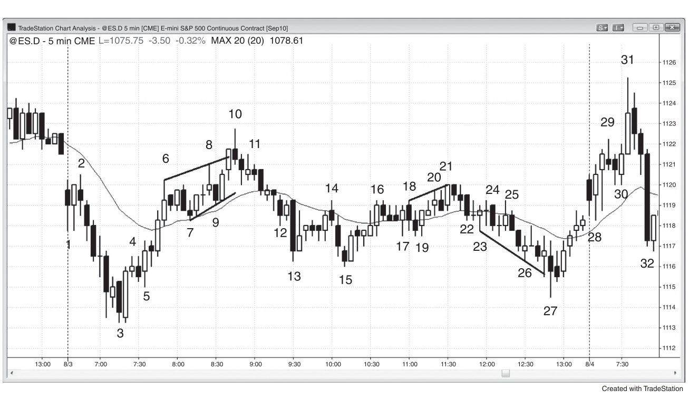
Sometimes a bull spike and channel can end with three pushes up, a trend channel line overshoot, and a strong bear reversal bar, but most reversals are not so straightforward. In Figure 21.1, bar 6 was part of a two-bar spike up but the move up from the bar 5 low was so steep that you can also consider bar 5 as the start of the spike. It does not matter because any strong reversal up on the open is likely to have follow-through buying, and there will be buy programs based on each. Here, it was in the form of a channel that had three pushes up and a wedge shape. Channels often pull back after a third push up. Bar 10 overshot the trend channel line and reversed down into a bear reversal bar, which set up a short trade. A bull wedge usually corrects in two legs down to around the bottom of the wedge, and a channel in a spike and channel bull usually corrects down in two legs to the start of the channel, which is also the bar 7 low.
Spikes can be cumulative. The bar before bar 7 was a bear spike but it simply led to a test of the moving average. Bar 9 was a second bear spike. These two spikes indicate that the bears were trying to seize control over the market and that the market was becoming two-sided. Bar 10 was the first bar of a two-bar bear spike, and bar 11 was followed by another bear spike. Just because that final spike broke below the wedge and clearly led to the bear leg does not mean that it turned the market all by itself. Those earlier spikes were also part of the transition and should not be overlooked. As they were forming, you should understand that the market was telling you that it was in transition and you should begin to look for trades in both directions and not just buy setups.
Bar 16 was a one-bar spike but the spike up also can be considered to have begun with bar 15. There was a pullback to bar 17 and then three small pushes up to bar 21, where the market reversed.
The bar after 15 is a one-bar spike, and the four bars that followed formed a small channel, ending at bar 16; the entire move up to 16 was also a spike.
Bar 22 was a spike down and it corrected sideways to bar 25, where a channel began down to bar 27, which was the third push down after the spike (bars 23 and 26 were the first two), and bar 27 overshot the trend channel line and closed in its middle. That was not a strong signal bar and neither was the bear inside bar that followed, but the market reversed up into the close.
Deeper Discussion of This Chart
In Figure 21.1, the market broke below the moving average and the trading range at the close of yesterday. Since there were many bear trend bars in that trading range and the first bar of today had a strong bear body, it is reasonable not to buy the failed breakout long that was set up by the second bar of today and instead to wait for a second signal before going long. Even though the second bar was a strong bull reversal bar, there was nothing to reverse since it totally overlapped the prior bar. This was a small trading range, not a good reversal. All down gaps are bear spikes and can be followed by bear channels.
Bar 2 trapped bulls and became a breakout pullback short setup for a bear spike and channel trend to bar 3. Bar 3 was a breakout below a one-bar final flag and became the first bar of a strong two-bar reversal that became the low of the day. Arguably, this bull reversal can be described as a failed breakout but it more accurately is a reversal up at the end of a bear channel.
The bull trend bar before bar 6 is when traders gave up on the possibility that the rally from bar 3 was just a bear flag. That bar was a breakout from the notion that the market was in a bear trend to the idea that it had flipped into a bull trend. This idea was confirmed on bar 6, when most traders finally believed that the market became always-in long. Many believed that the market had reversed to up by the close of the bar before bar 6, and that bull trend bar was also a spike, a breakout bar, and a gap. The low of the bar that followed it (bar 6, in this case) formed the bottom of the gap, and the high of the breakout point formed the top of the gap. Here it was both bar 5 and the small bear inside bar that followed it. Since the bar before bar 6 was a gap, that gap was a magnet and had a good chance of being tested over the next 10 bars or so. Bar 7 was the test, and it became the bottom of the channel that followed the spike up. Some saw the spike beginning on the trend bar before bar 6, and others saw it as beginning at bar 5 or the bull bar after bar 3. Bar 12 was the correction down from the channel high, and, as expected in a spike and channel pattern, the pullback again tested the gap and tried to form a double bottom with the bar 7 bottom of the channel up to bar 10. In this case, it failed.
Bar 12 was the test of the bar 7 bottom of the bull channel that ended at bar 10, but the move down to bar 12 was in a tight channel so it was likely just the first of two legs down. Because of this, a double bottom bull flag long never triggered above the bull inside bar after bar 12. Instead, bar 13 was a large bear trend bar. Since it was occurring at the end of a relatively long bear leg, it was more likely to be an exhaustive climax that should lead to at least a 10-bar, two-legged sideways to up correction. I use the phrase
“10-bar, two-legged” often, and my intention is to say that the correction will last longer and be more complex than a small pullback. That usually requires at least 10 bars and two legs.
The move up to bar 14 was the first leg, and then it pulled back to a lower low at bar 15, and this was followed by a second leg up to bar 21. Bar 15 might have been the second leg down from the bar 10 high but it turns out that the correction became more complex and the second leg ended at bar 27, which formed a double bottom bull flag with bar 5 and again with bar 15. It does not matter which you consider, because the implication is the same. There will be some programs that use one and other programs will use the other, but both types of programs will be buying for a measured move up.
They were looking for a second leg up from the bar 3 low in the form of leg 1 = leg 2 where leg 1 was bar 3 to bar 10, and leg 2 was the bar 27 low up to the bar 31 high.
On a higher time frame chart, bar 27 was a simple high 2 buy setup, since it was two legs down from the rally to bar 10. It was a two-legged higher low after a strong move up, and became the pullback that led to the measured move up to bar 31. The rally to bar 31 overshot the measured move by a few ticks but it was close enough to satisfy the bulls who took profits there. The market then sold offto the bar 32 low.
The move down to bar 15 was a wedge bull flag where the first two pushes ended at bars 7 and 13. It does not matter that bar 10 was a higher high test of bar 6 instead of a lower high because this is common in wedge flags.
Bar 21 was a wedge bear flag, which is common when the breakout above a double top fails. Bars 16 and 18 formed a double top but instead of breaking out to the downside, the market broke out above. The market had two small legs up to bar 21, where the market reversed and the breakout failed. Bars 16, 18, and 21 are the three pushes up in the wedge bear flag.
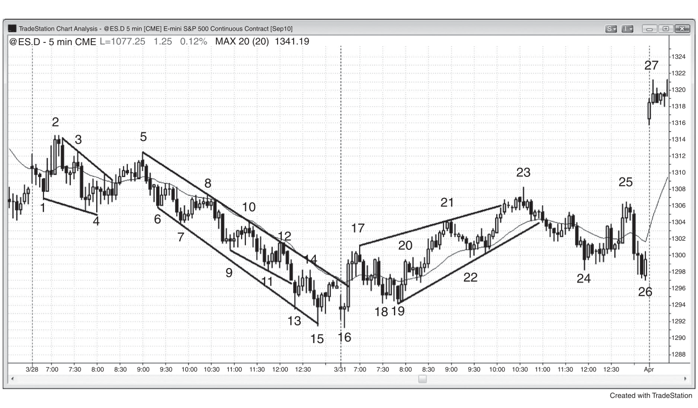
Some form of a spike and channel trend is present every day. In Figure 21.2, the first day, March 28, was a bear spike and channel day that began with a spike up but reversed into a three-bar spike down from bar 2 and then again from bar 3. There, it attempted to form a double bottom with the swing low at the end of the prior day. Either of the two large bear trend bars between bars 2 and 4 could also be considered the initial spike of the bear trend. Bar 8 formed a double top with the top of the small bear flag that followed bar 6, and then the market drifted down in a tight channel all day, with several good short entries near the moving average.
The market broke above the channel on the next day with the spike up to bar 17. Since the start of the channel usually gets tested, traders could now start to look for long setups for a test of the bar 5 area. The bar 5 start of the bear channel was tested by bar 23 and exceeded by the bar 27 gap up on the following day.
The channel down to bar 15 became slightly parabolic (it broke below the bear trend channel line from bar 9 to bar 11, indicating that the slope of the decline increased), which is climactic behavior and therefore not sustainable long-term. Traders could have also created the trend channel line by taking a parallel of the bar 5 to bar 8 trend line, and then anchoring it to the bar 6 or 7 low. Bars 13 and 15 would have overshot that line as well.
During the sell-off, the bears scale into shorts and scalp for every conceivable reason. For example, they might sell on every two-point bounce or above the high of the previous bar, like above bar 9 and above the high of each of the five bars that followed bar 9 and had a high above the high of the prior bar. They would short at the moving average and at the trend line, like at bar 10. They would short on every tiny break above the trend line, like at bar 11. They would also short below the low of every pullback bar, like below the low of bar 10. Other bears will short on a fixed amount below every test of the top of the channel, like one or two points down after the test, betting that the downward momentum will have follow-through. Since this bear trend will be evident on every other small time frame and every other type of chart, traders will be shorting based on those charts as well, and on higher time frame charts.
Aggressive bulls would be buying in that same bear channel. Some will be buying for scalps, like maybe at every test of the trend channel line, like at the bar 13 and bar 15 lows. Others will be scaling in, believing that the market should test the bar 8 or bar 10 top of the channel either today or tomorrow. They might buy every test of the trend channel line and every new swing low. For example, they might have limit orders to buy as the market fell below the bar 11 low during the spike down to bar 13. They might buy at the low, a few ticks lower, or a couple of points lower. Others will buy at the first sign that the sell climax down to bar 13 is stalling. They would see the smaller bear body and the large tail as a sign of exhaustion and therefore likely to be followed by a tradable rally. Some traders will scale in with larger positions, like two to three times the size of the prior position. Some will buy on a stop two points above the low, seeing a bounce of that size as a sign that the reversal in underway. Others will be trading off smaller and larger time frame charts or charts based on ticks or volume. The sell-off might be a pullback to the 60 minute or daily moving average, or to a strong bull trend line on a higher time frame chart. There are traders both buying and selling for every conceivable reason and scaling in and out using every imaginable approach. They can all make money if they know what they are doing. For most traders, however, it is risky to scale into longs in a bear channel in the final couple of hours of the day. They will too often find themselves holding a large losing position that they will be forced to exit before the close with a loss. Traders are more likely to make a profit in a bear channel if they look for short setups rather than trying to scale into longs, especially in the final couple of hours of the day.
The spike up to bar 17 was followed by a wedge-shaped channel up to bar 23, and then a pullback, and then a large gap up on the next day. That gap up move might still be part of the channel up. Any gap is also a spike, and it can then be followed by another channel.
The move down from bar 8 to bar 9 was also a spike, and the bear channel from bar 10 to bar 15 was retraced by the rally to bar 21. The move down from the double top bear flag created by bars 10 and 21 ended at bar 22, which was also a test of the moving average. A strong bear move should not be expected since there has been a trend reversal into a bull trend and the move up to bar 21 was strong. Seven of the prior eight bars had bull bodies and trending highs, lows, and closes.
Deeper Discussion of This Chart
Bar 4 in Figure 21.2 was a wedge bull flag buy setup and the rally ended in a double top bear flag (bars 3 and 5).
The bear channel tested the bear trend line five times, yet was never able to accelerate to the downside very far. Whenever the market repeatedly tests a line and does not fall far from it, the market usually breaks above it.
The bottom was formed by the three pushes down at bars 13, 15, and 16. Even though the pattern did not have a wedge shape, the implication is identical.
The spike up to bar 17 broke above the bear trend line. Bar 17 was a moving average gap bar, which often begins the final leg of the trend before a larger reversal takes place.
The sell-offfrom the moving average gap bar tested the bear low in the form of a higher low at bar 18, which formed a double bottom bull flag with bar 19, and a double bottom pullback with the bar 15 and 16 double bottom. A double bottom bull flag is just a higher low that has two tests down.
Channels often pull back after the third push up, and since the rally to bar 23 was below the top of yesterday’s bear trend, many traders saw it as a bear rally and were looking to short it. The wedge bear flag and the bar 23 bear reversal bar formed a good sell setup for at least a two-legged move down. Traders expected it to last about 10 or more bars and maybe test the bar 22 or bar 19 lows. The move down to bar 24 had two legs but was steep enough to make traders wonder if it was actually just a complex first leg. This resulted in the sell-offto bar 26 at the close. Bar 26 tested near the bottom of the bull channel, where it formed a double bottom bull flag with bar 18 (or 19).
The bar 17 gap up opening was almost a measured move up above the wedge, which is common when the market breaks above the top of a wedge.
There was a small wedge bear flag from bar 24 to bar 25.
The rally from bar 4 to bar 5 was also a wedge bear flag.
There was a large wedge bull flag using bars 22, 24, and 26, even though the rally to bar 25 eliminated the wedge shape. Most three-push patterns function exactly like wedges and they should all be considered to be variants.
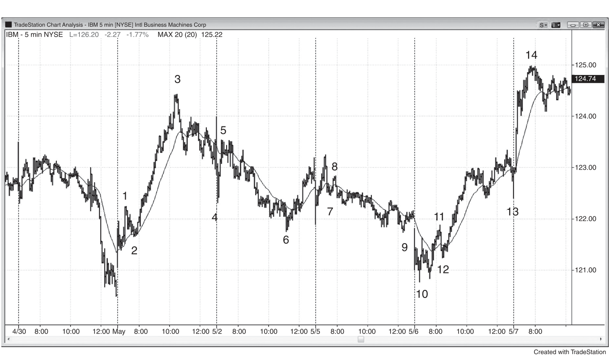
IBM had several spike and channel days on the 5 minute chart in Figure 21.3, and some were nested, with larger ones subdividing into smaller ones, which is common. Since the start of the channel often gets tested within a day or two, make sure to consider countertrend setups even on the next day. Each of the channel beginnings (bars 2, 5, and 8) was tested except the last one (bar 12). Bar 13 tried to begin the sell-off to test bar 12, but it instead it quickly failed and reversed up strongly.
The spike up to bar 1 was followed by a nearly vertical and slightly parabolic move up to bar 3 instead of a typical channel. This is a variant of a spike and channel trend. This also happened with the spike up to bar 11 and the channel up from bar 12. When channels are this steep, they usually are spikes on higher time frame charts.
The rally to bar 3, from either bar 2 or the low of the chart, was so steep that it was a large spike. In fact, it formed a four-bar bull spike on the 60 minute chart, and was followed by a large, two-legged pullback that ended at bar 10 (bar 6 was the end of the first leg). The market rallied for the next two weeks to almost an exact measured move up (at $128.83, which was equal to about the height of the low of the chart to the top of bar 3, added to the high of bar 3).
Although the spike down to bar 7 appears to be the obvious choice for the start of the bear leg, there was another interpretation and both probably influenced the market. Notice the large spike down on the open of May 5. Although the market rallied to a nominal higher high, this bear spike was very important and can be considered the spike that led to the channel down. The higher high might have been simply a higher high pullback from the bear spike and can be viewed as the start of the bear channel.
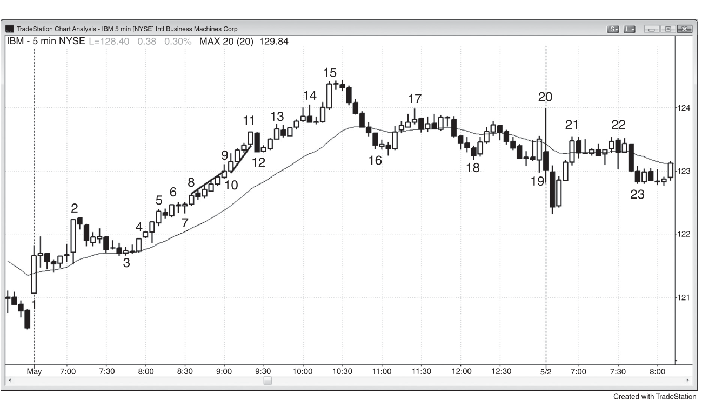
Figure 21.4 is a close-up of the prior chart that illustrates the parabolic nature of the channel. The move from bars 8 to 9 was in a steep micro channel but the market broke above the channel and formed an even steeper bull channel from bars 10 to 11. This increase in the slope creates a parabolic shape, which is unsustainable and therefore a type of climax. However, a climax can last longer than you can sustain your account, so never look to short such a strong bull trend, even though you know it cannot last indefinitely.
Although it did not seem likely, the market tested below the low of the beginning of the channel at bar 3 on the following day.
Whenever a market starts to develop about 10 or more strongly trending bars with little overlap and small tails, it is in a very strong trend and traders are buying it at the market. Why are they not waiting for a pullback? Because they are so certain that prices will be higher very soon and they are not certain that there will a pullback soon, so they don’t wait for a pullback that might not come. Even if there is a pullback, they are confident that it will be shallow and last only a few bars before there is a new high.
The move from bar 1 to bar 2 is a spike and climax trend. Bar 1 is the spike, but instead of a channel, the market created a second spike at bar 2. Consecutive climaxes are usually followed by a deeper pullback, often to the bottom of the second climax, as it did here. Since this is exactly what spike and channels do, a spike and climax should be thought of as another type of spike and channel trend.
Although the move from bar 7 to bar 11 was a micro channel, it was tight enough so that traders expected it to be a spike on a higher time frame chart. The entire move from bar 3 to bar 15 was tight enough to be a spike as well. In fact, the market pulled back to near the bottom of the spike over the next three days. This was followed by a seven-day bull channel that reached a measured move up, based on the height of the spike.
The move up from bar 12 to bar 14 was in a channel, and it was followed by a spike breakout consisting of two bull trend bars to the bar 15 high. Here, there is a spike following a channel, which is sometimes the case in a spike and climax variant of a spike and channel pattern. The spike is the channel up to bar 14 and the channel is the spike up to bar 15, and the combination behaves like a traditional spike and channel pattern.
As strong as the three-bar bull spike up to bar 21 was, on a small enough time frame—for example, a 10 tick chart—it was almost certainly a tight channel, as are most spikes.
Deeper Discussion of This Chart
In Figure 21.4, bar 1 was a strong bull breakout bar that broke above the bear channel of yesterday’s close and above the moving average. It opened almost on its low tick and was a bull spike that was likely to be followed by a bull channel. There was a second bull spike at bar 2, and these back-to-back buy climaxes were followed by an eight-bar pullback to the moving average, where bar 3 tested the low of the pullback after bar 1 and set up a double bottom bull flag long.
The four bull trend bars ending at bar 9 were fairly uniform in size, not too large so not climactic, and contained in a micro channel. This kind of strength would almost certainly be followed by higher prices and traders could have traded it like a bull spike, which it probably was on a higher time frame chart. They could simply buy on the close of any of the bars and put a protective stop below the bottom of the spike, which was the bull bar that formed two bars after bar 8. Whenever the market is trending strongly and has not yet had a climax, experienced traders are buying small positions all of the way up. Since their protective stop is relatively far away, their risk is greater so their position size is smaller, but they keep adding to their position as the market rises. Bar 12 was the first attempt to reverse the channel and was likely to fail, but the bulls started taking profits on the bear bars that followed, like the bar after bar 13 and again on bar 14.
They took their remaining profits on the two-bar buy climax up to bar 15, on the small bear inside bars that followed, and on the strong bear trend bar after that, which was probably going to lead to at least a two-legged correction after the buy climax.
Bar 15 was a large bull trend bar at the end of a protracted trend. Although it might have been a breakout and the start of another leg up, it was more likely a buy vacuum.
The strong bulls and bears were waiting for a bar like this to sell around its close. It always forms just below one or more resistance levels, and as the market approaches the area, the bears and many bulls step aside. The bulls who like to buy strongly rising markets were unopposed and quickly pushed it up to the target. The strong bulls took profits and the strong bears shorted. Both expected the buy climax to be followed by a deeper, more complex correction, where they would then both buy. The bears would take profits on their shorts and the bulls would reestablish their longs.
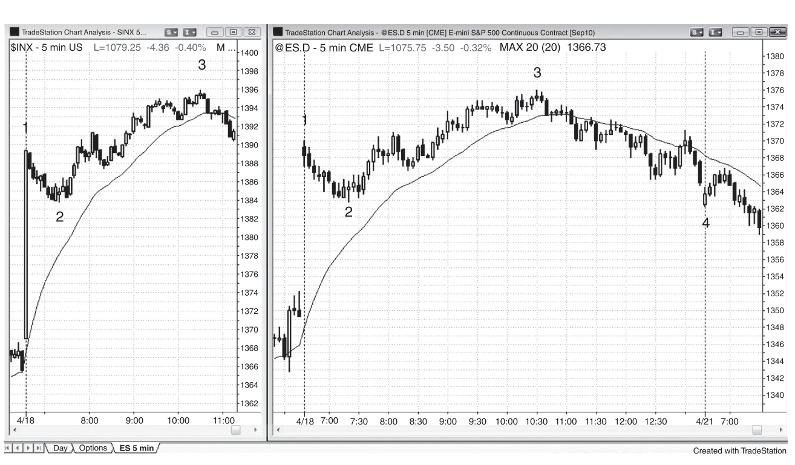
Sometimes a gap can be the spike, forming a gap spike and channel day (see Figure 21.5). The chart on the left is the S&P cash index, and you can see that the gap up on the Emini chart on the right was just a large bull trend bar and therefore a spike up on the cash index. Therefore, it makes sense to consider a gap on the Emini as just a large trend bar.
The bar 2 start of the channel was tested on the next day (bar 4). The channel up to bar 3 was losing momentum and began to curve downward as it rounded over at the top.
Deeper Discussion of This Chart
The bull flag from bars 1 to 2 that led to the channel in Figure 21.5 also functioned like a final flag, but the breakout before the reversal down from bar 3 was protracted. It might have been a final flag on a higher time frame.
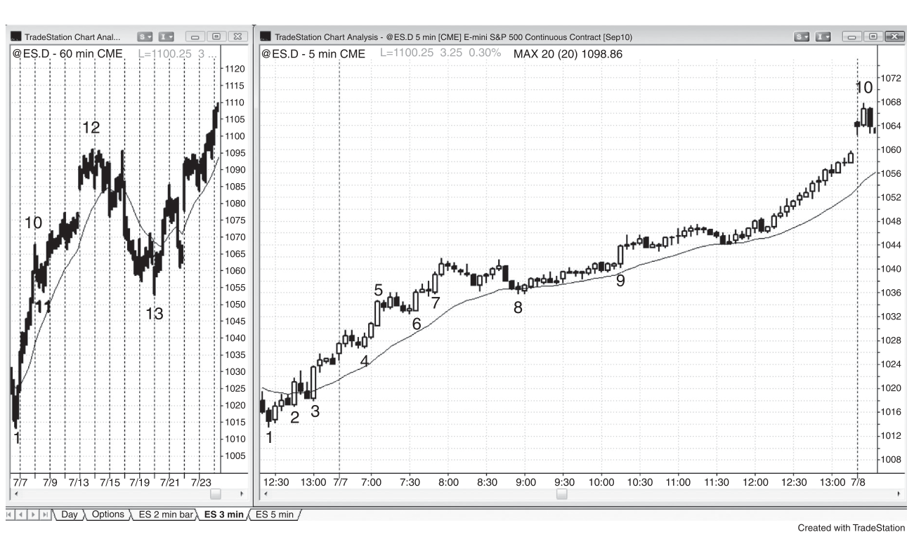
Sometimes the market just keeps forming a series of spikes, and the channels are so steep that they become spikes on a higher time frame chart (see Figure 21.6). The 5 minute Emini chart on the right had many spikes up, and the channel from bars 8 to 10 was so steep that there was no pullback that tested the beginning of the channel. Instead, the entire spike and channel pattern up to bar 10 was just a spike on the 60 minute chart on the left. Bar 10 on the 60 minute chart corresponds to bar 10 on the 5 minute chart. The 60 minute chart then formed a channel up to bar 12 and the market corrected back to the bottom of the 60 minute channel by bar 13.
Although the three-bar spike from bar 4 to bar 5 formed the clearest spike of the day on the 5 minute chart, there were several other spikes, like bars 2, 3, 6, 7, and 9, and all had the possibility of being followed by a channel up. The three-bar move down to bar 8 was a spike down, and it could have led to a channel down to test the start of either of the channels up from bars 4 or 6, but the bull trend was so strong that it was simply a 20 gap bar buy signal leading to a protracted channel up.
Deeper Discussion of This Chart
Yesterday closed in a small bull trend in Figure 21.6, and today’s open broke above a two-bar bull flag from yesterday’s close. Bar 4 was a breakout pullback long entry in this trend from the open bull trend day.
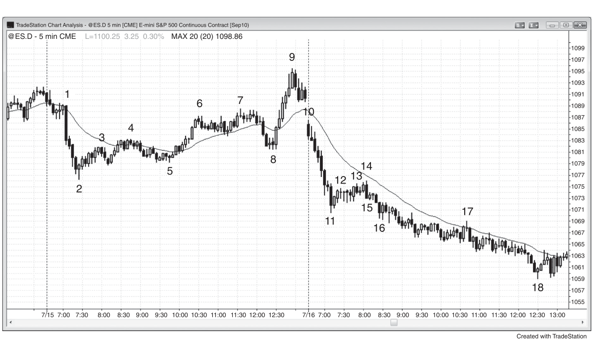
As shown in Figure 21.7, strong spikes don’t always appear to lead to channels, like the spike down to bar 2 or the spike up to bar 9. However, trends almost always begin with some spike, even though it might be easy to overlook. Sometimes, spikes and channels look very different on higher and lower time frame charts, but you do not need to look at them if you can infer what they show from what you can see on the 5 minute chart. What at first glance appears to be a big spike might in fact, on a smaller time frame, be a spike and channel that is so steep that it is easy to miss the channel. Conversely, what appears to be a steep spike and channel might be simply a spike on a higher time frame chart.
The move down from bar 1 to bar 2 looks like a spike but the market instead saw bar 1 as a spike and the next four bars down to bar 2 as a channel, which was probably much easier to see on a smaller time frame chart. The entire move down to bar 2 can also be viewed as a spike down that was followed by a pullback to a higher high at bar 9, and then the channel down began. Sometimes the pullback from the spike goes beyond the start of the spike before the channel begins.
The first part of that channel down was a spike from bar 9 to bar 11, which was followed by a channel down from bar 14 to bar 18. Also, the gap before bar 10 together with bar 10 itself formed a spike down, and then the move down to bar 11 was a channel.
Once you understand how to see the subtleties of spike and channel patterns, you will adjust your assessment of probabilities of your potential trades, and you will also find many more trading opportunities.
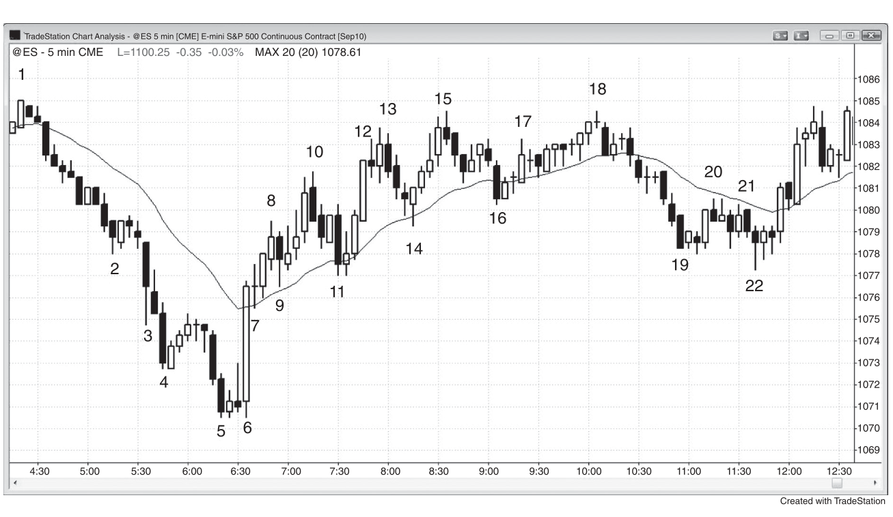
Consecutive climaxes create a variant of a spike and channel trend pattern. Every large trend bar should be thought of as a breakout, a spike, and a climax. In Figure 21.8, bar 3 was a large bear trend bar in a bear trend, and it was a sell climax. However, a climax does not mean that the market will reverse. It simply means that it went too far, too fast, and it might pause for one or more bars. The trend can then resume, or the market could go sideways or even reverse.
This climax was corrected by a one-bar pause, which was a bear inside bar, and was then followed by bar 4, another sell climax. Bar 4 was followed by a threebar correction and then a third consecutive sell climax that marked the low of the bear trend. This final sell climax was the two-bar move down to the bar 5 low. It does not matter that the bars are strong bear bars with large bodies, small tails, and little overlap. A climax usually leads to a correction. These traders were desperate to sell and could not take the chance of waiting for a bounce that would allow them to sell at a better price. Once these weak traders have sold, there is no one left who wants to sell and this leaves the buyers in control, lifting the market. There was a one-bar correction after the bar 3 climax, a three-bar correction after the bar 4 climax, and a major reversal after the bar 5 climax. Usually when there are two consecutive climaxes, there is at least a two-legged correction. When there are three, the reversal is generally even larger, as it was here.
Since consecutive climaxes are a variant of spike and channel trends, you can think of bar 3 as a spike and bar 4 as a channel, even though there is no series of small overlapping bars with tails as you would see in a typical channel. Then bar 4 became a spike for the channel down to bar 5.
Bar 6 was a bull spike that ended with the bar 8 channel. The move up to bar 8 was so steep that bars 6 to 8 could have been considered a spike, and they probably formed a spike on a higher time frame chart. Bars 7 to 10 formed a channel after the bar 6 spike. At this point, the breakout gap created by the bar 6 spike had two breakout points, the top of the small rally after bar 4 and the high of the bar before bar 6. Different traders have put more emphasis on one over the other, but both were important. Bar 11 was a test of the bottom of the channel and therefore a test of the gap. This made bar 11 a breakout test, and as usual it formed a double bottom bull flag with the bar 7 or bar 9 start of the bull channel. Once the market started moving up again, the bulls would not have wanted it to test back down. If it did, they would have seen that as a sign of weakness and the chance of a strong move up would have been greatly reduced.
Bar 10 was at the end of a four-bar parabolic move up. If you connect the highs of the consecutive bars from bar 9 through bar 10, the line created would have a parabolic shape. Its slope increased two bars after bar 9 and decreased between the final two bars. The channel from bar 7 to bar 10 was so steep that the move from bar 6 to bar 10 was probably a spike on a higher time frame chart.
Bar 12 ended a two-bar spike and bar 15 ended a parabolic channel. Bars 7 through 15 created a larger channel with three pushes. Bar 17 was a three-bar spike, and it was followed by a parabolic channel up to bar 18.
The three-bar spike down to bar 19 was followed by a small channel down to bar 22. Bars 21 and 22 formed a small spike and a second sell climax (the move to bar 19 was the first) and were therefore likely to lead to a correction up.
Deeper Discussion of This Chart
When beginning traders looked at the chart in Figure 21.8 at the end of the day, they immediately would see a trading range that began around bars 7, 9, or 11. As the bull channel from bar 7 to bar 15 was forming, they were probably not aware that a bull channel in a spike and channel day is usually the start of a trading range. However, experienced traders knew this, and they began to short above every prior swing high, and many scaled in higher. They exited their shorts around the bar 22 double bottom test of the bar 9 or bar 11 bottom of the bull channel. Bar 22 also appeared to be a possible final flag reversal, as well as a second entry long setup at the bottom of the developing trading range. Finally, it was a lower low pullback from the bar 20 breakout above the bear micro channel down to bar 19.
The wedge up to bar 15 was also a shrinking stairs bull channel since the second peak was eight ticks above the first and the third was only three ticks above the second.
This indicates waning momentum.
A wedge usually has a two-legged correction, but when the wedge is large, the legs often subdivide. The move down to bar 16 was contained in a fairly tight bear channel and therefore was likely to be just the first leg down, even though it subdivided into two legs. It had too few bars to adequately correct a wedge of this size. The low-momentum move to bar 18 was the pullback that led to the second leg down, which ended at bar 22.
Bar 18 was an exact double top with the bar 15 top of the wedge, and when the market reverses down at a double top test of a wedge high, traders become more confident that the top is in for the near term. The sell-offis usually strong and has at least two legs.
Bar 22 tested the bars 9 and 11 bottom of the channel and formed a double bottom bull flag with them. Since bar 20 broke above the micro channel down to bar 19, bar 22 was a two-legged lower low pullback from that channel breakout. The two-bar reversal that began with bar 22 was therefore a reasonable buy setup for at least a small swing up.
The move from bar 6 to bar 15 was so strong that the trading range to bar 22 that followed would likely have an upside breakout and maybe lead to a leg 1 = leg 2 measured move up (leg 1 was from bars 6 to 15 and leg 2 began at bar 22 and its end had not yet formed).
Most breakouts of trading ranges fail, so traders were expecting the move down to bar 19 to have little follow-through, since it was near the bottom of the trading range. If they shorted the low 2 at bar 21, they were expecting a final flag (bars 19 through 21)
and a reversal up from the bottom of the trading range.
Since bar 6 was a large bull spike, traders should look to take profits at possible measured move targets based on the spike. You should look at the open or low and measure to the close or high of the bar. In this case, the top of the spike was the bar 7 doji, which is not an obvious choice to consider, but it is best to look at every possibility.
The bar 15 high of the wedge was a measured move to the tick from the low of bar 6 to the high of bar 7, projecting that number of points up from the bar 7 high.
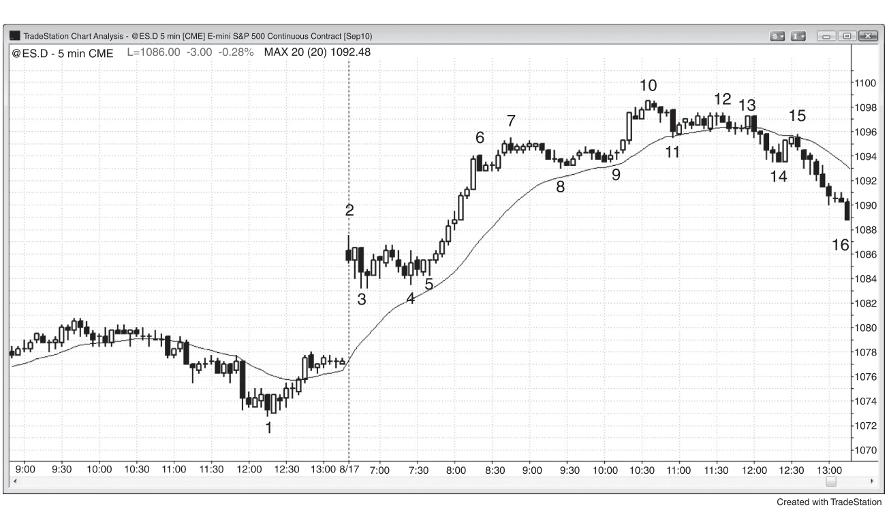
A large gap up on the open often has a two-legged sideways or down move before the trend up begins. Whenever the opening range (the first five to 10 bars or so) is under 30 percent of an average daily range, the day is in breakout mode and traders will buy a breakout above and short a breakout below. If this small range occurs when there is a large gap up, the odds of a trend day up or down are high.
In Figure 21.9, the rally from bar 5 to the bar before bar 6 was a strong bull spike. The market corrected sideways to bar 9 and then had a buy climax rally up to bar 10, completing the spike and climax type of spike and channel bull trend.
Bar 6 was the first bear spike in a strong bull trend, and it led to a bull flag (an iii pattern) as expected.
Once traders saw the strong bar 11 bear spike, they wondered if there might be a trend reversal because it was a reversal down from a higher high after the final bull flag to bar 9 broke the steep bull trend line. It followed a strong spike up after bar 9. When the market has two strong spikes in opposite directions within a few bars of each other, it then usually goes sideways as the two sides fight over the creation of the channel. The bulls want the channel to go up and the bears want it to go down. The market went sideways here but ultimately the bear spike won.
As the market went sideways, it formed a lower high in the form of a small double top at bar 12 and then a pullback to bar 13. Bar 13 was a bull trend bar that trapped bulls into a long position, and was the first bar of a two-bar reversal that led to a large sell-off.
There will often be a spike down and a spike up within a trading range, and this usually puts the market in breakout mode. The bulls are hoping for follow-through in the form of a bull channel, whereas the bears want a bear channel. Bar 9 led to a two-bar bull spike, and the pullback that could lead to a bull channel began with the bar 11 bear spike. At this point, the bears were looking for a bear channel. The market entered a tight trading range and the bulls attempted to begin their channel with the bar 13 bull trend bar, but the bears overwhelmed them and were able to turn the market down into a bear channel.
Deeper Discussion of This Chart
The market gapped up strongly in Figure 21.9, breaking out above yesterday’s high, but the first bar was a bear reversal bar and it set up a failed breakout short. The market went sideways and formed a double bottom at the bar 4 outside up bar. Some traders would have reversed to long as bar 4 went above the high of the prior bar, because many large gap up days have small double bottoms and then huge bull trends. Other traders bought above the bar 5 breakout pullback setup (an inside bar is a pause and, therefore, a type of pullback), and still others waited to buy until there was a breakout above the opening range, above bar 2.
Bar 5 was a breakout pullback buy setup for the breakout above the bars 3 and 4 double bottom or high 2. Bars 3, 4, and 5 also formed a triangle after a large gap up.
The large gap up was a spike and the triangle was likely to be a bull flag, since most trading ranges in bull trends break out to the upside.
Bars 6, 8, and 9 created a triangle (it could also be called a wedge bull flag), and any trading range in a bull trend is a bull flag. Bar 9 was also a one-bar pullback from the breakout on the bar before it from the bars 6 and 8 double bottom.
Although the bars 6, 8, and 9 triangle became a large final flag, the four bars down from bar 12 and the double bottom bull flag created by bar 11 and the third bar after bar 12 were also a final bull flag. The bull breakout to the bar 13 high was brief and could not even go above the bar 12 lower high, but it was still a final flag. It was a bull flag and the final attempt by the bulls to resume the trend, but it immediately reversed down after just a one-bar bull breakout.
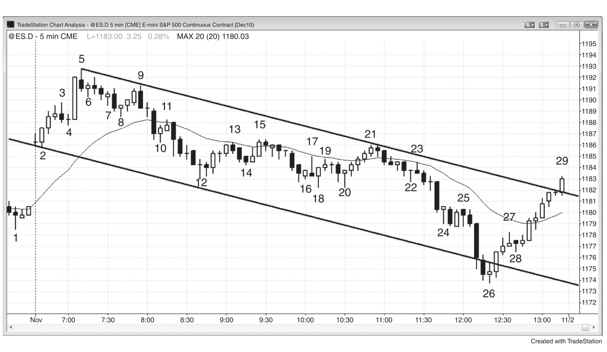
A spike and climax variant of a spike and channel pattern often has the spike and channel reversed. In Figure 21.10, there was a channel from bar 2 to bar 3, and it was followed by a large bull trend bar. The channel functions as the spike up and that one-bar spike functions like the channel.
Deeper Discussion of This Chart
The reversal down from the bar 5 high of the day in Figure 21.10 was also a final flag reversal where bar 4 was a one-bar final flag. After a climax, especially after a final flag reversal, the market usually has a two-legged correction, which means that a high 1 and maybe a high 2 would fail. If you shorted below bar 5, you then have to expect pullbacks and keep your protective stop above the bar 5 high until after the market has begun its second leg.
Once the market broke to the downside on the move down to bar 11, traders believed that there was going to be more selling, which meant that the breakout turned the market into always-in short. The breakout bar was therefore likely to lead to a measured move down and there could be a measuring gap. The gap between the bar 8 breakout point and the bar 11 pullback became that gap.
Since the spike up was sharp and therefore climactic, the high 1 above bar 6 was likely to fail. Aggressive traders would place limit orders to short at or above the bar 6 high 1 signal bar high and above the bar 7 high 2 signal bar high.
Bar 8 was a wedge bull flag (a high 3) and a reasonable scalp, but only if you were emotionally prepared to reverse to short as you took profits on your long, since a second leg down was likely. Since the move down to bar 8 was a channel, it was probably just the first leg.
The opening range was about half of the size of an average daily range, and therefore the day could become a trending trading range day, which it did. The upper range was from the bar 2 low to the high of the day, and the lower range was from around bar 12 to bar 22. The market then broke again to the downside and formed a channel from the bar 24 tight trading range, final flag area to the bar 26 low of the day, although there was very little two-sided trading and the market quickly reversed back into the middle range by the close.
It also became a spike and channel bear trend day where the move from bar 5 to bar 12 was the spike and the three pushes down to bars 12, 18, and 26 created a parabolic, climactic channel.
Once the market reversed up from the breakout below the channel at the bar 26 low, the next objective was a poke above the top of the channel, which it accomplished on the close.
Trending Trading Range Days
Primary characteristics of trending trading range days:
- The opening range is about a third to half the size of the range of recent days.
- There is a breakout after an hour or two and then the market forms another
- trading range.
- Because there are trading ranges, there are usually opportunities to take trades
- in both directions.
- There sometimes are multiple breakouts and trading ranges, but when this hap-
- pens, it is usually better to consider the day as a stronger type of trend day and trade only with trend.
- After the second trading range begins to form, there is usually a pullback that
- tests the earlier trading range.
- The test often breaks back into the earlier range. When it comes close to but
- does not penetrate the prior range, the trend is a little stronger.
- Sometimes the market goes all the way through the earlier range and the day
- becomes a reversal day.
- Most reversal days begin as trending trading range days.
- When the breakout is very strong, the day is more likely to become a weak spike and channel trend.
Since every trend has pullbacks and they are small trading ranges, some form of a trending trading range day is present during every trend day, and the trending trading ranges are the dominant features at least a couple of times each week. If the opening range is about a third to half of the size of the recent average daily range, then look for a breakout and an approximate doubling of the range of the day. These trend days are made of a series of usually two, or occasionally more, trading ranges separated by brief breakouts, and the formations are sometimes not readily seen as trading ranges. However, on the daily chart, the day is clearly a trend day, opening near one end of the bar and closing near the other. Whenever the market is creating trending swings but the day does not look like a clear trend day, it is probably a trending trading range day. Also, if the day’s range in the first hour or two is only about a third to half of the average range of recent days, watch for a breakout and an approximate measured move, and then a second trading range forming over the rest of the day. This type of trend is present in some form several days each week but is often better classified as another type of trend or even a large trading range.
Many days can be classified as either spike and channel trend days or trending trading range days, depending on their strength. The stronger the trend, the more the day will behave like a spike and channel trend day. The reason to try to distinguish between them is that they should be traded differently. When a day is more of a spike and channel trend day, it is a strong trend, and traders should focus on with-trend trades and swing trades. They should avoid countertrend trades unless there is a clear transition into a trading range or an opposite trend. When the day is more of a trending trading range day, traders can usually take trades in both directions and look for more scalps. As a day is forming, there are clues that tell traders if the breakout is more likely to lead to a strong trend day, like a spike and channel trend day (or even a small pullback trend day), or to a trending trading range day. Trading ranges are more common than strong trends, and trending trading range days, in particular, are about twice as common as spike and channel trend days, although every day has at least one spike and channel swing. The spike in a spike and channel trend day is most likely to begin early in the day, often from the first bar or with a large gap up or down. Also, it usually either breaks well beyond bars from yesterday or strongly reverses from a breakout, like a sharp rally from the first bar on a large gap down day. The spike in a trending trading range day is a breakout from a trading range, but it is usually still within the range of the prior day.
The opening trading range often lasts one to three hours and can be about half of the size of an average day’s range. This lack of urgency is a sign that the day is less likely to become a strong trend day. Also, the initial trading range has a magnetic pull, as does any trading range, and that works against the breakout going too far before pulling back and forming another trading range. The breakout on a spike and channel trend day is often large and fast. The spike can have three or more large bull trend bars with small tails and very little overlap. On a trending trading range day, the spike is usually just one to three bars, and they tend to be smaller and have larger tails and more overlap. If the pullback is just a single bar and the breakout from the pullback is another spike, even if it is smaller and only a single bar, the day is more likely to be a spike and channel trend day. If the pullback goes sideways for five to 10 bars, or if the breakout from the pullback is a weak channel with overlapping bars and trend bars in the opposite direction, the day is more likely to be a trending trading range day. If the pullback after the spike is strong enough to make traders uncertain of the always-in direction, a trading range is more likely than a trend channel, so look for scalps instead of swings.
Entering on the breakout of any trading range is a low-probability trade, except in special circumstances, which are discussed in book 2 on trading ranges. It is usually much better to enter on a breakout pullback or on some earlier reversal from the opposite side of the range, but if a trader is confident that the day might be evolving into a trending trading range day and the breakout is strong, the trader can consider entering as the breakout bar is forming, or around the close of the breakout bar or on the close of the next bar, if it is also strong. The breakout spike is usually followed by a channel, but it will often stop around the measured move area, and then the market will begin to form a trading range. The market breaks out of one range and then forms another. Rarely, three or four small trading ranges will develop in a day, but when that happens, the day should probably be thought of and traded as a stronger type of trend day, like a spike and channel or a small pullback trend day. Traders should focus much more if not exclusively on with-trend setups. If the market later pulls back into a prior range, it will often retrace all the way to the other side of that range. The implication is that the market consolidates in a range after the breakout. This means that there will be two-sided trading that tests both the top and bottom of the new range and possibly breaks out in either direction at some point. Once the market reaches the measured move area, it is likely to transition into a second trading range. Traders should then transition with it from trend style trading to trading range trading. For example, if the day is a bull trending trading range day, traders should take profits in the area that is approximately a measured move up, if the trend is weakening, based on the height of the lower trading range. This is because the market will then usually test down into the breakout area and then form a trading range.
Traders should not trail their protective stops below a swing low once they think that the market is in a trending trading range, because those stops will usually get hit. It makes more sense to look to exit on strength when the market is forming an upper range, than to exit on weakness. Remember, in a trading range, traders should buy low, sell high. Aggressive traders will fade big trend bars in the area of the measured move target. For example, in a bull trending trading range day, once the market gets close to the measured move target, bears will look for a large bull trend bar. If one forms, they will often short its close or just above its high, and then scale into more shorts if the market goes higher. They expect that the large bull trend bar is an exhaustive buy climax, and that it will be followed by an eventual test down into the gap (the two or three bull trend bars forming a breakout from the lower trading range), and possibly to the top of the lower range. Since they are expecting an upper trading range to develop, shorting at the top of a bull spike in the area where the market is likely to form the top of the upper trading range gives them an excellent entry price. This is discussed more in the second book in the section on trading range trading. Even if the market goes higher, the odds are very strong that the market will come back below their entry price. If they scaled in higher, they could exit their first entry at breakeven, and then move the stop on their higher entry to breakeven, and hold for a test into the gap.
Since there is two-sided trading throughout the day, it is common for the day to reverse through at least one of the trading ranges in the final hour or two of the day. Since each trading range has two-sided trading, it is a comfort zone for bulls and bears, who both see the area as value. This creates a magnetic pull and tends to draw breakouts back into the range.
The importance of recognizing this type of trend day is that this reversal is a reliable countertrend trade, since the market will usually form a breakout test. Because of this, once the breakout reaches the approximate measured move target where trend traders will take profits, traders will watch for a trade in the opposite direction, looking to exit on the breakout test. Experienced traders will fade strong trend bars around the measured move area, looking for the pullback to test the breakout gap. For example, when the average daily range in the Emini is about 10 points, if there is a trading range for a couple of hours and then an upside breakout, strong bears will begin to scale into shorts at about four to six points above the lower range. They are looking for a pullback into the breakout area and maybe all the way back to the top of the lower trading range. If the market reverses back into the prior range, it will likely test the countertrend signal bars in the prior range. For example, if a bear trend reverses up, it will attempt to reach the high of prior failed bull signal bars. If the rally extends to the top or above the upper trading range and the day closes up there, the day will be a reversal day on the daily chart. The day sold off and then reversed up and closed near its high. Most reversal days begin as trending trading range days (the section on reversal days in the third book has examples), so whenever traders recognize that the day is a trending trading range day, they should always be prepared for a possible late reversal swing trade, which might become a large intraday trend trade that can cover the entire day’s range.
Trending trading range days often give a subtle clue that a breakout should be expected. If you see a trading range day forming, but each swing high is a little higher than the prior one and each swing low is higher than the prior one, the market may already be trending even though it is still in a trading range. Once enough participants recognize this, the market breaks out and quickly moves to a higher level, where it once again will become two-sided and form another trading range.
When the initial breakout occurs, do not assume that a measured move is assured as the market tries to grow to an average daily range. In about a third of cases, the market will break out of one side and extend the range a little, and then reverse and break out of the opposite side and extend the range a little more, resulting in a quiet trading range day.
Sometimes there is a trading range with a height that is about half of the recent average daily range and the range stays small until the final hour. For example, if the day’s range in the Emini has been just five points as the market enters the final hour and the average recent range has been 12 points, and only two days in the past 12 months ended up with a range of five points or less, be prepared for a breakout at the end of the day. Every day has a range of five points at some point, if only for the first minute. Most trending trading range days with an initial range of only five points have a breakout within the first two or three hours, but several times a year the day will stay small until the final hour or two. When that happens, most of the time there will be a breakout that will increase the range, but usually not all the way up to the recent daily average. Don’t give up on the day and assume that it will end up as only a five-point range day, because in 90 percent of the cases the range will increase before the close and you can often profitably trade the brief breakout. Because the breakout occurs so late, there is often not enough time left to form much of a trading range, but because the day appeared likely all day long to be a trending trading range day, it is appropriate to discuss it here.
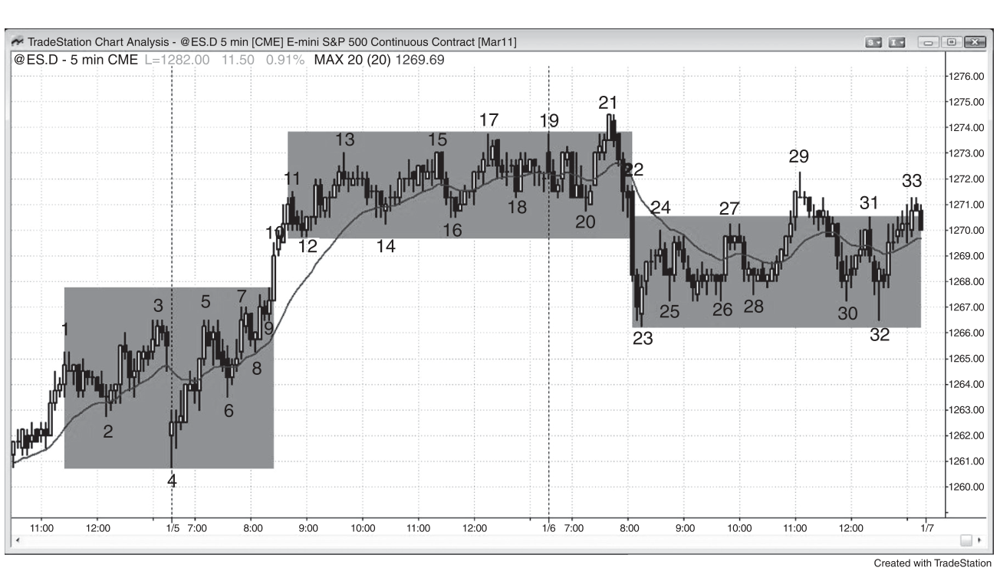
Trending trading range days often have a single large trend bar in between the ranges. In Figure 22.1, the market was in a trading range for the final couple of hours of yesterday from bar 1 to bar 3, and the trading range continued through the first couple of hours of today. Bar 10 was a large bull trend bar that broke out of the trading range and above the wedge top formed by bars 5, 7, and 9. The next bar was a bull trend bar, and it confirmed the breakout (it significantly increased the chance of higher prices and some kind of measured move up). The market immediately entered a small trading range for the rest of the day.
That range continued into the third day. Any trading range has a magnetic pull on the market, and this makes most breakout attempts fail. The trading range from bar 11 to bar 19 was the final bull flag in the rally, and the breakout to bar 21 failed. The market then broke below this upper trading range with the large bar 22 bear trend bar. The sell-off tested the top of the range from the prior day and formed another trading range. Bar 29 was a failed breakout of the top of the lower range and a third push up, and the pull of the lower range was greater than that of the upper range. The market traded back through the lower range, tested the bottom at bar 32, and then closed near the top of the lower trading range.
The bull spike from bar 8 to bar 13 was large but the follow-through channel from bar 12 to bar 17 was disproportionally small. The breakout gap in between the bar 9 top of the lower trading range and the bar 12 bottom of the upper trading range was large compared to the height of the upper range. This increased the chances that the market would come back into the gap to test its strength. The trading range from bar 23 to bar 33 was mostly within that breakout gap between bar 9 and bar 12, which often happens.
The initial range from bar 4 to bar 9 was about half the size of an average day. So traders expected the range to approximately double. When there is a trading range that is about half of the size of an average daily range, the most common way that the range increases is by a breakout and the formation of a trending trading range day.
The third day’s opening range from bar 19 to bar 21 was about a third of the size of an average day, and traders expected a breakout. Since they also expected a test into the gap of the prior day, a downside breakout was likely, and it followed the failed attempt to break out of the top of the range. The spike down to bar 23 was strong and it was possible that the day could have become a spike and channel bear trend day, but bar 23 tested the support provided by yesterday’s trading range (the highs of bars 3, 5, and 7). It was about a measured move down, and it also tested a three-day trend line (not shown). This means that the sell-off might have simply been a sell vacuum created by strong bulls and bears stepping aside until the market fell down to the support zone, at which point they bought aggressively. The bull spikes up from bars 23, 25, and 26; the double bottom bull flag created by the spikes in between bars 25 and 26; and the double bottom pullback at bar 28 all represented increasing buying pressure, and the market even flipped to alwaysin up on the spike up to bar 29. This is not what typically happens in the pullback after a spike in a spike and channel bear trend day, and this made a trending trading range more likely. If this was to become a spike and channel bear trend day, the pullback from the bar 23 spike would not typically have much buying pressure compared to the strength of the bear spike. The uncertainty created by the buying pressure increased the chances of a trading range instead of a brief pullback and then a protracted bear channel. Uncertainty is the hallmark of trading ranges and not of bear flags (a pullback leading to a bear channel).
The distinction between a spike and channel trend day and a trending trading range day is not always clear and sometimes not important. Although the trading range that began at bar 12 made the day a trending trading range day, it also had higher lows and highs and therefore was a weak bull channel. Remember, a channel is just a sloped trading range and both are areas of two-sided trading. The less sloped it is, the more it behaves like a trading range and the more safely traders can trade in both directions.
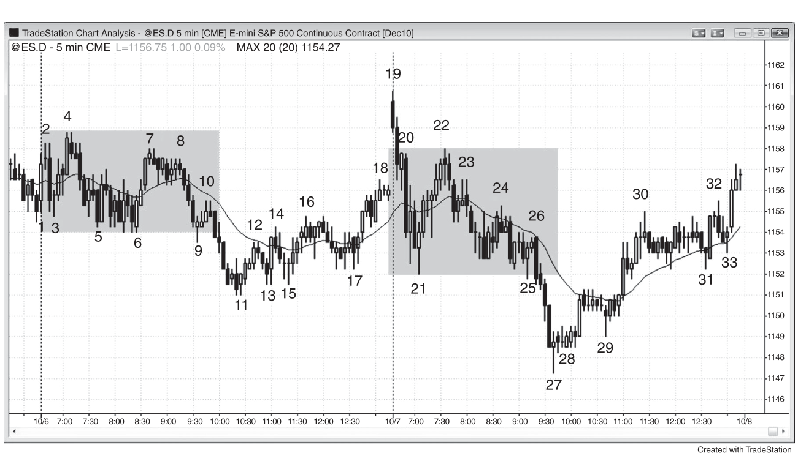
As shown in Figure 22.2, for the first couple of hours of both days, the range was about half that of the recent days. This alerted traders to a possible breakout in either direction. When the breakout starts later in the day like this, without a clear direction in the opening range, and the initial range is about half that of an average day, the breakout usually does not result in a strong, relentless trend, like a spike and channel trend. Instead, it usually has a pullback and then the market forms a lower trading range. The lower range may or may not break back into the upper range, and may sometimes break out again to the downside and form a third or fourth trading range. Since a lower trading range is more likely than a strong bear trend, the trading should be two-sided and the market usually works its way back to the breakout area. Once the breakout extends below the breakout point for about a third of an average range, traders will start looking to buy for a swing up to the bottom of the upper range. They would have bought the second attempt to reverse up above bar 11 and above bar 28. They also would have bought the double bottom at bar 5 and the higher low at bar 29.
Once the market breaks back into the upper range and holds up there, it often tests up near the top of the upper range, as it did on the second day. If the day closes near the top or above the upper range, the day becomes a reversal day. Aggressive bulls would have bought the close of the large bear trend bar before bar 27, expecting it to be an exhaustive sell climax that would lead to a test up to the bottom of the upper trading range. Some would have bought on limit orders at a measured move down from the height of the upper trading range. They would have counted the number of points between the top of bar 22 down to the bottom of bars 21 or 25, and then subtracted that number from the low of bars 21 or 25. They would have then begun to scale in around that price level, maybe starting a point or two above to a few points below. Others would have bought at the first sign of two-sided trading, like the close of bar 27, or as bar 27 was reversing off its low. Assuming that the average daily range was about 10 points, some bulls would have scaled in at four to six points below the bar 25 bottom of the upper range, looking to make three to six points on the pullback into the breakout gap (the bear trend bars below bar 25).
Although the sell-off from bar 19 to bar 21 was sharp, so was the rally up to bar 22. This led to enough uncertainty about the direction in the opening range to reduce the chances of a spike and channel trend day and increase the chances of a trending trading range day.
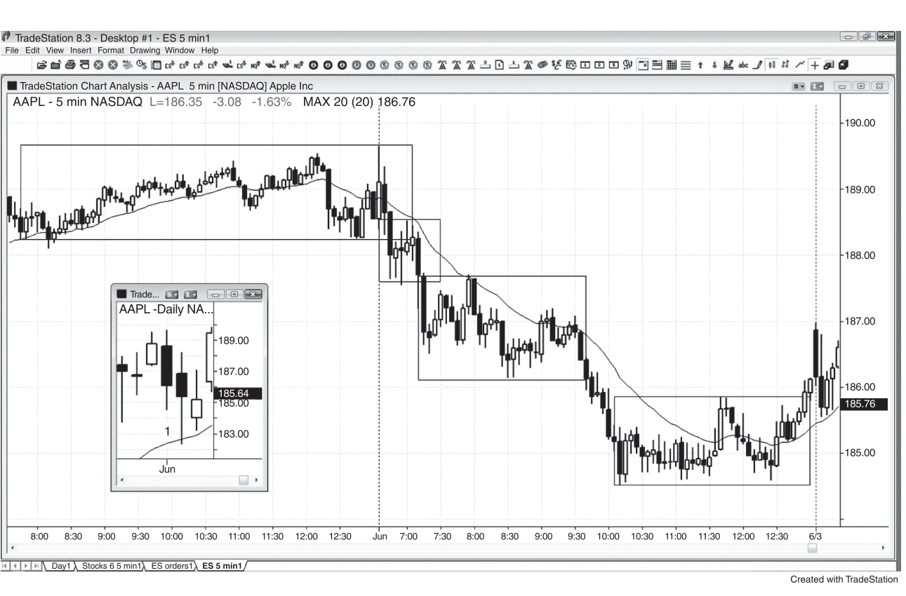
Sometimes a day can spend most of its time in trading ranges but still be a trend day. As shown in Figure 22.3, today may not look like a trend day, but it is, as can be seen in the thumbnail of the daily chart (today is bar 1), and it is made up of a series of trending small trading ranges. These days frequently reverse in the final couple of hours and retrace at least the final trading range.
Deeper Discussion of This Chart
Some days do not have reliable setups for an hour or more. In Figure 22.3, today opened at a flat moving average within the range of the final bar of yesterday, which had been in a small trading range, and that range continued for the first two bars of today’s open. The first two bars of today were large compared to the height of the trading range, and this makes them risky signal bars. Although shorting below the second bar was acceptable since it was a two-bar reversal short setup and a wedge bear flag below the moving average, the entry would be near the low of the trading range. It was safer to wait for the breakout and then short a breakout pullback, if there was one. One developed a few bars later but it was in a small, tight trading range and the bars had big tails, making it a less reliable trade. A better entry was below the 8:00 a.m. PST two-bar reversal and pullback to the moving average, which was a low 2 short.
There was a moving average gap bar short at 11:45 and the test of the bear low was in the form of a higher low. It is also appropriate to call it a double bottom bull flag.
This was a trending trading range day, so once it started to base around the $185 level, traders could have bought in that area for a test of the bottom of the upper range just above $186. The market made a two-legged sell-offdown to the $185 level and the second leg was an approximate measured move. The middle of the morning trading range was about $2.00 below the high of the day and the large two-bar reversal at
10:15 a.m. was about $2.00 lower, so traders would start buying. The bears were buying back some of their shorts and the bulls were buying for a test of the bottom of the upper trading range. The market entered a tight trading range and there were three small pushes down that ended with a large bear trend bar at 11:05. This was followed by a higher low at 11:30, and the signal bar had a bull body. This higher low was also a high 2 since the bar before it and the bar two bars before that had bear bodies. This is microscopic analysis and most traders would not trust this in real time, but experienced traders are always looking for signs that the market might turn, and these subtle hints would help give them confidence to take the long. If they bought above the 11:30 low, they could risk about 50 cents to below that low with the goal of making about a dollar on the test of the upper trading range.
Although you never know the directional probability of an equidistant move with certainty, whenever you feel that there is an imbalance, you should assume that it is at least 60 percent. Here, it was reasonable to assume that if you bought around $185, there was at least a 60 percent chance that the test of $186 would happen before your protective stop was hit if you placed that stop equidistantly below your entry (there is a 60 percent chance that you would make a dollar before you lost a dollar). You could have taken a partial profit on the doji inside bar after the bull spike up at 11:40 and exited the rest at breakeven as the breakout failed. Once the market double bottomed at 12:25, you could try the same long again and you would have succeeded. There was a chance of a measured move up to a $2.00 profit from the double bottom, but with so little time left in the day, this was unlikely.
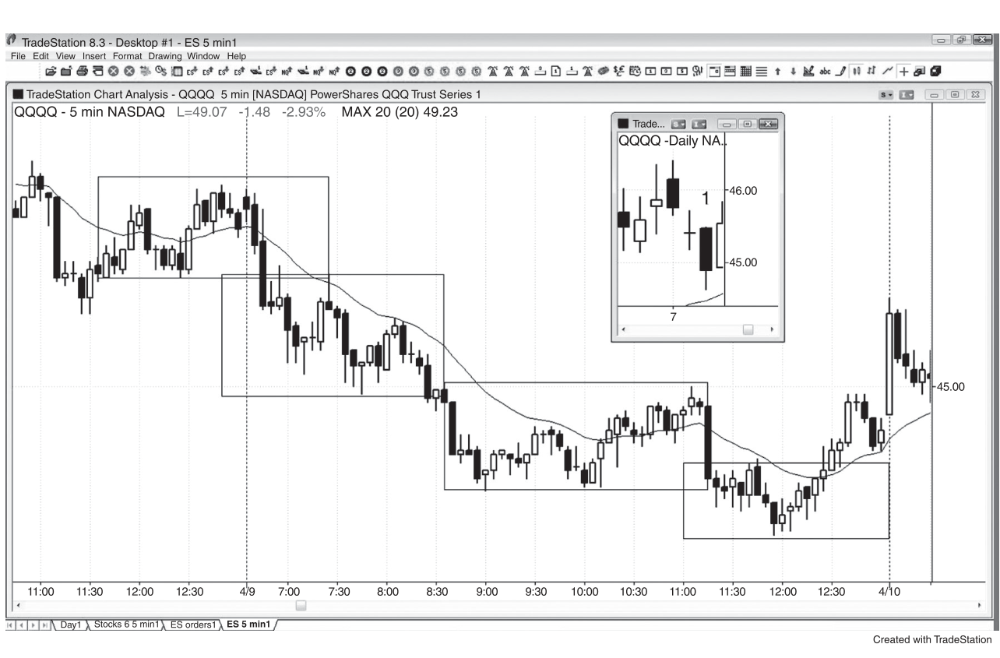
As shown in Figure 22.4, this was another trending trading range day with the first trading range beginning yesterday. The thumbnail of the daily chart shows it was a bear trend day (bar 1).
The final trading range reversed up and the market tested near the top of the higher trading range just before it. This often happens, since the two-sided trading means that the trending forces are not as strong as they are during other trend days. When a day is less strong, it is less likely to close on its low. Traders know this and look for a reversal trade going into the close.
Deeper Discussion of This Chart
In Figure 22.4, today again opened essentially unchanged and near a flat moving average.
However, the three-bar bear spike made a bear trend day likely. The spike broke below the trading range that formed in the final hour of yesterday. That trading range was also a two-legged rally and therefore a bear flag, so the breakout can be thought of as a breakout below the bull trend line along the bottom of the bear flag. Traders could short below the first pullback and then again below the moving average test, which was also a two-legged sideways correction to the moving average and an approximate double top bear flag setup.
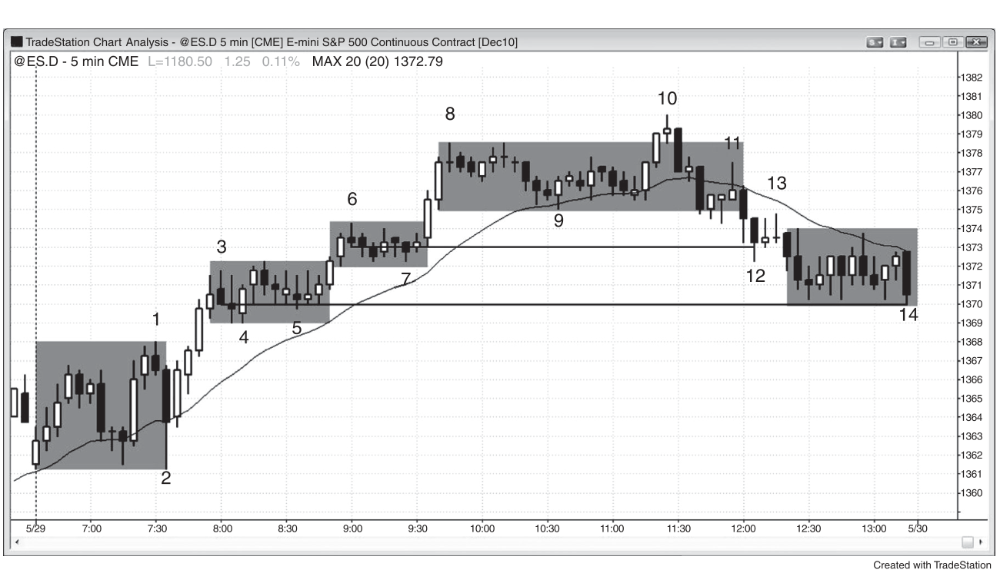
As shown in Figure 22.5, the first hour was contained in a seven-point range but the average range lately had been about 20 points, so traders expected the range to approximately double. Whenever a trend begins after an hour into the day, the day often becomes a trending trading range day, in part because by definition that first hour obviously was a trading range. The day often reverses back into and sometimes through one or more of the lower trading ranges late in the day, as it did here.
Deeper Discussion of This Chart
When the day is forming multiple trending trading ranges as in Figure 22.5, traders should concentrate on taking with-trend trades. Traders should have looked to buy only from the two-bar reversal at bar 2 to the 20 gap bar high 2 at bar 9. They should have considered shorting only at the bar 10 final flag reversal setup.
Many bulls would have taken profits on their longs, and aggressive bears would have shorted on the close and above the high of the bull trend bar before bar 10. The market had a spike up to bar 3 and then a channel or a series of small trading ranges, but the one that began at bar 8 was relatively tight and horizontal. This was an area of strong two-sided trading, and therefore a magnet that would tend to draw the market back in after a breakout. The market also often retraces into the prior trading range later in the day, and since 11:30 a.m. PST is a common time for reversals, the odds of a failed breakout and final flag reversal were high. The pullback could have tested the bar 4 start of the bull channel, so bears were happy shorting at the high of a large bull trend bar breakout above a swing high and potential final flag. Many would have scaled into more shorts higher, believing that the market had a 70 percent chance or better of at least testing their first short entry price before the close. This would have enabled them to exit their original shorts at breakeven and decide whether to exit their shorts from above with a profit or to move the protective stops to breakeven and swing the trade down.
Bar 2 was the first bar of a two-bar reversal up from a possible failed low 2 from a double or triple bottom, and the start of a bull trend. Traders were aware that the market could break out and run. Once the market broke out, it formed a higher range from bars 4 to 6, and that range contained two small tight trading ranges. The high 2 long above bar 5 was a reasonable breakout pullback entry, despite the barbwire. The breakout was both from the small bull flag from bar 3 to bar 4, and from the entire bar 3 to bar 5 trading range, which was a two-legged sideways pullback from the breakout above bar 1.
The market broke out to a third range, from bars 8 to 9. When it broke out again, it failed at bar 10 (a final flag reversal) and retraced through the bottom of the third range and ultimately to the bottom of the second range. There was a breakout pullback short below bar 11 after the bear spike, but the barbwire made it more risky. After the two bear bars forming a spike that ended at bar 12, there was a second breakout pullback short below bar 13.
The implication in the word range is that the market will test the low of the range at some point, although it could continue trading up. When a market retraces a strong move, the first target is always the earlier countertrend entry points. Here, the closest bear entry point after the market broke out of the top range was the low of the closest bear signal bar, bar 6. The market broke out of the top range, and then broke into the next lower range and took out that bear signal bar low on bar 13.
By the close, the market had tested the low of the bar 3 lowest bear signal bar in the second range.
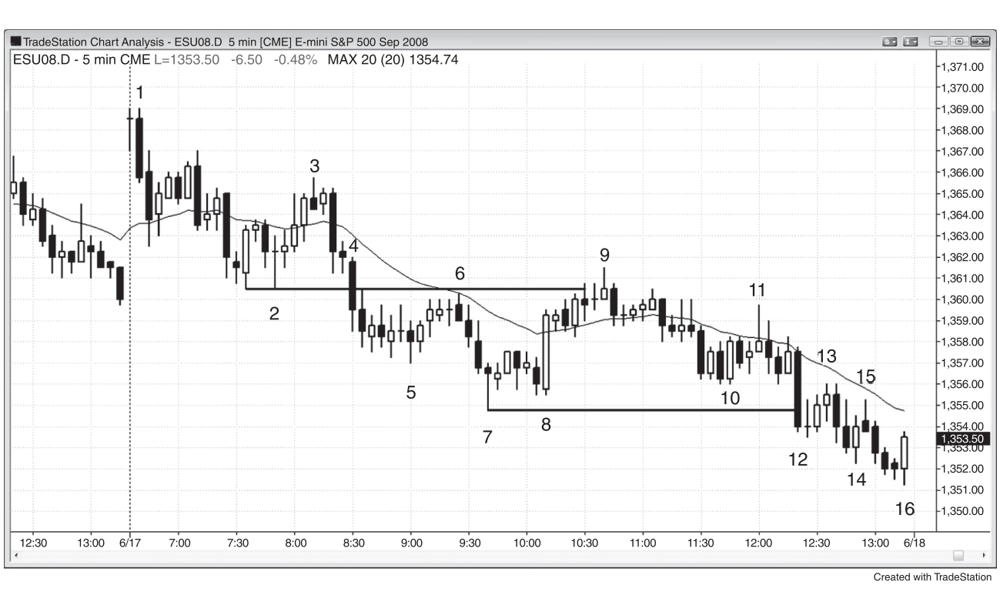
Although today (see Figure 22.6) opened on its high and closed on its low, and was a trend from the open bear trend day, there was too much sideways action during the first two hours for this to trade like one. A trend from the open trend day usually doesn’t have many significant tradable countertrend swings, but a trending trading range does, and is a weaker, less predictable type of trend day. The initial trading range broke down into a lower range on bar 4, creating a trending trading range day.
Until bar 3, the day’s range was only about half that of recent days, so traders were aware of the possibility of a lower trading range forming.
Bar 6 was a breakout pullback to the moving average and a breakout test of the bar 2 bottom of the upper range, offering a reasonable short entry.
Bar 9 was a breakout test of the upper range and failed breakout of the top of this lower range, setting up another short.
Bar 12 broke down into a third range, but there was not enough time left in the day for a test up to the bar 13 top of the range.
Deeper Discussion of This Chart
In Figure 22.6, yesterday closed below the moving average and today’s open was a bull breakout above the close and moving average. The first bar of the day was a doji and therefore not a reliable short signal bar. The bar 1 strong bear trend bar was a reasonable signal bar for a short one tick below its low for a test of the moving average and maybe the close of yesterday. Since large gap openings often lead to trends and this bear bar was a sign of urgency on the part of the bears, today could become a bear trend day and traders should short early and swing part until there is a strong bull reversal or until the close of the day.
After the two-bar bear spike, traders were expecting a bear channel and began to short pullbacks. The first pullback short was the low 2 that was triggered by the outside down bar just after 7:00 a.m. PST, and the next short was below the bar 3 bear reversal bar. It was a dueling lines short setup, forming both a double top with the earlier pullback and a wedge bear flag (the first push up was two bars before bar 2).
Bar 14 was a bull reversal bar, but it overlapped the prior two bars too much for it to be reliable. Also, it was within a relatively tight channel after the bar 12 bear spike, so it would be better to wait for a breakout pullback higher low before going long in a bear trend. Since it was a weak buy setup in a bull trend, its failure would likely be a good short setup. Bar 15 was failed high 2, and a low 2 with a bear reversal bar near the moving average in a bear trend is a very high-probability short setup because the bulls who bought the high 1 and the high 2 trend reversal attempts usually exit on a low 2.
The market just made two attempts to reverse the new low of the day, and this second one failed on the bar after the bar 15 long. When the market fails twice at trying to do something, it usually then goes in the opposite direction.
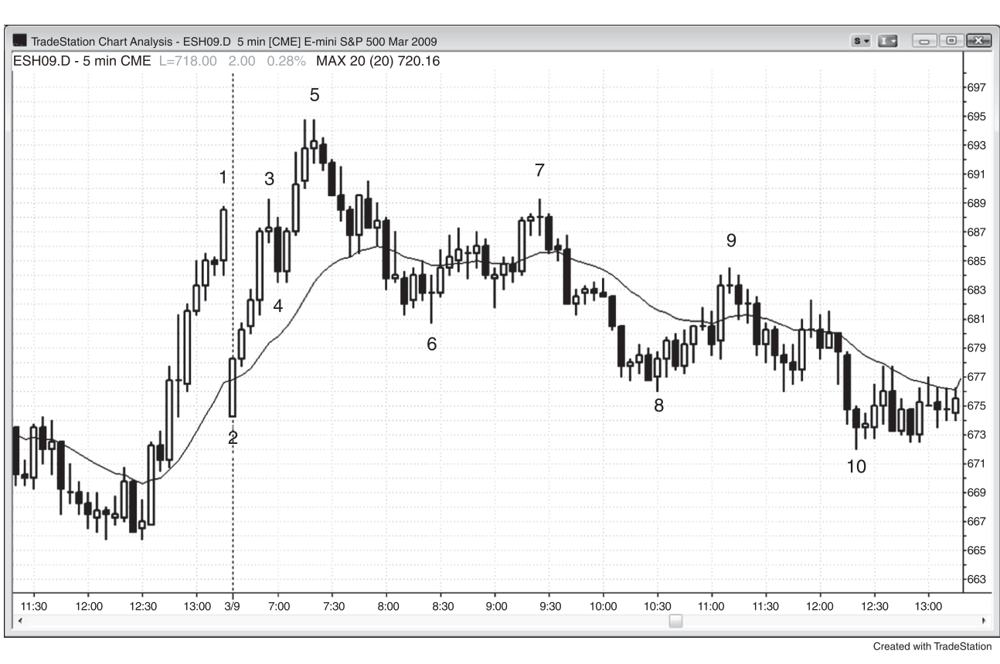
Whenever a market begins a trend after the first hour, assume that it will lead to a trending trading range day or that it will behave like one, and look for scalps in both directions. Although there was a bull trend from the open in Figure 22.7, it ended with a spike and climax at bar 5 and then reversed down into a trending trading range bear trend. It also can be viewed as a spike and channel bear trend, with the move from bar 5 to bar 6 being the bear spike, and the moves down from bar 7 to bar 8 and then the three-bar breakout to bar 10 as additional spikes. The channel down was broad enough and the pullbacks after the two breakouts overlapped the prior swing lows so that it was also a bear stair pattern.
Deeper Discussion of This Chart
The market gapped down to a higher low and formed a possible bull trend from the open in Figure 22.7. It was a test of the moving average after a strong spike into the close and a failed breakout below that strong bull channel.
A two-legged move up ended in a final flag short at bar 5. This was followed by a four-bar bear spike, which became part of a larger spike that ended at bar 6. This move broke below the bull trend line of the rally from the open, so a lower high could lead to a trend reversal down.
A two-legged lower high ended at bar 7, alerting traders to a possible continued move down. Bar 7 was a dueling lines pattern. It formed a double top with the top of the wedge bear channel down to bar 6 (the channel began with the small lower high that formed after the four-bar bear spike below bar 5), and it was a wedge bear flag (the first push up ended with the bar before bar 6, and bar 7 was the third push up).
The market behaved like a trending trading range bear for the rest of the day. The strong bull momentum up to bar 1 and again up to bar 5 were spikes up and could be followed by a bull channel at some point over the next day or two. Bars 6, 8, and 10 created a large wedge bull flag, and a test of the bar 5 high was possible. Bar 4 can also be considered part of that bear channel. The next day (not shown) in fact gapped up near the high of bar 7 and became a strong bull trend from the open day.
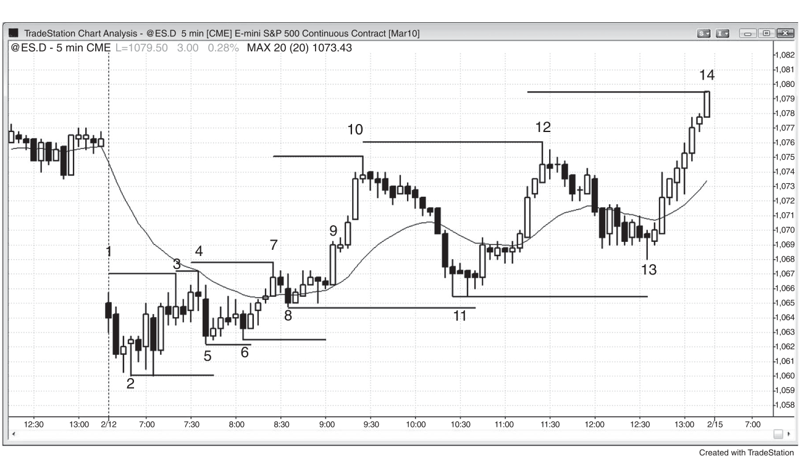
In Figure 22.8, the range for the first couple of hours was about half of an average daily range and this alerted traders to a possible breakout and the formation of a higher or lower trading range and the creation of a trending trading range day. The bull trend was already apparent before the bar 9 breakout. Notice how the bar 5 swing low was above the bar 2 low, the bar 6 low was above the bar 5 low, and the bar 8 low was above the bar 6 low. The same thing was happening with the swing highs at bars 3, 4, and 7. Even though the market was in a trading range for the first two and a half hours, both the swing highs and the swing lows were trending upward, indicating that there was already a bull trend going on within the trading range. This alerted traders to watch for a breakout, which occurred at bar 9. This higher trading range lasted until the breakout that followed the reversal up at bar 13. Both bars 11 and 13 were breakout tests. The double bottom at bar 11 dropped into the lower trading range, but the bar 13 low tested the bar 7 top of the lower trading range to the tick. When a pullback cannot drop below the breakout point, it is a sign of strength by the bulls.
Deeper Discussion of This Chart
The market broke out below yesterday’s close in Figure 22.8, and the first bar had a bear body, so the day could become a trend from the open bear trend day. However, there were tails above and below bar 1, and this increased the chances of an initial trading range. Traders should wait. Bar 2 was a micro double bottom, but both bars were dojis so this was not a setup for a strong trend. Even the bar 4 wedge bear flag at the moving average was a weak setup because it was part of a six-bar tight trading range and all of the bars had tails. This means that there is uncertainty, and that is the hallmark of a trading range. Traders could have bought above the bull inside bar that followed bar 5, but after that bar 4 wedge bear flag the market should have a second test down. This occurred at bar 6 and formed a double bottom with bar 5 and a double bottom pullback for the double bottom at the low of the day (bar 2 and the bar three bars later). It would be safer to wait to buy until after more evidence of bull strength, like the four-bar bull spike up to bar 7, but there were a couple of strong bull trend bars just after bar 2, and this is a good enough sign of strength to start taking long trades on pullbacks. Those large bull trend bars are a sign of buying pressure, which is cumulative. Once there is a critical mass of buying, the bulls take control and the market goes up.
After that bull spike to bar 7, there was a breakout pullback buy setup above the bull inside bar that followed bar 8, and that was also a failed low 2 buy signal. There was a high 2 long setup four bars later that led to the bar 9 strong bull breakout.
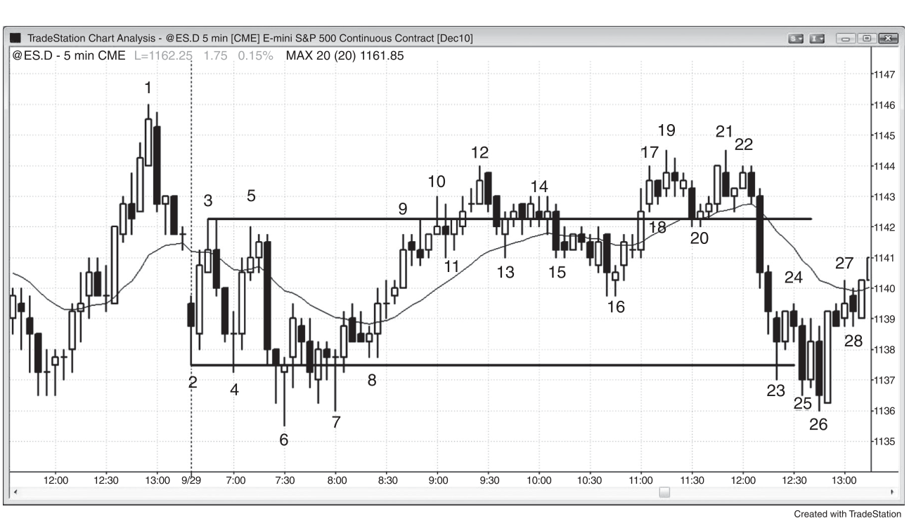
Just because the range of the first couple of hours is about half that of an average day does not mean there will be a breakout into a trending trading range day. In about a third of cases, the range increases by a breakout of both the high and low of the day, as it did in Figure 22.9. The market reversed up from new lows of the day at bars 4 and 6, and down from new highs of the day at bars 3, 10, 12, 19, and 21. The opening range probably ended with the reversal down from bar 5, and at that point the range of the day was about half that of recent days. This alerted traders to the possibility of a breakout either up or down and then a measured move that would approximately double the day’s range. However, simply entering on the breakout of a trading range is a losing strategy since the market always has inertia and most attempts to change from a trading range to a trend, or from a trend to a trading range, fail. No good short developed after the bar 6 breakout to a new low of the day, and in fact the bar 7 higher low after the three pushes down (bars 2, 4, and 6) and the bar 8 breakout pullback were reasonable buy signals for a test of the high of the day.
Bar 10 reversed down after breaking to a new high of the day, but the market was in a tight bull channel and therefore this was not a good short setup. The momentum up was not particularly strong so buying the bar 11 breakout pullback was a scalp trade at best. The market turned down again with a two-bar reversal at bar 12. Second-entry reversals on trading range days are usually reliable for at least a scalp.
The market had a run to a new high of the day after the bar 16 wedge bull flag and the market again failed at bars 19 and 21. Once it was clear that the upside breakout would not succeed, the market once again tried for a breakout of the opposite end of the day. As is often the case on trading range days, the market closed in the middle of the range.
When there are several possibilities for the top and bottom of the opening range, it usually does not matter which you choose because there is no agreement. When looking for a measured move target where you can take profits, initially use the smallest possibility for the opening range, like bar 2 to bar 3. If the market does not pause in that area, then look at the next larger possibility, like bar 3 to bar 4, or bar 3 to bar 6. Since today ended as a trading range day and not a trending trading range day, the obvious measured move targets were not reached. However, every reversal is due to computer algorithms based on some measurement, and there is almost always some type of measured move in the equation, even if it is not obvious.
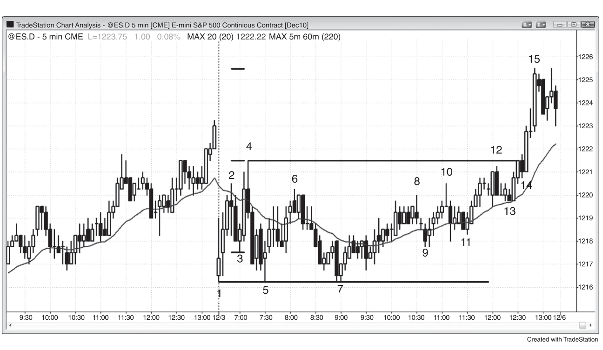
Sometimes the initial trading range is about half of the size of an average daily range and the breakout does not come until the final hour. In Figure 22.10, although there was not enough time left to form much of an upper range, the day was a setup for a breakout into a trending trading range day all day long. The range prior to the breakout was only 5.25 points and there were only two days in the past 11 months that ended with a range of 5.25 points or less. This meant that other days this year that may have had a 5.25 range for most of the day had a bigger range by the close, and that made it likely for today to have a late breakout up or down as well. Since the market had been trending up since the bar 7 triple bottom and triangle, and the number of bars between bars 9 and 12 with bull bodies was high, buying pressure was present and an upside breakout was likely. Traders would have bought on the bar 14 breakout above the bar 4 high of the day and on the close of the strong bar 14 breakout bar and again above its high.
The initial bear spike from bar 3 to bar 4 generated a measured move to the high of the day. Traders never know which of the possible measured move targets will be the level where the bulls will take profits, but it is good to be aware of the possibilities so you, too, can take profits as the market is racing up rather than a couple of points lower on the sell-off. The market might have also topped out at a measured move based on the bar 1 low to the bar 2 high or from the bar 5 low to the bar 4, 6, 10, or 12 high.
Trend from the Open and Small Pullback Trends
Primary characteristics of trend from the open days:
- The low of a bull trend day or the high of a bear trend day is formed within the
- first few bars of the day.
- If the opening range of the day is less than 25 percent of the average daily range
- of recent days, there may be a double bottom on a bull trend day or a double top on a bear trend day (if the opening range is about 50 percent of the average daily range, a breakout is more likely to lead to a trending trading range day).
- The day may begin with a strong spike lasting many bars or it may have a small
- opening range.
- If the market trends from the first bar or so and the initial spike lasts three or
- more bars, entering on the first pullback is usually good for at least a scalp.
- If there is a strong spike on the open that lasts many bars and covers many
- points, the day will usually become a spike and channel trend day.
- A large gap opening often leads to a trend from the open day, and the trend
- can go in either direction. When there is a large gap up and a trend from the open day forms, the day will be a bull trend day about 60 percent of the time and a bear trend day 40 percent of the time. The opposite is true for gap down openings. The larger the gap, the more likely the day will be a trend day and the more likely the trend will be in the direction of the gap.
- Trend from the open days have urgency and conviction from the outset and are
- usually the strongest trends and have the smallest pullbacks.
- Twenty gap bar and moving average gap bar setups come late in the trend.
- The strongest type of a trend from the open day and the strongest type of trend
- is one where the opening range is small, and then the day trends relentlessly with small pullbacks all day long. This is a small pullback trend day. For example, the pullbacks in the Emini might be just 10 to 12 ticks (10 to 30 percent of the average daily range). When that is the case, there is usually a pullback in the final couple of hours that is about 150 to 200 percent of the size of the earlier pullbacks, followed by a resumption of the trend into the close.
- To an experienced trader, the swing setups are 70 percent or more likely to
- work, even though to they never look that certain to a beginner. Many of the signal bars look bad, as is the case for all strong trends. Most setups appear to have 50 percent or less probability of success. This makes traders not take the trades and forces them to chase the market, or miss the trend completely.
- There are often many trend bars in the opposite direction, which is a sign of
- countertrend pressure, and it keeps beginning traders looking for reversals instead of with-trend trades. For example, in a bull trend, there will be many bear trend bars and many two-bar and three-bar bear spikes. Beginners repeatedly short them and lose. The spikes evolve into bull flags that look weak, which discourages beginners from buying them. They just got out of a losing short and are not ready emotionally to risk losing again, especially on a setup that does not look strong. Each bad-looking bull flag is successful, and is followed by another good-looking short setup that fails.
- The trend is often in a relatively tight channel, and pullbacks often come back and hit breakeven stops, trapping traders out. Traders need to trail their stops below swing lows in a bull trend or above swing highs in a bear trend. If they are too eager to move their stops to breakeven, they will get trapped out.
Since almost all small pullback days are trend from the open days, they should be considered to be a strong variant. A trend from the open day is usually the strongest form of trend pattern, but it develops in only about 20 percent of days. That means that buying above the first bar or shorting below it, expecting it to be the start of a strong trend, is a low-probability trade. Reversals are far more common in the first hour, as is discussed in book 3. The chance of the first bar being the high or low of the day on a day when there is a large gap opening can be 50 percent or more, if the bar is a strong trend bar in either direction. The high or low of the day forms within the first five bars or so in about 50 percent of days. However, it forms within the opening range, which can last a couple of hours, in about 90 percent of days. Any type of trend day can trend from the open. In a trend from the open day, the market forms one extreme in the first bar or first few bars and then trends all day, and often closes at or near the opposite extreme. There may be a small trading range for the first 30 minutes or so and then a breakout, but the open of the day will usually be very close to one extreme of the day (the low in a bull trend or the high in a bear trend). These days often open with large gaps and then the market continues as a trend in either direction. In other words, a large gap down can lead to either a bull or a bear trend from the open day. The setup is more reliable if it forms at a strong magnet like a trend channel line (for example, forming a wedge reversal setup) or if it is part of a reversal pattern, like a reversal from a final flag at yesterday’s close.
This type of trend can be so strong that there can be follow-through in the first hour or two of the next day, so traders should be looking to enter with trend on pullbacks after the open of the next day. The pullback often is strong enough to make traders wonder if the market is reversing, but it is usually just a higher time frame, two-legged correction, like a pullback to the 15 minute moving average. However, most traders would find it easier to simply read only one chart when trading and there is always a 5 minute setup at the end of the pullback.
As a trend from the open day is evolving, the pullbacks are often very small all day long. When this happens, this is a small pullback trend day. This is the strongest type of trend day and it forms only once or twice a month. About two-thirds of these days have a larger pullback after 11:00 a.m. PST. That pullback is often about twice the size of the biggest pullback since the trend began in the first hour. It is often heralded by a relatively large, strong trend bar or two in the direction of the trend, but representing climactic exhaustion. Take the example of a small pullback bull trend day when the biggest pullback has been nine ticks and the market has been channeling up all day. If sometime between 11:00 a.m. PST and noon the market has two relatively large consecutive bull trend bars breaking out to a new high, the move is more likely an exhaustive buy climax than the start of a new leg. Climaxes are discussed more in the third book, but when a trend has gone on for a long time and then has unusual further strength, it usually signals the end of the move for the time being and the start of a two-legged pullback that will last about 10 bars or so. Experienced traders are expecting a three- to five-point pullback and they will exit their longs. Some will even short the close of that second bull trend bar, or maybe a tick or two above its high, expecting the pullback. They might wait for the next bar to close, and if it has a close around the middle, they might short the close. If it is a bear reversal bar, they might short below its low. If they entered below a bear reversal bar, their protective stop would be above its high, but if they entered at the market at the close of the bull spike, they might use a three- or four-point stop and scale in a point or two higher. Even if they are wrong and the market does not sell off for a few points, it will likely enter a trading range and they should be able to get out with a small profit within the final hour.
There might have been a slightly larger pullback in the first hour just before the trend began, but only the pullbacks after the trend began are important. Look at their size and if they are all very small and each subsequent one stays around the same size or smaller than the first, the day is a strong trend day. For example, in a bull trend in the Emini where the average daily range has been about 12 points, the pullbacks might all be just two or three points. The bulls want a bigger pullback where they can get long, hoping for less risk. After waiting and not getting what they want, they start taking small positions at the market and on small pullbacks. This small buying all day long keeps lifting the market. The bears never see a great short and they decide instead to short smaller positions and weaker setups. There is no follow-through and they are forced to cover, and this buying adds to the slow rise in the market. Momentum traders see the trend and they, too, buy all day long. The trend usually continues all day with only small pullbacks, but because the bulls have been buying small positions all day long, they never have to chase the market up in a panic. Also, because the bears are never heavily short, there is not strong short covering. The result is that even though the day is a trend day, it often does not cover too many points and the bulls do not make a windfall profit, even though they were on the right side of a strong trend.
A report at 7:00 a.m. PST can often lead to a reversal bar, a breakout bar, or a large outside bar that becomes the start of a strong trend, which can last all day. However, computers have a huge edge on reports. They receive the data instantly in a format that they can process to make decisions that lead to orders. All of this happens within a second, and it gives them a significant advantage over traders. When the computers have a big edge, traders are at a disadvantage and therefore should rarely enter at the moment a report is released. The computers will usually show what the always-in trade is within a bar or two, or they will set up a strong reversal. Traders will then have probability on their side, and can look to enter in the appropriate direction. The strong bar that leads to the start of the trend does not always come on a report and can form several bars before or after the report. It happens on the report often enough for traders to be ready for it and then to enter as soon as the always-in position becomes clear.
Sometimes, after about 30 minutes of a small range, there is a test of the open that occurs around 7:00 a.m. PST, usually coinciding with a report. Although this results in a small trading range, the trend that breaks out is much stronger than that seen on a trending trading range day; it is identical to a trend from the open day and should be considered a variant.
Even the best patterns still fail to do what you expect about 40 percent of the time. If the market does not pause by the third or fourth bar, it might have gone too far too fast, and this increases the chances that the market will reverse instead of trend.
Every day begins as a trend from the open day within the first few bars of the day. As soon as a bar moves above the high of the prior bar, the day is a trend from the open bull trend day, at least for that moment. If instead it trades below the low of the first bar, it is a trend from the open bear trend day. On most days, the move does not have much follow-through and there is a reversal, and the day evolves into some other type of day. However, when the breakout of the prior bar grows into a larger spike, the odds of a strong trend from the open trend day increase considerably, and traders should begin to trade the day as a strong trend day.
If the market trends for four or more bars without a pullback, or even two large trend bars, the move should be considered to be a strong spike. The spike is an area where both bulls and bears agree that very little trading should take place, and the market therefore needs to quickly move to another price level. When the spike begins during the first few bars, the day is a trend from the open day. It may remain so for the rest of the day, but sometimes the market soon reverses and breaks out in the other direction. This can result in a trend in the opposite direction, like a spike and channel trend or a trending trading range day, or simply a trading range day. As with any strong spike, the bulls who bought early on will take partial profits at some point, creating a small pullback (as discussed earlier in the section on trends). Other bulls who missed the move will aggressively buy the pullback, as will bulls who want a larger position. The bulls will buy with limit orders at and below the low of the prior bar, hoping that the current bar will fall below the prior bar and allow them to buy a little lower. Other bulls will buy with stop orders above the high of the pullback bar (a high 1 buy signal).
A spike is usually followed by one of three things. First, the market might have gone too far too fast and be experiencing exhaustive climactic behavior. For example, if there is then a pause or pullback like an inside bar or a small wedge flag, this could become a final flag and lead to a reversal after a small breakout, and the reversal could last for several hours. Alternatively, the market might go sideways in a tight trading range for several hours, followed by the trend resuming into the close, resulting in a trend resumption day. This small, sideways movement is very common following a relentless five- to 10-bar spike. The third and most common outcome, when the spike is not so large as to be exhaustive, is the formation of a trend channel, and the day then becomes a spike and channel trend day.
Entering on the first pullback after a strong first leg is simply capitalizing on the propensity for strong moves to test the extreme. Most strong moves have at least two legs, so entering on the first pullback has a very good chance of leading to a profitable trade. This entry is especially important on trend from the open days if you missed the original entry. In strong trends, what constitutes the first pullback is not always clear because trends frequently have two or three sideways bars that don’t break a meaningful trend line and therefore really aren’t significant enough to constitute a pull “back.” However, even if there is no retracement and no real pulling back in price, a pause is a sideways correction and is a variant of a pullback.
The single most difficult part of trading these very strong trend days is that the trends do not look particularly strong as they are forming. There are usually no impressive spikes or easy, high-probability pullbacks to the moving average. Instead, the market has pullbacks after every few bars and lots of trend bars in the opposite direction. It often is in a weak-looking channel. What beginners fail to see is that the pullbacks are all small, the market never seems to get back to the moving average, and the price keeps moving slowly away from the open. Experienced traders see all of these things as signs that the bull trend is very strong, and this gives them the confidence to take swing trades. They correctly know that, although the bars look like they are part of a weak channel and therefore should create lowprobability setups, when they occur in a small pullback bull trend day, they form high-probability swing setups. All pullbacks in trend from the open days are great with trend entries, even though they almost always look weak. A trader can continue to have confidence entering with trend even after a pullback finally breaks a meaningful trend line. In a strong bull trend, look to buy at the low of the prior bar, or one or two ticks below its low, or on a stop at one tick above high 1 and high 2 setups. Look at the size of the pullbacks since the trend began. For example, in a small pullback bull trend, if the largest pullback in the past couple of hours has been only eight ticks, buy with a limit order at five to seven ticks below the high of the day. In strong bear trends, traders will do the opposite and short at the high of the prior bar or one or two ticks above it, on a stop at one tick below low 1 and low 2 signal bars, and on any bounce that is about the size of an average bar.
The market has inertia and the first attempt to end the trend usually fails. Once a trend line has been broken and there has been a significant pullback, then the first leg of the trend has likely ended. Even then, the first break of the trend line has high odds of setting up a with-trend entry that will lead to a second trend leg and a new extreme in the trend.
The pullbacks often have weak signal bars, and there are many countertrend trend bars. For example, in a strong bull trend, most of the buy signal bars might be small bear trend bars or doji bars, and several of the entry bars might be outside up bars with small bodies. They often follow two or three consecutive bear trend bars or bear micro channels. This constant selling pressure makes many traders look for sell signals, trapping them out of the bull trend. The sell signals never look quite strong enough, but the traders sell anyway because they look better than the buy signals, and they want to trade. They see that there was a pullback after just about every buy signal that comes back and hits a breakeven stop and think that this is a sign of a weak bull trend. They see that it is a bull trend and want to get long, but can’t figure out how to do so, because they think every buy signal looks bad. The pullbacks are too small and the setups are too weak. Also, since these days happen only a couple of times a month, they are conditioned to the other days, when selling pressure usually leads to a tradable short, so they continue to short sell setups that don’t quite look right. They don’t look right because they are the start of bull flags, not reversals. However, when experienced traders see a bull trend with small pullbacks and an inability to fall below the moving average, along with many bear trend bars and weak buy signals, they understand what is going on. They see traders being trapped out of longs and being fooled into constantly looking for tops, and know that this bull trend is especially strong. The experienced trader knows that too many traders will be doing the opposite of what they should be doing, and will be forced to exit their losing shorts and chase the market up. This creates a relentless tension on the upside where many traders want to buy but don’t, and experienced traders buy relentlessly and have a very profitable day.
These days are usually in relatively tight channels, and if traders are looking to swing their trades, they should not be overly eager to move their stops to breakeven. When a trend is in a tight channel, it will usually come back to the entry price before reaching a new trend extreme, and inexperienced, fearful traders will mistakenly let themselves get trapped out of a strong trend. For example, if there is a strong bull trend, the market will often come back to the entry price at the signal bar high in five to 10 bars, and will often dip a tick or two below it. This can make beginning traders nervous. They had enough profit for a scalp, but since the day was a trend day, they wanted to swing the trade for a larger profit. Now, after an hour, the market is back to the entry price. They worried for an hour because the market was not going much above the entry price, and they are now afraid that their winner will turn into a loser. They cannot take the pain anymore and exit with a small profit or loss. A few bars later, they are upset because the market is now at a new high and they are on the sidelines, trapped out of a great trade, waiting to buy the next pullback. They should trail their protective stops below the most recent swing low only after the market pulls back to the area of the signal bar high and then rallies to a new high. Trends tend to have trending highs and lows, so once a bull trend makes a new high, traders will raise their protective stops to just below the most recent swing low. Since they expect trending lows, they want the next pullback to stay above the last. If the market begins to enter a trading range, pullbacks will fall below prior higher lows, and they will then adjust to a trading range style of trading (discussed in book 2).
If there is a gap open that is more than just a few ticks and the first bar is a strong trend bar (small tail, good-sized bar), trading its breakout in either direction is usually a good trade. The first bar of every day is a signal bar for a trend from the open bull day and a trend from the open bear day, depending on the direction of the breakout of the bar. If you enter and your protective stop is hit on the next bar, consider reversing for a swing trade because the market will usually move more than the number of ticks that you lost on the first entry, and there is always the possibility that it could develop into a trend from the open day.
Even if there is not a gap open, a trend bar for the first bar is a good setup for a trade; but the chance for success is higher if there is a gap, since the market is more overdone and any move will tend to be stronger.
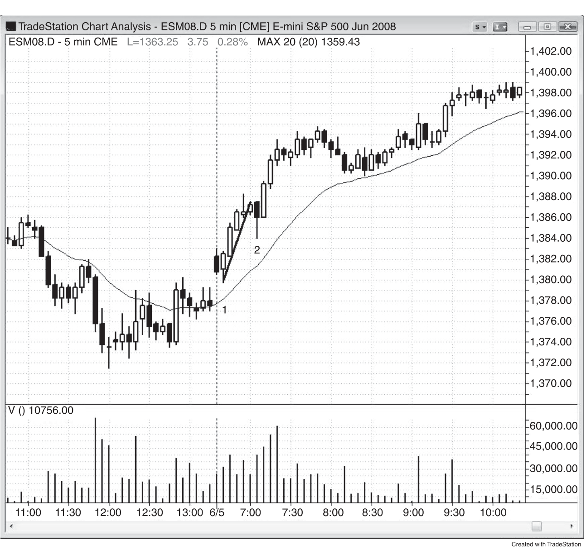
The market formed a bull trend from the open in Figure 23.1, and the bar 2 break below the trend line was the first pullback. Traders bought on a stop at one tick above its high, even though it was a weak signal bar (bear close, but at least the close was above the midpoint). Aggressive bulls bought on a limit order at the low of the bar before bar 2, anticipating a failed micro channel breakout and higher prices.
It was reasonable but aggressive to short below the first bar of the day because it was a bear trend bar and there was a gap up, and there was room to the moving average and to yesterday’s close. However, yesterday ended with several strong bull trend bars in the final hour, which is a sign of buying pressure. When there is any doubt, especially on the open, it is better to wait for more information or until one side is trapped. The problem with this initial short is that most traders would not have been able to change their mind-set quickly enough to reverse to long above bar 2. They would have been trapped out; most would have waited to buy above the first pullback, and that later entry would have cost them several points of profit.
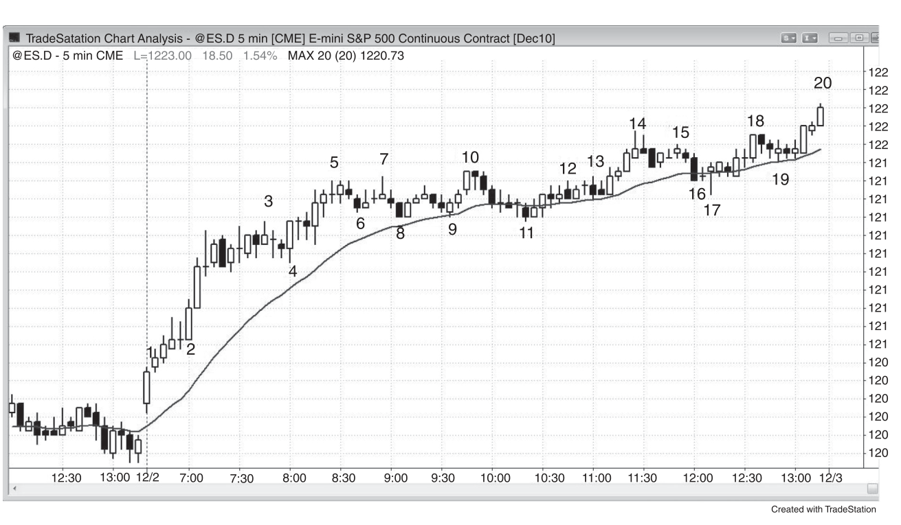
A trend from the open day is the strongest type of trend day, and a small pullback day is the strongest type of trend from the open day. Trend from the open days occur about once or twice a week, but small pullback days (seen in Figure 23.2) form only once or twice a month. The average daily range in the Eminis had been about 12 points, and by bar 9 the biggest pullback of the day was only nine ticks. The pullback to bar 11 was only 11 ticks. Smart bulls saw this and therefore placed limit orders to buy maybe from six to 10 ticks down from the most recent high. Their initial stops might have been a couple of points. The market tried to create a larger pullback in the move down to bar 17 but could not drive the market down more than 14 ticks. Bulls saw the large bull trend bar before bar 14 as a possible buy climax, and many exited longs. A sudden surge that was likely to be followed by a pullback is a great opportunity to exit at a very good price that was likely to be brief. Other experienced traders shorted the close of the bar and the close of bar 14 and the next bar, since they had tails on the top, which is a sign of selling pressure. These traders expected a two-legged pullback lasting about 10 bars, and almost certainly a test of the moving average, since the market already tested it at bars 9 and 11. On a small pullback trend day, the market usually has a pullback sometime after 11:00 a.m. PST that is about twice the size of the largest pullback of the day.
There was a 20 gap bar long above bar 9 and the bulls bought the moving average tests at bars 8, 9, 11, 13, 17, and 19. There was not a strong sell signal all day, but aggressive bears could have scalped below the inside bar after bar 14. However, most traders instead would have looked to buy pullbacks instead of shorting new highs since this was such a strong bull trend day.
The market had a strong bull spike up from bar 2 and then the rest of the day was a bull channel. Traders became always-in long on bar 2 or on the strong bull trend bar that followed. Most of the channel was a slightly upward-sloping tight trading range with very little price gain, which is often the case on small pullback days. The high of the day was only four points above the bar 5 high at 8:25 a.m.
As is the case with all strong trends, most of the buy signal bars looked bad. This kept bulls from buying, trapping them out, and they ended up having to chase the market higher. It also kept shorts from exiting, and they were trapped into larger and larger losses. There were also many bear trend bars and bear spikes. This selling pressure made beginning traders look for reversal setups and not take buy signals. Experienced, unemotional traders understand that bad buy signal bars and bear trend bars in a trend day with very small pullbacks are signs of a very strong bull trend. They made sure to buy despite the weak setups. They bought on bar 2 as it broke above the doji high 1 signal bar. They bought again as bar 4 reversed up into an outside bar after forming a double bottom with the bull reversal bar from seven bars earlier. They bought the high 2 above bar 8 and above the bull bar that followed it, which created a two-bar reversal.
Bar 9 was a triangle (bars 6 and 8 were the first two pushes down) in a bull trend day and therefore a bull flag buy setup. They bought above the bar 11 bear trend bar that closed below the moving average, because it was a failed onetick breakout below the bars 8 and 9 double bottom. It was also a pullback from the breakout to bar 10 of the triangle. At this point, the market was in a trading range, so most bulls would not have exited on a breakout below. They know that most breakout attempts fail and that most trading ranges in bull trends are bull flags and will ultimately break out of the top of the range. Most bulls either would have exited their longs below the bear bars after bar 10 or would have used the bottom of the most recent bull spike for their protective stops. For example, they might have had their stops at one tick below bar 4 or below the outside up bar that formed three bars later.
Usually, when there is a bear micro channel, like the one from bar 10 to bar 11, it is better to buy a pullback from the breakout, but there is a sense of urgency when the trend is strong, and smart traders are unwilling to wait for perfection because they don’t want to risk missing the move. They also bought above the bear bar after bar 13, even though it had a bear body. It was a high 2 buy setup (the high 1 was the bull bar after bar 12) and a second-entry breakout pullback buy setup from the breakout above the bear micro channel down from bar 10 (the high 1 was the first setup). They bought again as bar 17 became an outside up bar, even though it followed a small doji bar and a big bear trend bar. The moving average was continuing to contain all sell-offs. They bought above the bar 17 bull doji, and above the bull bar that followed it. They bought above the bear bar after bar 19 because it was another small high 2 at the moving average. It was a bear bar, and the first leg down was made of the two bear bars after bar 18. Others bought on a stop above bar 19 because it was a bull bar in a pullback to the moving average in a strong bull trend.
The market spent most the day trying to reverse down, running stops on the bulls and trapping beginners into losing shorts, but relentlessly forming higher highs and lows, opening near the low of the day and closing near the high of the day. The buy setups all looked like they were low probability, and this trapped inexperienced bulls out. However, experienced traders knew what was going on and bought every sharp sell-off all day. They realized that, as bad as the long setups looked, the trend was so strong that the probability of success was much higher than it appeared.
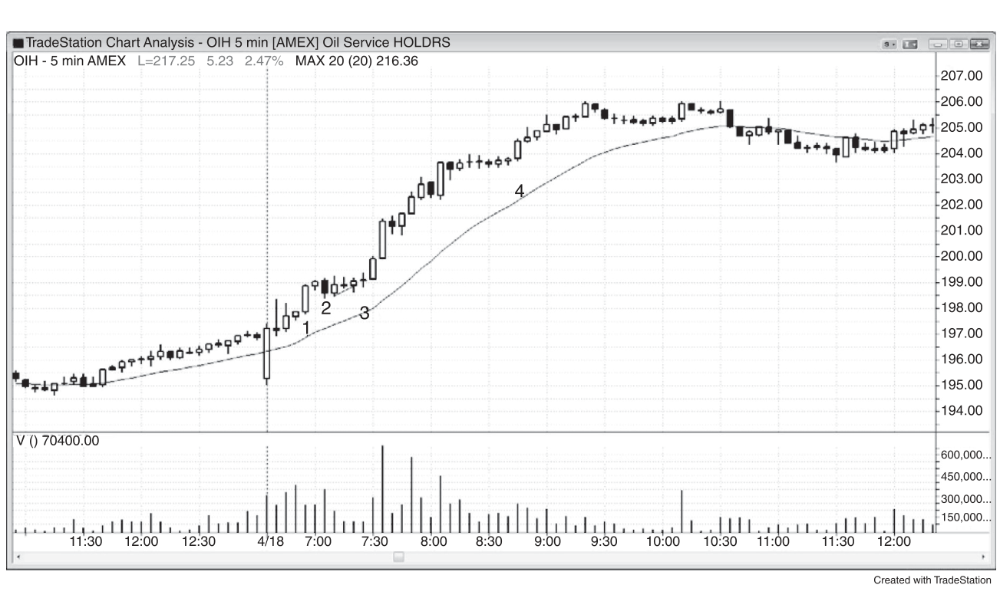
When there is a trend from the open and all of the pullbacks are less than 20 to 30 percent of the recent average daily range, the day is a small pullback day, which is the strongest type of trend day. There is usually a pullback later in the day that is about 150 to 200 percent larger than the size of the earlier pullbacks, and that was the case here in the OIH (see Figure 23.3). Any sideways movement was a pause and a type of pullback and was a buy setup. The ii breakout at bar 1 was a good entry, and the bar 3 breakout of the two-legged sideways correction was another. Finally, there was the tight trading range breakout at bar 4. All of these entries should be considered to be part of the first up leg and not a first pullback, which comes after the first leg and sets up the second leg. Rarely, days just don’t seem to pull back and traders are forced to enter on breakouts from even brief sideways pauses. The reality is that on strong days like this you can just buy at the market at any point, trusting that even if there is a reversal, the odds are overwhelming that the market will make another high before the pullback retraces very far. Many traders buy the closes of bull and bear trend bars and at or below the low of the prior bar.
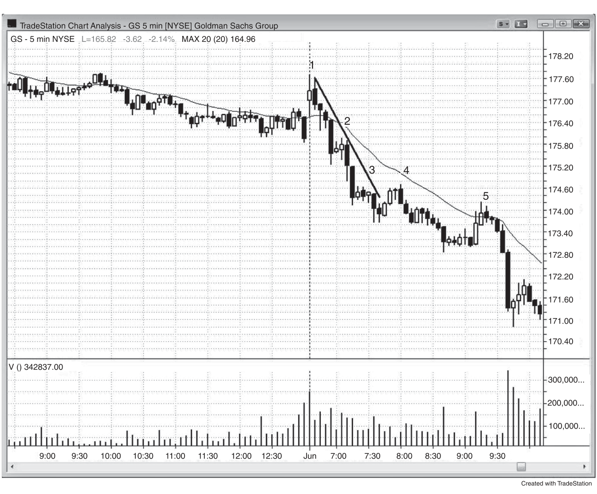
In a strong trend, determining which pullback is the first significant pullback is often difficult to do. When that is the case, the odds are very high that your trade will be profitable because an unclear pullback means the countertrend traders are very weak. In Figure 23.4, bars 2 and 3 were tiny pullbacks that did not break a meaningful trend line. The first pullback to break a trend line was bar 4. The first trend line break has a very good chance of being followed by another trend leg and is therefore a great entry (like shorting below the bar 4 bear trend bar). Today was a small pullback type of trend from the open bear trend day.
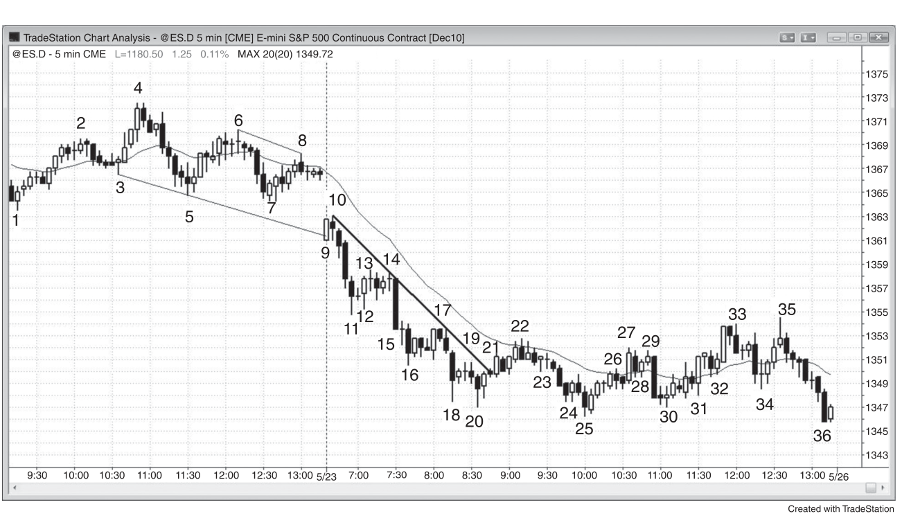
Sometimes the first bar of the day can trap traders into entering in the wrong direction, and the day can then become a strong trend day in the opposite direction. In Figure 23.5, the market gapped below yesterday’s low and broke out of a large trading range formed over the second half of yesterday (a head and shoulders top bear flag). The first bar today, bar 9, was a bull trend bar, which usually would lead to a partial gap closure or even a bull trend. Many went long on a stop at one tick above its high. However, the market trapped those longs two bars later when it traded below its low. That bull trend bar trapped bulls in and bears out because traders assumed that its strength was a sign that the market was going to try to close the gap and maybe become a bull trend day. It tried to reverse up from the breakout below yesterday’s trading range and from breaking below the trend channel line. You have to be very flexible on the open and assume that the exact opposite of what you believed a minute ago can happen. You want to be able to see what is happening as early as it is happening so that you can enter as early as possible. The market tried to reverse back up above the trend channel line and failed, and this two-bar breakout pullback could lead to some kind of measured move down. If the day becomes a trend day and you miss the earliest entry, there will be chances to enter all day long.
Bar 10 provided a great opportunity to go short at one tick below the low of the bar 9 bull trend bar because this is where most of those trapped longs would get out, driving the market down. Also, any potential buyers would be waiting for more price action, so there were only sellers in the market, making for a high-probability short. Shorts added on at the bear flags along that way that trapped other early longs into believing that the market was bottoming.
Traders became confident that the market was always-in short by the close of bar 11, which confirmed the downside breakout. Many traders were confident of the always-in trade at the close of the bear breakout bar, just before bar 11.
Despite all of the reversal attempts, the market closed on its low. This is a good example of why it is important to try to swing at least part of your trade when you see a strong trend from the open day. If you do take long trades, you have to force yourself to get back on the short side as you exit your longs because you don’t want to miss out on a huge short just to catch a small long.
Deeper Discussion of This Chart
Bar 12 was a strong bull reversal bar in Figure 23.5, but it largely overlapped the prior two bars and therefore it was part of a small trading range and was not functioning as a reversal bar, despite its appearance. Reversal bars always have to be judged in context, and when they overlap the prior bars by too much they are part of a small trading range, and buying above a trading range in a bear trend is a losing strategy. Smart traders are doing just the opposite. They have limit orders to go short at and above the high of the prior bar, even if the bar has a strong bull body.
Bar 13 was a low 2 short setup but the signal bar was a small doji. A doji is a weak signal bar, and weak setups often mean that the market is not yet ready to break out.
However, in a strong bear trend like this, you can short for any reason and just use a wider stop. You could also go short below the bar 12 or bar 11 lows. In a strong bear trend, you can sell below the lows of bars and below swing lows and expect to make a profit.
Bar 14 was an attempt to reverse up after the failed low 2 and was therefore the third push up. The doji after bar 11 was the first push and bar 12 was the second. A third push up in a bear flag creates a wedge bear flag, so it is reasonable to short below its low.
This bar 14 failed low 2 buy setup illustrates one of the worst things that a trader can do, which is buying above a weak bar in a bear flag in search of a scalper’s profit.
You will not only lose on the scalp, but your mind-set will be that of a buyer. You will not be mentally prepared to short the breakout of the bear flag, which has a much higher chance of success and is more likely to result in a swing trade and not just a scalp.
The bar 15 breakout bar was a strong bear trend bar and a statement that the bears controlled the market. When there is a strong bear breakout like this, there will usually be at least two more legs down in the form of a bear channel, and those two additional legs often create a wedge bear flag. This usually leads to a two-legged correction, as it did here in the rally to the moving average at bar 22.
Bar 22 was a bear reversal bar at the moving average and a low 2 short. It was also a 20 gap bar short and a wedge bear flag where the push up to bar 19 was the first leg up in the wedge.
The market sold offto a new bear low at the two-bar reversal at bar 25. It was also a reversal up from a one-bar final flag and a high 2 buy signal at the bottom of a developing trading range.
Bar 27 was a strong bull trend bar and an attempt to form an upside breakout, but it formed a double top bear flag with bar 22.
The bar 28 ii pattern became a final flag as the market reversed down from the small bar 29 lower high and moving average gap bar short setup.
Bar 30 was a two-legged higher low test of the bear low.
The bear rally ended with a wedge bear flag at bar 35, where bars 27 and 33 were the first two pushes up. The higher highs trapped bulls in and bears out, but alert traders were prepared for the bear day to resume, and they noticed how bar 35 missed the breakeven stops on the shorts below bar 11. This means that the strongest bears were reasserting themselves. They took over the market on the strong bar 15 bear spike; they were sitting on the sidelines, waiting for a test, and then they appeared out of nowhere and drove the market down into the close.
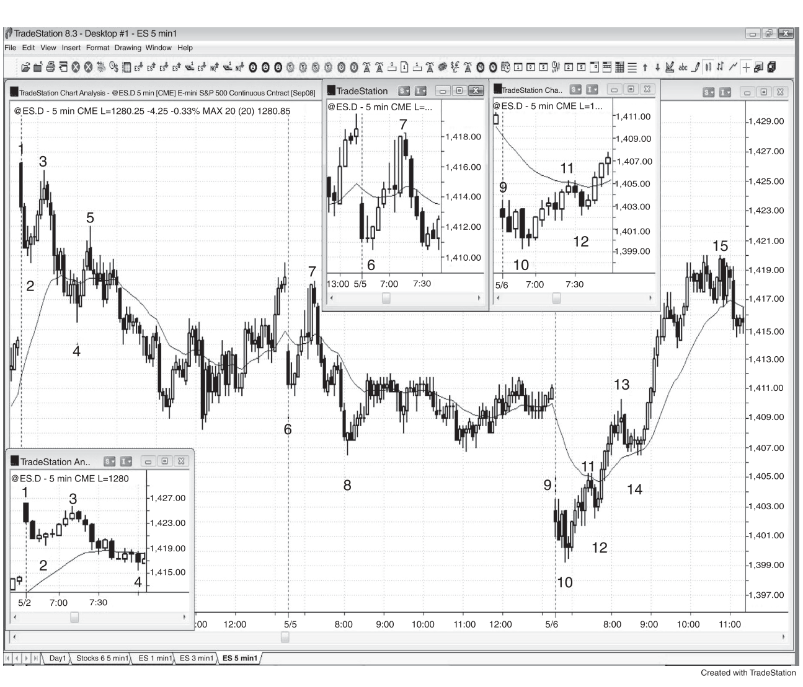
Here, in Figure 23.6, are three consecutive gap openings but with different results, even though the first bar on each day was a bear trend bar. Bars 1 and 9 were also gap openings on the daily chart.
Bar 1 had no tail at the top and a small tail on the bottom and was a large bear trend bar, which is a good short setup on a day with a large gap up open. It was followed by a strong bear entry bar. If the first bar of the day is a strong trend bar (see thumbnail), there will usually be follow-through, and when the first two bars are strong, an attempted reversal up usually becomes a lower high, as it did here. A large gap up with strong selling usually becomes a trend from the open bear trend day. There was a sharp rally to bar 3 that tested the open, but this failed opening reversal resulted in a lower high or a double top, and then a lengthy down move.
Bar 2 was an attempt to form a breakout pullback from the breakout above yesterday’s high, but the bears were too strong and the rally failed at bar 3.
Two bars after bar 6 was a strong bull reversal bar, and an opening reversal after a bear trend bar on the open broke below the bull channel of the final two hours of the day before. A bull channel is a bear flag, and the bull reversal bar that formed two bars after bar 6 was an attempt to have the breakout of the bear flag fail. Shorting below the first bar of the day was risky here, even though it was a bear trend bar, because the bar was at the level of a trading range at the end of yesterday and shorting at the bottom of a trading range is usually a losing strategy, especially in a market where there is no clear direction (a trading range).
The sharp rally up to bar 7 tested the close of the prior day and formed a lower high or a double top. The bear signal bar made this a good short. Pullbacks happen when bulls take profits. Why do traders ever take profits when a trend is strong? Because no matter how strong a trend is, it can have a deep pullback that would allow traders to enter again at a much better price, and sometimes the trend can reverse. If they did not take at least partial profits, they would then watch their big profit disappear and even turn into a loss.
Bar 9 gapped below the low of the prior day and formed a bear trend bar, but it had big tails, indicating that traders bought into the close of the bar. The second bar was a bear trend bar with a close on its low, indicating that the bears were strong, but it was followed by a strong bull trend bar, forming a reversal. Although the long did not trigger, this was again evidence that the bears lacked urgency. When the gap is this large, everyone knows that the behavior is extreme and if there is no immediate follow-through, the market will reverse quickly to undo this extreme situation.
Bar 10 was a large bear trend bar and therefore a sell climax. The next bar was an inside bar and this created a breakout mode situation. If there was no immediate follow-through selling, the bears would aggressively begin to buy back their shorts and look to sell higher, and bulls would buy, hoping for a low of the day. The market had been in a large bear channel for a couple of days and it was at the bottom of the channel, so there was a good chance that it would reverse up and a smaller chance that it would break through the bottom of the bear channel and form an even steeper bear trend. The channel lines are not shown, but the bear trend line is above the bar 1 and bar 7 highs and the bear trend channel line is a best fit line that could be drawn along the bar 4 and bar 8 lows. Bulls also bought above bull trend bars, like above the bull trend bar before bar 10 and the bull trend bar that formed two bars after bar 10. They would also buy above the small inside bar after bar 12, since that would be a failed low 2. Since this is a possible reversal up from the low of the day and the bottom of a two-day bull flag (a bear channel is a bull flag), it is a good buy setup.
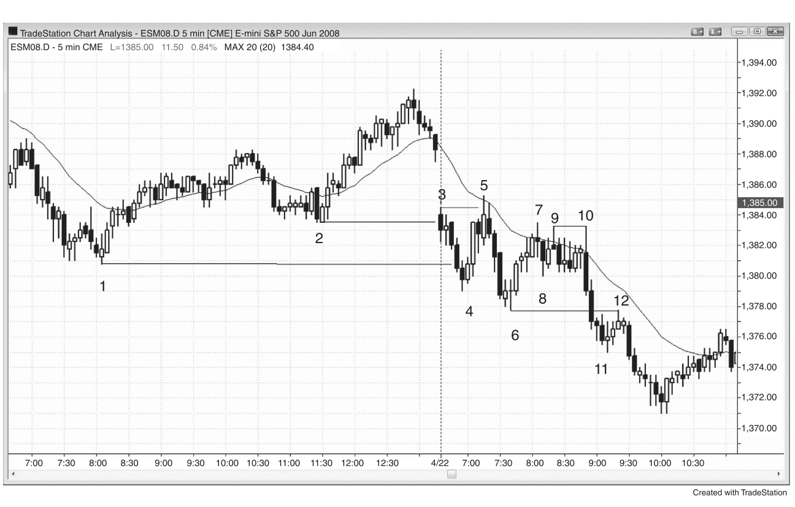
The market in Figure 23.7 opened with a moderate gap down, which can be near the high or low of the day. Bar 3 was the first bar and it was a bear trend bar and a possible start of a bear trend from the open. The market failed to reverse the bar 2 swing low from yesterday so it would likely test the next level of support from yesterday, which was its low at bar 1. A trader would place an order to go short at one tick below the low of bar 3. Once the market fell below yesterday’s low, it was likely to try to reverse up again, at least briefly, so a trader would place an order to go long on a stop at one tick above the first good signal bar. Although some traders would buy above bar 4, it was a bear trend bar with a close below its middle. It would be safer to wait until the next bar closed to see if a better setup would develop. The bar had a good-sized bull body and it formed a two-bar reversal with bar 4. The entry is above its high. In general, it is always better to buy above bull trend bars, especially when trading countertrend.
If the buy order wasn’t filled and the next bar had a lower low, traders would try to buy above its high since they would be looking for a failed breakout below yesterday’s low to form an opening reversal. However, if the market fell much further without a good buy setup, traders should only trade shorts until after a rally breaks a trend line.
The market made a small two-legged rally to the moving average and above the high of the day, where it set up a double top bear flag at the moving average. The large bull trend bar that broke above the bar 4 reversal was followed by a bear bar, which is bad follow-through and a signal that the market might be forming a trading range instead of a bull trend. The market continued in a trading range until midday. Up to that point, the range was about half the size of an average daily range. This alerted traders to the possibility of a breakout, an approximate doubling of the range, and the formation of a trending trading range day. The breakout began with the strong spike down from bar 10. Although not shown, the day ended with a strong reversal, as is often the case on trending trading range days, and it closed back in the tight trading range that began at bar 7. Tight trading ranges are magnets and tend to pull breakouts back into them.
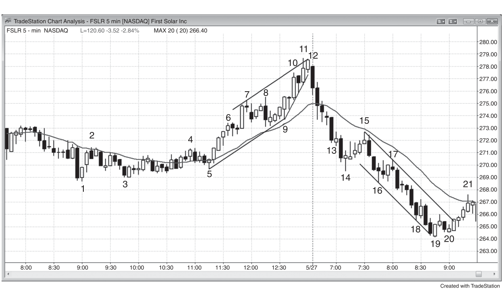
Sometimes, a trend from the open day opens on the highest tick of the day. In Figure 23.8, bar 12 was the first bar of the day and it opened on its high tick and broke out below the wedge from yesterday’s close. Most traders would not be nimble enough to sell below the inside bar at the end of yesterday, but it would be reasonable to sell a small position on the close of the first bar. If you missed the first entry, you could look at a 1 minute chart for a small pullback (there were many) to short or simply wait for a 5 minute setup. When there is a trend from the open, selling the first pullback is a high-probability trade, even though it is hard to take since you are selling near the low of a big move down in this case. Bar 15 was the signal bar for that first pullback short, and it was also a pullback that reversed down just below the moving average. The shorts were so eager to get in that they were selling below the moving average without waiting for the market to actually touch the moving average. Some traders would be afraid to short after five bars with bull bodies, but the bodies were small and this was the first pullback after a strong bear spike and therefore a reliable low 1 short setup. It was also a moving average test and a double top bear flag with the bar 13 high.
The day became a spike and channel bear with the bear channel beginning at bar 15 and also at bar 17 and ending at bar 19. The market rallied into the close and did not close on the low.
Deeper Discussion of This Chart
There was other spike and channel behavior in Figure 23.8, as is the case on most days.
Bar 12 and the bar after it formed a spike, as did bar 13 and the bar before bar 14, and the entire move down to bar 14 was a spike. The two bars after bar 15 formed another spike, which was followed by the channel that began with the bar 17 low 2 and ended at bar 19.
Bar 16 was also a breakout pullback from the breakout below bar 14 and bar 1. It was also close enough to a breakout below yesterday’s low to behave like a pullback from an actual breakout (close is close enough). The eagerness of the bears to short prevented that first pullback from reaching the moving average. They were afraid that it might not get there and therefore shorted so heavily on the approach that it never reached the moving average target. When the pullback turns back down just below the moving average, the bears are very aggressive and have a sense of urgency. They are very eager to short, even at relatively low prices, so lower prices are likely to follow.
Bar 19 was a spike up, and a channel up began with the bar 20 higher low. The bar after bar 20 was also a spike that ended with a three-bar channel at bar 21, the final bar on the chart.
Yesterday also had spike and channel activity, such as the spike up to bar 2 and the channel that began with either bar 3 or bar 5. The move from bar 5 to bar 6 was another spike, as was the bar before bar 7. The channel for both began with the bar 8 low. The entire move up from bar 5 to bar 7 was probably a spike on a higher time frame chart.
Yesterday’s bull channel into the close poked above the trend channel line, which was drawn as a parallel of the bull trend line from bar 5 to bar 9. Once the market reversed back into the channel on the bar 12 first bar of the day, it was likely to poke through the bottom of the channel at a minimum. The next target is a measured move down using the vertical height of the channel, and the target after that is the bottom of the channel from yesterday, which was the bar 8 low. Since the move up to bar 11 had a wedge shape and the market tested below the start of the wedge, the next downside target is a measured move down. Use the height of the wedge (the bar 11 high minus the bar 8 low) and subtract that from the bar 8 bottom of the wedge. This target was exceeded during the sell-offbelow bar 17.
Bar 19 was a reversal up from a second break below a bear trend channel line (drawn parallel to the bar 15 to bar 17 trend line), so two legs up were likely. Bar 18 tried to reverse up from a tiny poke below the trend channel line, but the market never went above the high of the two-bar reversal so there was no long entry.
It is important to realize that although yesterday ended with a wedge top, there was still a strong bull trend into the close. This made beginning traders look for an additional rally on today’s open, and deny the unfolding reversal. Always be ready for the opposite of what might appear likely, because it will happen in about 40 percent of the time.
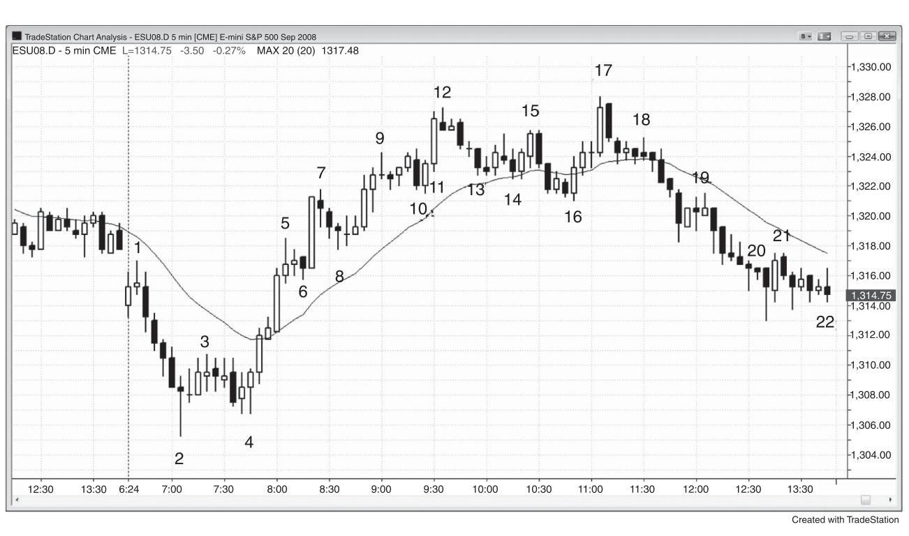
Not all days that begin as trend from the open days result in strong trend days in the direction of the initial trend. In Figure 23.9, the day started as a bear trend from the open. It gapped below yesterday’s low but then pulled back and almost closed the gap, and bar 1 became a breakout pullback short setup. The market sold off for five bars and set up a first pullback short below bar 3, but it then entered a tight trading range instead of immediately triggering a short. Although a scalp was possible, the market reversed up in a higher low at bar 4.
Deeper Discussion of This Chart
In Figure 23.9, bar 1 was a breakout pullback short following the breakout below yesterday’s closing trading range. The initial sell-offdown to bar 2 was around 12 points, which was about the average daily range recently. Once the market reversed back above the high of the open and broke to the upside, a measured move up was likely. Sometimes the market will make a measured move up equal to the open of the day to the low of the day and then close back down near the open, creating a doji day on the daily chart.
Other times the measured move up is equal to about the height of the entire initial leg down. The bar 17 high of the day was three ticks below that measured move target. That reversal up above the opening range created a large bottom tail on the daily chart. When the market turns down from about a measured move up from a large opening range, it often comes back down and the day closes somewhere in the middle of the range, as it did here.
The spike up from bar 4 to bar 5 was also a good basis for a measured move, but it did not happen here. Instead, the market went one tick higher than a leg 1 = leg 2 move where leg 1 was from bar 4 to bar 5 and leg 2 was from the bar 6 low to the bar
17 high of the day. The sell-offinto the close was also a test of the bar 6 bottom of the bull channel that followed the spike up.
The two-bar spike down from bar 15 was followed by a pullback to a higher high at bar 17, which was the start of the bear channel. Sometimes the pullback after the spike down can be a higher high, but when it is, there is usually another spike down after the pullback. Here, the large bear inside bar after bar 17 was a spike down, and the move down from bar 18 formed another spike down, with the large bear trend bars being the most influential. The three-bar move down to bar 13 was also a bear spike and therefore probably had some influence on the sell-offthat eventually followed. When the market starts to form many bear trend bars, it is accumulating selling pressure, and it often is able to overwhelm the bulls eventually, as it did here.
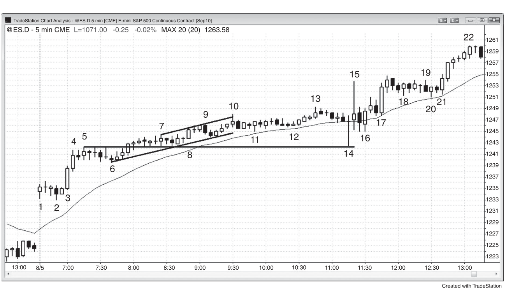
Figure 23.10 shows a trend from the open bull trend day, but why are the best trends so difficult to trade? Because most of the with-trend entries look weak and there are many small pullbacks that trap traders out of the market. None of these pullbacks would have hit a two-point money stop, which is usually the best stop to use in a strong trend. With so many small, sideways bars, price-action stops below the lows of prior bars get hit too often and it makes more sense to rely on the original twopoint stop. When the trend is strong, you need to do whatever you can do to stay long. Strong, relentless trends are often made of small bars with tails and lots of overlap but very small pullbacks that are mostly sideways pauses.
With a large gap up on the open, the odds favored a trend day up or down, and a larger gap like this makes a bull trend more likely. Because there was no significant selling in the first several bars, there was a possibility of a bull trend from the open, so traders had to be looking long. The market moved up quietly all day because institutions had buy orders to fill, and they filled them in pieces during the day because they were afraid that a pullback might not come and they needed to buy. Their constant buying prevented a significant pullback from forming. They don’t buy all at once because they might create an exhaustive buy climax and a significant reversal to well below their purchase price. Also, as the market is going up, they are receiving additional buy orders throughout the day as investors become more confident.
Deeper Discussion of This Chart
In a strong trend such as that shown in Figure 23.10, you can buy for any reason and at any time. Buying above pullback bars is reliable, but you can also place limit orders to buy at or below the low of the prior bar. Shorting below bars is a loser’s strategy. If you were to look for shorts, you should short only above the highs of bars or at the close of strong bull trend bars. When a day is this strong, most traders should not short, because shorting would probably be a distraction and result in missing buy setups, which are swing trades in a strong trend and therefore more profitable than scalps.
Bar 3 was the first bar of a two-bar spike up, and the market corrected sideways in a tight trading range before the channel up began. The very strongest trends tend to create reversal patterns all day long, but they somehow don’t look just right. However, they constantly trap early bears into shorting, thinking that the small bars mean small risk, but after four or five small losses, they are so far behind that they will never catch up. You cannot take a trade simply because the risk is small. You need to consider the probability of success and the size of the profit target as well.
Bears saw bars 5, 7, and 9 as a three-push pattern and therefore a wedge variant, and they then saw bars 7, 9, and 10 as another wedge. When the correction from a wedge is sideways instead of down, you should conclude that the trend is very strong; stop looking for reversals and only trade with trend.
Bar 14 coincided with a Federal Open Market Committee (FOMC) report, and the market sold offsharply but immediately reversed up after missing the bar 5 high by one tick.
Going into the close, there were several two-bar bull spikes (bars 16, 17, and 21 were the first of the two bars in each spike).
A strong trend like this sets up reversals all day long, but the setups are never quite right and they almost always fail. The wedge that ended at bar 9 was in a tight bull channel composed almost entirely of bull trend bars. The market had not hit the moving average in over two hours. The odds were high that there would be buyers there, so there was little to be gained by shorting. Bar 10 broke above the trend channel line but it had a bull body. Again, the channel was very tight with no prior bear strength. You could only short a second signal and only if there was some prior bear strength, like a five- to
10-bar pullback to the moving average. In the absence of that, any short is a bet that the market would do something that it had not done all day. The biggest pullback all day was only nine ticks. If you short below a bar, your entry is about five ticks down and you need the market to go another five ticks down for you to make a one-point scalp. Since the market has tried to pull back repeatedly and could not fall more than nine ticks, betting that your short would now succeed is a very low-probability trade. You can scalp for one point and risk six or seven ticks only if the probability of success is 60 percent or higher, so you cannot short this market. You could argue that the move to bar 12 broke the bull trend line and therefore it was acceptable to short the bar 13 higher high, but the market still had not yet pulled back to the moving average, which is just six ticks below, and there would certainly be buyers there. Also, bar 13 was the fifth consecutive bull body and that represents too much strength to be shorting.
On most strong trend days, there is usually a sharp, brief reversal between
11:00 a.m. and noon PST that shakes out weak longs and traps overly eager bears who are hoping to recoup their earlier losses. It is always attributed to some news event, but that is irrelevant. What is important is that it usually sets up a buying opportunity for those who do not get frightened by the spike down.
Today, there was an FOMC report at 11:15 a.m. When the report came out, bar 14 was briefly a bear trend bar with a large bear body. If you shorted before the bar closed, believing that the market was going to sell offhard on the report, you were ignoring a very important rule: you should wait for the bar to close, because what appears as a large bear trend bar at four minutes into the bar can become a doji bar or even a bull reversal bar by the time the bar closes.
Bar 16 was a higher low after the rally from the bottom of bar 14 to the top of bar 15, and it was followed by the bar 17 breakout pullback long entry. All spikes should be thought of as spikes, climaxes, and breakouts, so the two-bar spike that began with bar 16 was a breakout and bar 17 was the entry from the pullback.
Bar 19 was a double top bear flag, but there was no prior strong spike down so the market was more likely just going sideways after the bar 17 spike up.
Bar 20 was a bull reversal bar and a high 2 long, and bar 21, the bar after the entry bar, traded below the entry bar and trapped longs out. However, since the move up from bar 20 had gone only one tick, the protective stop was below the bar 20 signal bar and you should not tighten it too soon. Strong trend days constantly trick traders into exiting longs early and into taking shorts. The bears have to buy back their shorts, which adds to the buying pressure and removes the bears from additionally shorting for at least a bar or two. They just lost and will need to recover before they look to short again.
Also, the bulls who were just trapped out will chase the market as it goes up, adding to the buying.
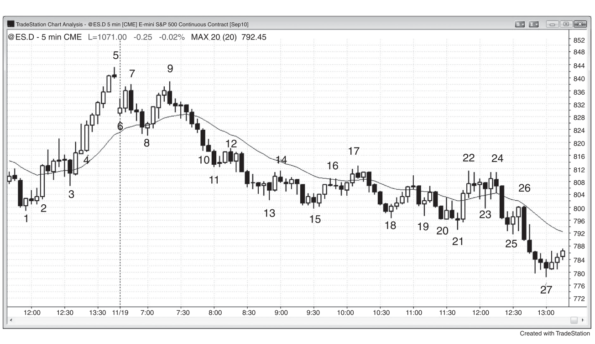
A trend from the open can have a double top or bottom before the strong trend begins. In Figure 23.11, bar 7 tried to set up a bear trend from the open but the high was tested on a 7:00 a.m. report, which commonly happens. Even though the market formed a small trading range up to bar 9, you always have to consider the possibility that the market was just waiting for the report before it unleashed its strength.
The opening range was less than a third of the size of the range of recent days, and this put the market in breakout mode. Once there was a spike down and a spike up after the first bar (a reversal down and then a reversal up), some traders would enter on a breakout, expecting the range to increase severalfold. After the market fell below the bar 7 two-bar reversal, the bar 7 reversal down became a swing high. After the market moved above bar 8, bar 8 became a swing low and a reversal up. These traders placed a buy stop at one tick above the bar 7 spike top and a sell stop at one tick below the bar 8 spike bottom. Once the buy order got filled as bar 9 moved above the high of bar 7, they doubled the size of the sell stop below bar 8. As that second order got filled, as it did in the move below bar 8, they got stopped out of their longs and they reversed into shorts. This is the traditional approach to this setup, but it is generally better to be more aggressive. A better approach would have been for traders to short below the bar 7 two-bar reversal and scalp out part, and then tighten their protective stops. Next, they could reverse to long on the bar 8 high 2 at the moving average. They could scalp out part and tighten their stops. They could reverse to short below the bar 9 outside down bear bar, since there were trapped bull breakout traders and the market was forming a double top bear flag with bar 7. They could scalp out part, tighten their stops, and swing the balance until there was a clear buy signal; if there was none, they could hold short into the close. If they did buy at maybe the bar 15, 18, or 21 lows, they had to reverse to short as they took profits. If they were unable to do that, they should either continue to hold short or exit on those minor buy signals and look to short rallies.
Even though the day began with a small trading range and some traders might call this a trending trading range day or a bear trend resumption day, when the pullbacks are this small, you are dealing with a very strong bear trend. When that is the case, it is better to make sure that you are short for most or all of the day. Thinking of this as a trending trading range day will make you take longs and often miss shorts. The pullback that began at bar 15 was about twice the size of the earlier pullbacks since the trend began at bar 9. The day was not a classic small pullback trend day because those days usually don’t have a larger pullback until later in the day, like after 11:00 a.m. PST, but today was still a strong bear trend day.
Deeper Discussion of This Chart
Bars 11, 13, and 15 formed a wedge in Figure 23.11, but since the market had not touched the moving average in about 20 bars and the bear channel was tight, this would likely lead to a test of the moving average where bears would short aggressively. The bulls were able to generate two legs up to bar 17, which was a moving average gap bar.
The first moving average gap bar in a bear trend often leads to the final leg down before there is a larger correction up.
Since the leg up to the moving average gap bar almost always breaks a significant bear trend line, the higher low or lower low test of the bear low usually leads to a protracted correction up or even a reversal. The market tried to reverse up at bar 18 and again at the small wedge that ended at bar 21. The market created a strong two-bar bull spike up to bar 22, trapping bulls in and bears out, but experienced traders know that the market often has a strong countertrend move after 11 a.m. PST on a trend day and they would be ready to short the failure, like the small double top at bar 24. There was a bear inside bar for the signal bar and the bar 22 and 24 double top formed a larger double top bear flag with bar 17. The spike down to bar 25 was followed by a couple of strong bull trend bars, which set up the bar 26 breakout pullback short for the sell-offinto the close. That reversal attempt at bar 25 was the signal bar for an expanding triangle bottom, where bars 18, 21, and 25 were the three lows. Instead, the bottom failed and bar 26 became the breakout pullback short entry bar. A failed wedge often leads to a measured move down, and the sell-offinto the close came close to the target.
This turned the day into a trend resumption bear, where there was an initial bear trend down to bar 13, then a trading range that lasted a couple of hours to bar 24, and then another bear leg into the close.
Reversal Day
Primary characteristics of reversal days:
- The day trends in one direction and then it trends in the opposite direction into
- the close.
- Most start as trending trading range days.
- If the reversal starts in the last couple of hours and is strong, it will usually have follow-through on the next day and often the next several days.
Some of the strongest trends begin in the middle or end of the day. Sometimes they originate as trading range breakouts or climactic trend reversals, usually attributed to some news item, but this is unimportant. In either case, the market can enter a runaway trend mode where it trends relentlessly with only minor pullbacks. There are large trend bars with little overlap and mostly small tails. This is a breakout and a clear always-in flip. You must enter quickly, even if the new trend looks climactic and overdone (and it is, but it will likely continue to get much more so!), and swing most of your position. You should trade these breakout spikes aggressively and make sure that you have at least a small position because the move can go very far. Trading strong spikes is described in detail in the section on breakouts in book 2, and reversals are discussed in detail in book 3.
At other times, the market is trending and then begins a pullback, but the pullback just grows endlessly and becomes a trend channel in the opposite direction. There is almost always at least one countertrend spike before the channel begins, so whenever you see a pullback that has a strong countertrend spike, be aware that the trend might be reversing. For example, if the market has a strong sell-off for the first hour or two and you think there might be a two-legged rally to the moving average, but that pullback begins with a fairly strong bull trend bar, make sure to consider the possibility that the bar could be a bull spike that could be followed by a relentless bull channel instead of a small bear flag. By the end of the day, the pullback can grow larger than the bear trend that preceded it, and the day could become a bull reversal bar on the daily chart. If you recognize this behavior early, you should restrict your trading to buying only, because you will lose money on shorts as you desperately hope that the bear trend from the first hour resumes. Many of these days can be classified as other types of trend days, and they are commonly trending trading range days. In fact, most reversal days begin as trending trading range days. The opposite is true for bear trends on the open that reverse into relentless bear channels.
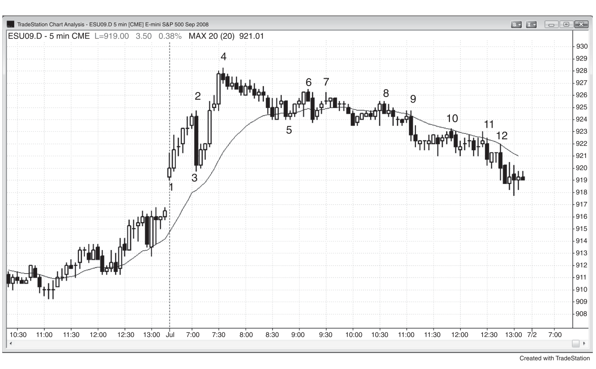
A strong trend can start at any time during the day, even if the day initially had a strong trend in the opposite direction. As shown in Figure 24.1, there was a sharp two-legged move up in the first hour, followed by a tight channel pullback to test the moving average. The market then went sideways for over two hours and finally broke down at bar 9 into a lower range. The last profitable long entry was at 8:50 a.m. PST at bar 5. If you continued to take long scalps, you would eventually realize that you were losing on every trade, which is a sure sign that the market is trending in the wrong direction and either you didn’t see it or you didn’t believe it.
Pullbacks happen when bulls take profits. Why do traders ever take profits when a trend is strong? Because no matter how strong a trend is, it can have a deep pullback that would allow traders to enter again at a much better price, and sometimes the trend can reverse. If they did not take at least partial profits, they would then watch their big profit disappear and even turn into a loss.
Deeper Discussion of This Chart
The market in Figure 24.1 broke out above the trading range of the final hour of yesterday. The large tail on top of the first bar indicates that sellers were reasonably strong and therefore buying above it was risky. The market rallied for six bars and reversed down hard during bar 2, presumably on a 7:00 a.m. report. After the bull momentum leading up to the report and no sign of a top or a buy climax, it was not good to short below the top bar of this rally. This was the first pullback in a trend from the open bull trend and is a buy setup. However, the strength of the bar 2 bear spike was unusual if the day was to become a bull trend day.
The bar 3 low (the bottom of bar 2) formed a possible double bottom with the bar 1 low. It is common for a gap up day to have a pullback that tests the low of the open and then to become a bull trend day. Since the opening range was greater than about 30 percent of the average range of recent days, the opening range was not a good breakout mode setup. The likelihood of a strong, relentless trend after a bull breakout was less. If the market was to become a bull trend day, it would more likely be a weaker version, perhaps like a trending trading range day. The bull ii setup after bar 3 was a good signal for a long, but since a strong bull trend was unlikely, bulls should take at least half offafter about two to four points’ profit. It is also possible that the bar 3 strong bear spike could be followed by a bear channel after a pullback. Here, the pullback was to a higher high at bar 4, which followed buy climax bars on the bar before and two bars before that. Consecutive buy climaxes usually lead to at least a two-legged correction lasting about 10 bars. Since this was not a clear bull trend day and it had strong selling at bar 3, this bear reversal bar was an acceptable low 2 short setup.
The pullback to bar 5 broke the bull trend line, and the bar 6 lower high set the stage for a bear trend day into the close. Bar 6 was the first bar of a two-bar bear spike, which alerted traders to the possibility that a channel down might follow. The bar before bar 5 was a bear spike, as was the very large bar 3 bear trend bar. There were other bear spikes as the bear channel progressed, and the market could not close above the moving average after the bar before bar 8.
As with most strong trend channels, you would make more by swinging than by scalping because there are frequent pullbacks that would run stops on even the withtrend scalps (like the shorts from bars 8 and 10), resulting in losses. It is better to trail your stop above the prior swing high.
The bar 9 spike down that broke below the upper trading range was followed by a perfect measured move into the close. Bar 9 was a breakaway gap, the gap being between the bottom of the upper range and the bar 10 breakout pullback. The middle of that gap was the middle of the move down from bar 4 to the low just before the close of the day.
On the daily chart, this would be a doji bar with a small body and a large tail at the top, and if it is in the area on the chart where a bear reversal is likely, it can be a good signal bar for a short trade on the daily chart.
Notice that the market was forming lower highs and lows between bars 5 and 9, hinting that a bear trend might be underway.
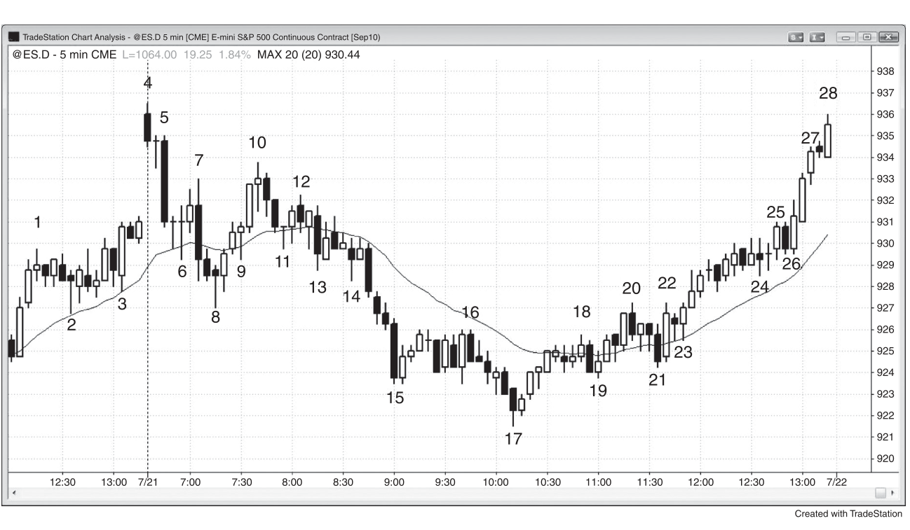
Most reversal days begin as trending trading range days as shown in Figure 24.2, and this day was also a spike and channel bear trend day and a trend from the open bear day. It reversed up after three pushes down (bars 8, 15, and 17) into a bull reversal day that trended up into the close. This is a common occurrence in trending trading range days.
Deeper Discussion of This Chart
A large gap opening often is followed by a trend in either direction, and since the first bar of the day in Figure 24.2 was a strong bear trend bar, the odds of a bear trend were greater. This is a failed breakout setup, and traders would short below its low for a possible trend from the open bear day.
Bars 4 and 5 were large bear trend bars and therefore bear spikes and sell climaxes.
A pair of consecutive climaxes is usually followed by at least a several-bar pause or pullback, as happened here (a pullback to the bar 7 high). Bar 7 was then a third sell climax, and a third consecutive sell climax is usually followed by an even larger correction. The move down to bar 8 was a spike and climax type of bear trend, and it was followed by a rally to bar 10 that tested the bar 7 start of the channel down to bar 8. This formed a double top bear flag, and ultimately an approximate measured move down to the low of the day. The entire move down to bar 8 was in a tight channel and was therefore a larger spike.
After a large wedge bottom, the market usually has at least a two-legged rally that tests the top of the wedge (here, the bar 10 high), and the number of bars in the correction is usually at least a third or so of the number of bars in the wedge. This large wedge was also the bear channel that followed the bear spike from bar 4 to bar 8, and that was also a reason for the test of the bar 10 high (the beginning of a channel usually gets tested). The test may break above that high but more often forms a double top bear flag, as it did here.
When there is a wedge reversal, it is usually safer to buy after a higher low like at bar 19 or above the bar 22 failed low 2. You can see the large bull spike entry bar there, and it was a sign that traders believed that the rally was no longer just a bear flag and the market could have a measured move up and trade into the upper trading range. This was a complex day, and the wedge reversal could also be thought of as the bottom of a lower trading range on a trending trading range day. If enough traders believed that was the case, buying the first entry above the inside bar after bar 17 was reasonable, with the expectation of a test of the bottom of the upper trading range.
Bars 11, 13, and 14 formed a wedge bull flag, but the market broke to the downside instead of reversing up. When that happens, the market usually falls to about a measured move down from the top to the bottom of the wedge. Bar 10 was the top of the wedge, and the move down to bar 15 exceeded the measured move objective. When that happens, there is usually another leg down after a pullback, as was the case here.
Although the move up to bar 18 had two legs, this rally had too few bars to adequately correct that large wedge bottom. Also, it was in a tight channel and was therefore likely just the first of two or more legs up. There was a second leg up to bar 20, but the problem was the same. The move from bar 17 up to bar 20 had too few bars to correct such a large wedge and it was still in a relatively tight channel. This creates uncertainty and increases the odds that the market will need a larger second leg up to convince traders that the wedge was adequately corrected.
The move from bar 21 to bar 25 might be good enough to satisfy traders that an adequate two-legged correction was complete, but the market then broke out to the upside in a three-bar bull spike up to bar 27. Since the bears could not generate much of a downside breakout in the channel from bar 17 to bar 25, no clear two-legged move ever developed. This absence of any clear pullback after a first leg up was a sign of strength by the bulls.
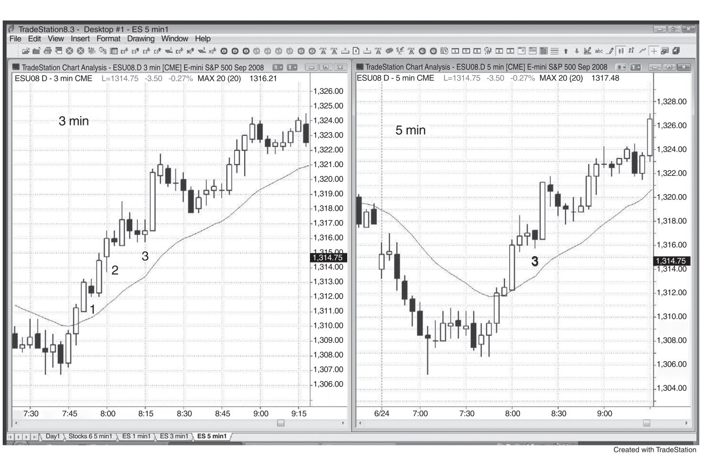
In a runaway bull trend, there are more chances to buy on the 3 minute chart than on the 5 minute chart (see Figure 24.3). Bars 1 and 2 were small countertrend inside bars on the 3 minute chart on the left, setting up high 1 longs, but they were not clear signals on the 5 minute chart. The bar 3 long was present on both charts (on the 5 minute chart, it was a high 1 long in a strong bull spike, even though it had a bear body).
Trend Resumption Day
Primary characteristics of trend resumption days:
- The day has a strong trend in the first hour or so and then enters a trading
- range.
- The trading range lasts for hours and often lulls traders into thinking that the
- day will be quiet into the close.
- The trend resumes in the final hour or two.
- The second leg often is about the same size as the first leg.
- The protracted trading range is often a very tight trading range.
- There is often a breakout from the trading range late in the day that tries to
- reverse the trend, but it is usually a trap. The market then reverses and breaks out in the opposite direction into the close. A trap is more likely when the trading range is unusually tight.
- There is often a breakout pullback entry for traders who did not enter earlier or on the breakout.
Sometimes there will be a strong trend for the first hour or so and then the market goes sideways for several hours. Whenever this happens and especially if the sideways action is in a very tight trading range, the day is likely becoming a trend resumption day. Don’t give up on the boring midday trading range, because there might be a strong trend in the final hour or so. The breakout is usually in the direction of the earlier trend, but sometimes it can be in the opposite direction and turn the day into a reversal day. For example, if the trend from the open was a bear trend, there is usually a late downside breakout from the trading range, and the day often opens near its high and closes near its low. There is frequently a brief one- or two-bar strong reversal breakout that fails between 11 a.m. and noon PST, trapping traders into the wrong (long) direction, and it is usually followed by a breakout in the other direction. This happens quickly, but if you are expecting it, you have a chance of catching a big bear move into the close. Less often, the reversal breakout succeeds and the trend in the final hour, if there is one, can retrace all or part of the opening bear trend.
The midday sideways action does not have to be a tight trading range, and it often has tradable legs in both directions. Sometimes there are three countertrend lazy pushes, creating a wedge flag. At other times the third leg fails to surpass the second, and this forms a head and shoulders flag (most head and shoulders reversal patterns fail and become continuation patterns). Because the pattern often has three pushes instead of two, it traps traders out of their positions from the open, thinking that this countertrend action might in fact be a new, opposite trend. However, don’t let yourself get trapped out, and be ready to enter when you see a good setup that will get you into the market in the same direction as the morning trend. Traders are scaling into positions in both directions and, at some point, many reach their maximum size. Once there is a breakout, the losing side cannot scale in anymore, and their only choices are hope and getting stopped out. For example, if there is a strong morning bear trend and then the market goes sideways, both the bulls and the bears will continue to add to their positions during the trading range over the next several hours, and many will reach the maximum size that they are willing to hold. Once the market begins to break to the downside, the bulls can no longer continue to buy. With a lot of bulls no longer able to buy, the bears are unopposed. As the market falls, it will often accelerate as more and more bulls give up and sell out of their losing longs, adding to the collapse into the close. The difficult part of this type of day is that the quiet midday sideways movement often leads traders to give up on the day when in fact they should view this as an opportunity. Just be ready to enter. The best forms of this pattern occur only a couple of times a month.
Instead of a midday trading range, the market will sometimes form a weakly trending countertrend move for a couple of hours, leaving traders wondering if the day is a reversal day instead of a trend resumption day. What might be developing is a weak trend resumption day, one that feels more like a trading range day but ends up opening on one extreme and closing on the other. Watch for the trend of the open to resume in the final hour, and be prepared to enter. For example, if there was a strong sell-off on the open, and then a lower-momentum rally with three pushes up that retraces some or even all of the initial sell-off, be prepared for a break below that bull channel and a resumption of the bear trend into the close. If there is a breakout of the top of the bull channel that reverses back down, this can be a good swing short entry for the trend into the close. Instead, there might be a setup that looks like a good low-risk short on the breakout below the channel. Otherwise, you can wait for the bear trend to resume and then look to enter on a breakout pullback or a pullback near the moving average. Even though the 5 minute chart might look like a trading range, maybe like an ABC on a higher time frame chart, if the market closes near the low, the day will create a bear trend bar on the daily chart.
Trend resumption patterns often take place over two or more days. Although the 5 minute chart might look like it has huge swings during those days, they may create a simple ABC on the 60 minute chart. For example, if yesterday had a strong bull spike for a couple of hours and then entered a trading range and that trading range continued for a couple of hours today, yesterday’s trend might resume at any point. If you are aware of this, you will be more likely to be willing to swing a larger part of your position for what could be a big move.
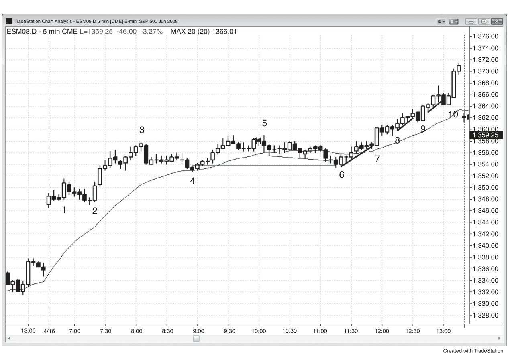
On big gap days, the market often tests the open before the trend begins. In Figure 25.1, the market opened with a large gap up and then had a double bottom test of the low followed by a big rally up to bar 3. From there, it traded in a tight range for more than three hours, lulling traders into thinking that the good trading was done. Bar 6 reversed up from a poke below a bear trend channel line and it also dipped one tick below the bar 4 signal bar high. This trapped some bears into a short and many bulls out of their longs. The signal bar for the rally into the close was the first moving average gap bar of the day.
There were several other chances to get long, like the reversal up from the failed breakouts below micro trend lines at bars 7, 9, and 10.
Deeper Discussion of This Chart
In Figure 25.1, bar 7 was a high 2 entry and a reversal up from a one-tick break of a small bull trend line. Bar 1 was the high 1 entry.
Bar 8 was a high 2 variant (bear-bull-bear bars: the bar after bar 7 had a bear body and therefore the first push down, the next bar had a bull body and therefore traded up, and then the following bar had a bear body again, for a second push down).
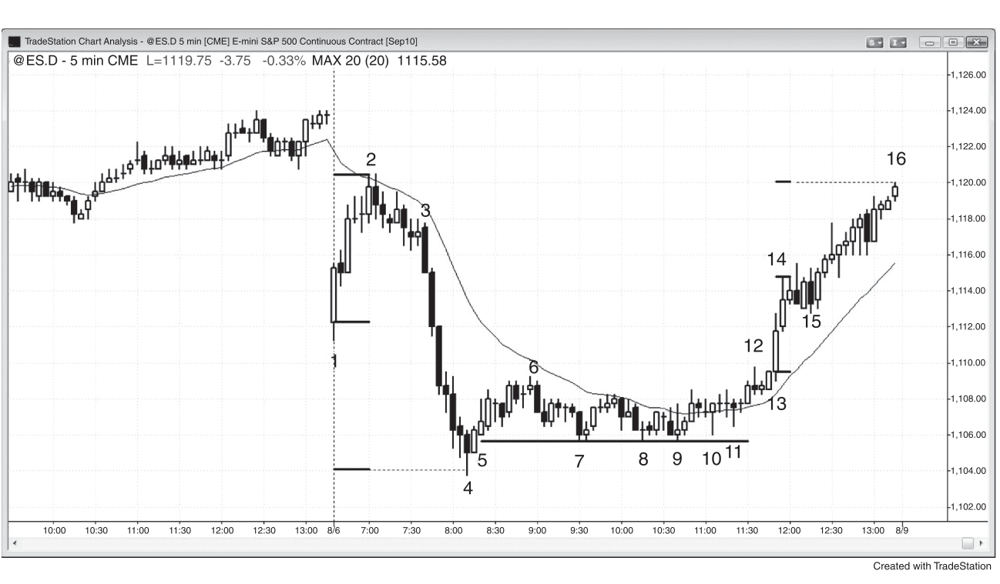
Sometimes a tight trading range that follows a strong trend can lead to a reversal instead of trend resumption. In Figure 25.2, today had a strong sell-off from bar 3 and then entered a tight trading range for a few hours. This often leads to a bear trend resumption into the close with the final sell-off often being as large as the initial one. There is frequently a failed breakout of the top of the range before the final bear leg begins. Bar 12 was a perfect setup for a swing short because it was a bear reversal bar that broke out of the top of the tight trading range late in the day. However, instead of the next bar being an entry bar for a large bear move, it was a small bull inside bar, and therefore a breakout pullback long setup. Bar 12 broke out and this inside bar was a pause, which is a type of pullback.
Deeper Discussion of This Chart
In Figure 25.2, the day opened with a large gap down and a strong bull reversal bar, setting up a failed breakout long and a possible trend from the open bull day.
Bars 13 and 14 were large bull trend bars that formed a two-bar breakout. Any breakout often is followed by a measured move based on the spike. It is usually based on the height from the open or low of the first bar of the spike to the close or high of the final bar. The closing high of the day was at a measured move from the open of bar
13 to the high of bar 14.
Most trend resumption bear days do not have a large rally on the open, and that large rally is an indication that the bulls were willing to buy aggressively today. Even though the middle of the day was setting up perfectly for a big sell-offinto the close, you can never be certain and there is always about a 40 percent chance that the exact opposite can happen. Another clue that the market might rally to test the open of the day was that the low of the day was almost a perfect measured move down from the open of the day to the top of the initial rally. That means that the open of the day was in the middle of the day’s range. If the market could get back up there, the day could be close to a doji day, which is fairly common. Notice how the market repeatedly tested the support line at the bar 7 low to the tick and continued to find buyers. There were double bottom pullback long setups at the inside bar after bar 8, the inside bar after bar 9, and the higher lows at bars 9 and 11.
The support line was one tick below the initial bar 5 entry bar for the expected pullback from the sell climax. Bar 5 was the entry bar above the two-bar reversal setup at the low of the day. The market ran the stops below that entry bar by one tick, but, despite many attempts, it could not go any further down. This is a sign of strong bulls at work. Both buy and sell programs continued throughout the tight trading range, but eventually the buy programs overwhelmed the sell programs. All of those shorts had to be bought back, and this added to the buying pressure. Also, many sell programs reversed to buy programs, adding to the buying. The bars 14 and 15 spike up was followed by a channel into the close.
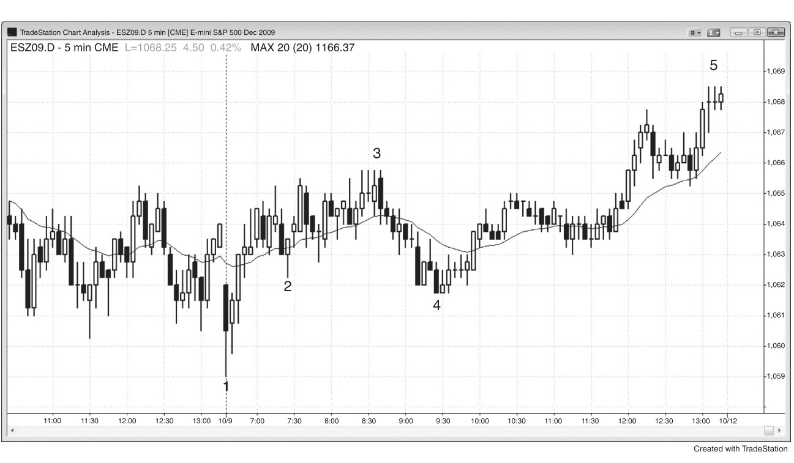
Even though the initial rally may only have a couple of strong trend bars and appear to be leading to a trading range day, the trend resumption can still be strong. In Figure 25.3, the market started as a trend from the open bull trend when it rallied from an expanding triangle bottom and a failed breakout of yesterday’s low. It then ran for two bars, but it stalled in the middle of yesterday’s trading range. A rally from any three-push pattern usually results in at least two legs up, which ultimately developed here. Bar 2 was a breakout pullback that led to another small rally, but then the market lost momentum. It continued to weakly trend above the moving average until bar 3. At this point, it was clear that something was not right. A trend from the open bull trend is one of the strongest forms of trends but this was clearly not trending strongly. That meant that traders would soon decide that the day was not what they thought and they would exit and wait. They would then be looking for a trading range day and a possible new low for the day. It was possible for the bar 2 low to be followed by a double bottom bull flag, but, in the absence of strong early bulls, bears would aggressively push for a new low of the day and the bar 2 low would likely fail. Bar 4 was a second small push below bar 2 and it was followed by a trend into the close, creating a trend resumption bull day, albeit a weak one, and giving the expected second leg up from the expanding triangle bottom. Bar 4 was an exact breakout test of the trend from the open signal bar high.
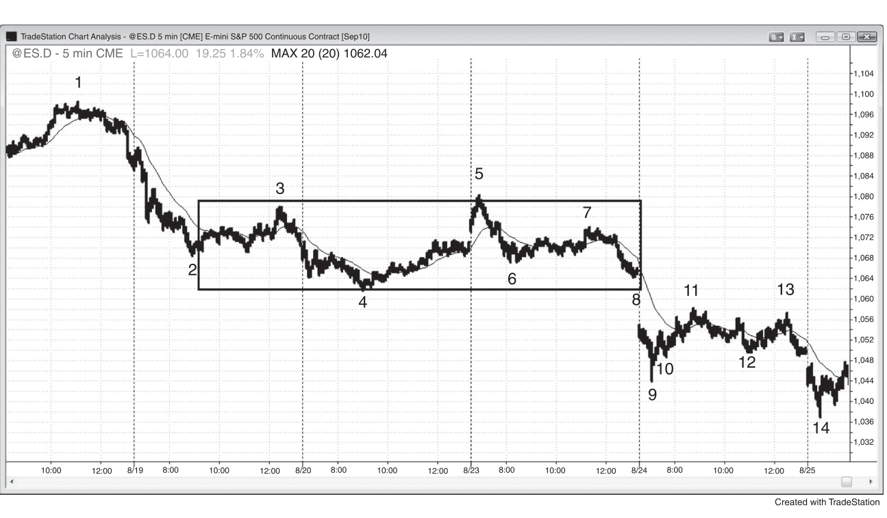
Trend resumption can take place over the course of several days. In Figure 25.4, the market had a strong move down to bar 2 and then entered a trading range that lasted two and a half days. Trading ranges can last a long time, but usually break out in the direction of the trend. The bear trend resumed and had a second leg down from bar 5 to bar 14, five days after the first move down.
The bear leg down from bar 5 to bar 6 was followed by a trading range, and the second leg down ended on the open of the next day at bar 9.
The sell-off from bar 7 to bar 9 was followed by a trading range to bar 13, and the bear trend resumption occurred with the move down to bar 14. This was a three-day trend resumption pattern.
Stairs: Broad Channel Trend
Primary characteristics of stairs days:
- A stairs day is a variant of a trending trading range day where there are at least
- three trading ranges.
- The day has broad swings, but trending highs and lows.
- Because the swings are large, traders can usually place trades in both direc-
- tions, but they should try to swing part or all of their with-trend trades.
- Almost every breakout is followed by a pullback (a breakout test) beyond the
- breakout point, so that there is some overlap between consecutive swings. For example, in a broad bear channel, every breakout to a new low is followed by a rally that goes back above the breakout point but stays below the most recent swing high. However, there is sometimes a swing or two that will extend above the prior swing high by a little. This will make some traders wonder if the market is reversing, but the trend will usually soon resume.
- If each breakout gets a little smaller than the prior one, then this is a shrinking stairs pattern and a sign of waning momentum, which can lead to a larger correction.
When a market has a series of three or more trending swings that resemble a mildly sloping trading range or channel, both the bulls and the bears are active but one side is exerting somewhat more control. Each pullback retraces beyond its breakout point, creating overlap between each breakout spike and the following pullback. Two-way trading is taking place within the broad channel, so traders can look for entries in both directions. If the breakouts get smaller and smaller, then this is a shrinking stairs pattern and indicates waning momentum. It often leads to a two-legged reversal and a trend line break. Many three-push reversals qualify as stairs or shrinking stairs trends that failed and reversed. Stairs are often just pullbacks or flags in higher time frame trends, and it is common to see stairs over the final hour or two of the day and then a breakout of the flag on the open of the next day. For example, a broad bull channel today might just be a large bear flag, and the bear trend could break out tomorrow.
Alternatively, one stair might suddenly accelerate and break out of the trend channel in the with-trend direction. If it then reverses, this overshoot and reversal will likely result in at least a two-legged move. If it does not, the breakout will probably continue for at least two more legs or at least the approximate height of the channel in an imprecise measured move (the distance beyond the channel should be about the same as the distance within the channel).
Traders pay attention to how many ticks breakouts run past the most recent swing point, and then use that number to fade subsequent breakouts, expecting a breakout test. For example, if the last swing low fell 14 ticks below the swing low before it, traders will look to scale into longs beginning around 10 ticks below the most recent swing low, which will usually be around the trend channel line. If the pullback from the most recent breakout was about 15 ticks, they will look to take profits around 10 to 15 ticks up from the low, which will usually be around the trend line (the top of the bear channel).
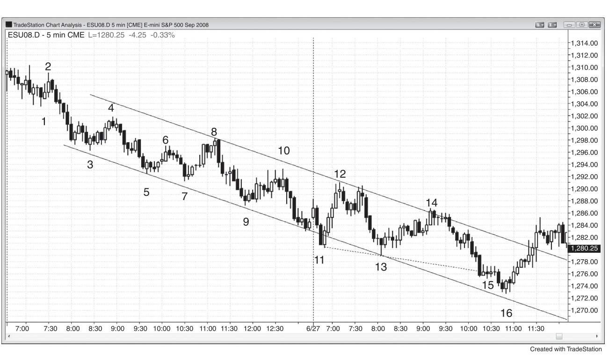
A bear stairs pattern is a downwardly sloping channel where each breakout to a new low is followed by a pullback that goes back above the breakout point. For example, in Figure 26.1 the breakout leg below bar 6 down to bar 9 was followed by a pullback that went back above the bar 7 low, and the rally after the leg that broke below bar 9 down to bar 13 was followed by a pullback that went above the bar 9 breakout point, overlapping the prior range.
Some traders buy near the trend channel line and short near the trend line. Other traders pay attention to how far a breakout goes before there is a pullback. For example, the low of bar 5 was about four points below the low of bar 3. Aggressive bulls placed limit orders to buy at about three to four points below the low of bar 5. They were not filled on the sell-off to bar 7. However, as the market fell below bar 7, they again placed limit orders to buy three to four points lower, and were filled on the move down to bar 9, which had a low that was four points below the low of bar 7. Since prior rallies were about four points, they took profits at around three points above their entries. They did the same on the sell-offs to bars 11 and 16. They tried on the sell-off to bar 13, but the market did not fall far enough for their orders to get filled. Bears did the opposite. They saw that past rallies were about four to six points, so they scaled into shorts around three to five points above the most recent swing low, which was in the area of the bear trend line. This style of trading is only for experienced traders. Beginners should restrict themselves to stop entries, so that the market is already going their way (this is discussed in the second book).
Bar 7 was the third push down and a shrinking stair (it extended less below bar 5 than bar 5 extended below bar 3). The channel lines are drawn as best fit lines to highlight that the market is trending down and in a channel. There is clearly twosided trading and traders should be buying the lows and selling the highs when they see appropriate setups.
Deeper Discussion of This Chart
The market opened near the bottom of the bear channel that started yesterday in Figure 26.1 and broke out below the channel. The breakout failed with a two-bar reversal that led to a four-bar bull spike. After a double top that tested the bear trend line (drawn as a parallel of the best fit trend channel line), the market had a spike down to bar 13.
With both bull and bear spikes, the two sides were fighting over the direction of the expected channel. The bulls started a channel but it failed at the trend line and reversed down in a bear channel. The market reversed up from a test of the trend channel line where the bar 16 low could not reach the line. This is a sign of aggressive buying. The bar 16 two-bar reversal was also a final flag long setup from the bar 15 four-bar final flag.
Three pushes down does not guarantee a trend reversal. The move down to bar 7 had very little buying pressure. There were no large bull trend bars and no strong climactic reversals. The move up from bar 7 was also not particularly strong. This was not how strong reversals typically look, and because of that, it did not attract enough strong bulls to reverse the market. Instead, the market formed a wedge bear flag (bar 6 and then the two small pushes up from bar 7 were the three pushes) and a lower high (although the rally was above bar 6 and therefore a sign of some strength, it was still below bar 4), and the bear trend resumed.
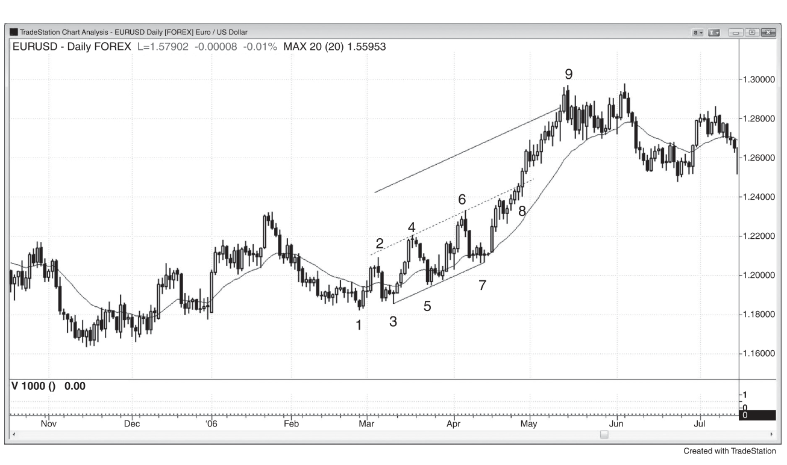
A stairs pattern can accelerate into a stronger trend (see Figure 26.2). By bar 7, the EUR/USD forex chart had three higher highs and lows in a channel and therefore formed a stair type of bull trend.
Bar 8 was a bull trend bar that broke out of the top of the channel, and it was followed by a bear reversal bar that never triggered a short. The breakout should extend to about a measured move up to a parallel line that is about the same distance from the middle line as the middle line is from the bottom line (an Andrew’s Pitchfork move), which it did. The acceleration upward is typical when a wedge top fails. There were three pushes up that ended at bar 6, but you could also view the small swing high just before bar 8 as the third push up if you restarted your count with the strong bull spike up to bar 4. The failed wedge was followed by about a measured move up equal to about the height of the wedge (the bar 6 high to the bar 3 or maybe bar 1 low).
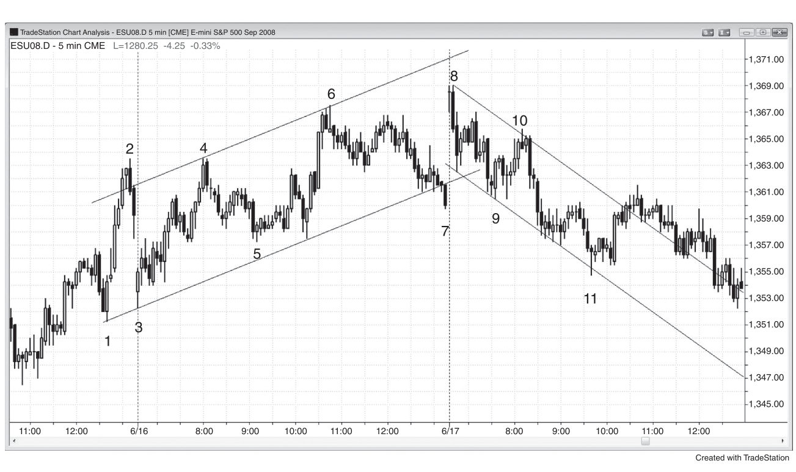
When each breakout is smaller than the previous one, the trend’s momentum is waning and a deeper pullback or a reversal might soon follow. Figure 26.3 shows a bull trend stairs pattern with three or more trending higher highs and lows contained in a roughly drawn channel. Bars 4, 6, and 8 formed shrinking stairs, representing loss of bullish momentum and presaging the reversal. The channel functioned like a large bear flag and the bear breakout occurred at bar 9.
After the bar 9 breakout, there was a lower high breakout pullback to bar 10 that resulted in a stairs bear trend. Bar 10 was a rough double top bear flag with the high of the first pullback in the move down to bar 9.
Bar 11 overshot the bear channel to the downside and led to a small two-legged reversal up and the expected penetration of the top of the channel.
Once the market begins to form stairs down, you can usually fade the close of every strong trend bar breakout for a scalp. Buy every bear trend bar that closes below a prior bear stair for a scalp. Likewise, in bull stairs, you can scalp a short on the close of any trend bar that exceeds the high of the prior stair. In general, though, it is safer to enter on a stop as the market reverses (for example, if the market reverses up from the bottom of the channel, enter on a stop above the prior bar).